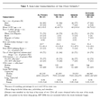
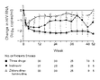
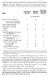

Original Article
Treatment with Indinavir, Zidovudine, and Lamivudine in Adults with Human Immunodeficiency Virus Infection and Prior Antiretroviral Therapy
Roy M. Gulick, M.D., M.P.H., John W. Mellors, M.D., Diane Havlir, M.D., Joseph J. Eron, M.D., Charles Gonzalez, M.D., Deborah McMahon, M.D., Douglas D. Richman, M.D., Fred T. Valentine, M.D., Leslie Jonas, B.S., Anne Meibohm, Ph.D., Emilio A. Emini, Ph.D., Jeffrey A. Chodakewitz, M.D., Paul Deutsch, M.D., Ph.D., Daniel Holder, Ph.D., William A. Schleif, M.S., and Jon H. Condra, Ph.D.
N Engl J Med 1997; 337:734-739September 11, 1997DOI: 10.1056/NEJM199709113371102
- Abstract
- Article
- References
- Citing Articles (808)
Background
The new protease inhibitors are potent inhibitors of the human immunodeficiency virus (HIV), and in combination with other antiretroviral drugs they may be able to cause profound and sustained suppression of HIV replication.
Methods
In this double-blind study, 97 HIV-infected patients who had received zidovudine treatment for at least 6 months and had 50 to 400 CD4 cells per cubic millimeter and at least 20,000 copies of HIV RNA per milliliter were randomly assigned to one of three treatments for up to 52 weeks: 800 mg of indinavir every eight hours; 200 mg of zidovudine every eight hours combined with 150 mg of lamivudine twice daily; or all three drugs. The patients were followed to monitor the occurrence of adverse events and changes in viral load and CD4 cell counts.
Results
The decrease in HIV RNA over the first 24 weeks was greater in the three-drug group than in the other groups (P<0.001 for each comparison). RNA levels decreased to less than 500 copies per milliliter at week 24 in 28 of 31 patients in the three-drug group (90 percent), 12 of 28 patients in the indinavir group (43 percent), and none of 30 patients in the zidovudine–lamivudine group. The increase in CD4 cell counts over the first 24 weeks was greater in the two groups receiving indinavir than in the zidovudine–lamivudine group (P<0.01 for each comparison). The changes in the viral load and the CD4 cell count persisted for up to 52 weeks. All the regimens were generally well tolerated.
Conclusions
In most HIV-infected patients with prior antiretroviral therapy, the combination of indinavir, zidovudine, and lamivudine reduces levels of HIV RNA to less than 500 copies per milliliter for as long as one year.
Media in This Article
Article Activity
Combination therapy with two nucleoside analogues is better than monotherapy in reducing levels of human immunodeficiency virus (HIV) RNA, increasing CD4 cell counts, and preventing the acquired immunodeficiency syndrome (AIDS) and death.1-5 The HIV-protease inhibitors are a newer class of agents with potent antiretroviral activity.6-9 Early dose-escalation studies showed that monotherapy with indinavir or ritonavir affected HIV RNA levels and CD4 cell counts markedly.10-12 These antiretroviral effects were transient in some patients at lower drug doses and were associated with the emergence of drug-resistant virus.13-15 A recent study showed that a combination of zidovudine, zalcitabine, and saquinavir had more antiretroviral activity than zidovudine combined with either zalcitabine or saquinavir, although the treatment effects were relatively small and transient.16
Because of the potent antiretroviral activity of indinavir8,12 and the sustained antiretroviral effects of the combination of zidovudine and lamivudine,1,2 we decided to study regimens designed for maximal suppression of HIV replication. We compared the safety and antiretroviral activity of three treatments — indinavir alone, zidovudine and lamivudine in combination, and all three drugs together — in a group of HIV-infected patients with substantial prior antiretroviral therapy.
Methods
Study Patients
Adults who were seropositive for HIV type 1 and who had at least six months of prior zidovudine therapy were screened for enrollment at four sites. They were eligible for the study if they had a serum HIV RNA level of at least 20,000 copies per milliliter (Amplicor HIV Monitor test, Roche Diagnostics Systems, Branchburg, N.J.) at the time of screening and 50 to 400 CD4 cells per cubic millimeter when the values obtained in two determinations at least one week apart were averaged. Additional criteria for enrollment included a hemoglobin level exceeding 9.0 g per deciliter (in men) or 8.5 g per deciliter (in women), a neutrophil count greater than 1000 per cubic millimeter, a platelet count of at least 100,000 per cubic millimeter, a serum creatinine level less than 1.5 times the upper limit of normal, a total bilirubin level in the normal range, and levels of hepatic aminotransferases and alkaline phosphatase less than 2 times the upper limit of normal.
Patients were excluded if they had received lamivudine or any HIV-protease inhibitor, if they required maintenance therapy for an opportunistic infection, or if they had received investigational or immunomodulatory drugs within 30 days before entry into the study. Also excluded were pregnant or breast-feeding women, as were patients with active substance abuse, hepatitis B surface antigenemia, substantial elevations of hepatic aminotransferases in the prior year, or intolerance to zidovudine. Patients were permitted to take prophylaxis for Pneumocystis carinii pneumonia.
Study Design
This was a randomized, double-blind, controlled study of the safety and activity of three antiretroviral regimens. Randomization followed a permuted-block design stratified according to site and CD4 cell count (either 50 to 250 or 251 to 400 cells per cubic millimeter). The planned duration of the double-blind study was 52 weeks, but because there were preliminary findings of antiretroviral activity, the study design was amended to provide open-label therapy with all three drugs after a minimum of 24 weeks of blinded, randomized therapy. This change resulted in periods of blinded, randomized treatment of varying lengths, from 24 weeks to 52 weeks. Only data corresponding to the blinded portion of the study are presented here. All the patients continued to be monitored while they were receiving open-label therapy. The study was approved by the internal review boards at each site, and all the patients gave written informed consent.
Treatment Regimens
Eligible patients discontinued their antiretroviral therapy two weeks before entry and were then randomly assigned one of three regimens given orally: 800 mg of indinavir (Crixivan, Merck, West Point, Pa.) every 8 hours; 200 mg of zidovudine (Retrovir, Glaxo–Wellcome, Research Triangle Park, N.C.) every 8 hours combined with 150 mg of lamivudine (Epivir, Glaxo–Wellcome) every 12 hours; or all three drugs at the same doses. The regimens included appropriate matching placebos.
Assessments
The patients were assessed weekly for four weeks, every two weeks through week 16, and every four weeks through week 52. At base line and each study visit, the medical history was reviewed, a physical examination was performed, and standardized laboratory tests were conducted. A pregnancy test of serum was performed in eligible women before the study and every four weeks thereafter. Blood samples were collected from a subgroup of patients on day 8 to determine plasma drug concentrations. Patients who discontinued the study were reevaluated two weeks after their last dose of the study drugs. Adverse events were managed by investigators unaware of the treatment assignments, using predetermined guidelines.
Virologic and Immunologic Studies
Samples were obtained at screening, at base line, and at each study visit. Serum was processed, stored at -70°C, and assayed later for HIV RNA by a quantitative reverse-transcriptase–polymerase-chain-reaction (PCR) assay (Amplicor test). The lower limit of quantification was 500 RNA copies per milliliter. The assay results were reported as values when there were 500 or more copies per milliliter or as “less than 500 copies per milliliter,” or as “negative” if no amplification signal was detected. An investigational version of an ultrasensitive PCR assay was performed on samples in which the standard assay detected a level of less than 500 copies per milliliter. This assay had a consistent cutoff of detection of approximately 50 RNA copies per milliliter. In the analyses of resistance, viral RNA was extracted from serum, amplified by PCR, and cloned and sequenced by a previously described method.13,14 T-lymphocyte subgroups were quantified by flow cytometry.
Statistical Analysis
The primary measures of antiretroviral-drug activity were the magnitude and duration of changes in serum HIV RNA and CD4 cell counts over a period of 24 weeks, as summarized by an area-under-the-curve measurement that incorporated the base-line value.17,18 All the patients with determinations made at base line and at least once subsequently were included in the analyses. For the purpose of analysis, RNA values reported as “less than 500 copies per milliliter” were considered equivalent to 500 copies per milliliter, and values reported as “negative” were considered equivalent to 250 copies per milliliter. The HIV RNA values underwent a log10 transformation before analysis. The area under the curve was compared among the treatment groups with an analysis-of-variance model that included the study treatment and a variable defined according to site and CD4 stratum. In calculating the proportion of patients who had HIV RNA levels of less than 50 copies per milliliter by the ultrasensitive investigational assay, we assumed that patients who had at least 500 RNA copies per milliliter by the standard assay had at least 50 copies per milliliter. For each pair of treatments, Fisher's exact test was used to compare the groups with respect to the proportion of patients with clinical nephrolithiasis, severe drug-related adverse events, and clinically significant laboratory abnormalities. A clinically significant laboratory abnormality was considered to be present if a value exceeded the predefined criteria or an abnormality present at base line became worse. The analyses were performed on an intention-to-treat basis. Nominal unadjusted two-sided P values were reported.
Results
Study Patients
Ninety-seven patients were enrolled in the study from April to December 1995. Initially, 27 patients were enrolled for a four-week analysis of safety; when no serious adverse events occurred, the remaining 70 patients were enrolled. The base-line characteristics of the patients were similar in the three treatment groups (Table 1Table 1Base-Line Characteristics of the Study Patients.).
Of the 97 patients, 92 were studied on a randomized, blinded basis for 24 weeks, 79 for 36 weeks, and 16 for 52 weeks. The patients switched to open-label three-drug therapy after a median of 41 weeks (range, 24 to 52). Seven patients discontinued the study after 4 to 44 weeks, for various reasons: an adverse event (one patient), loss to follow-up (one), the use of medications prohibited by the protocol (two), and the patient's request (three). There were no significant differences among the treatment groups in the rates of discontinuation (P>0.35 for each pairwise comparison).
Pharmacokinetic Analysis
Plasma concentrations of the study drug were measured in the first 27 patients enrolled in the study. There were no clinically significant pharmacokinetic interactions among the study medications.
HIV RNA
Over a 24-week period, serum HIV RNA levels declined in all three groups, with adjusted mean (±SE) decreases (in the area-under-the-curve analysis) of 1.77±0.11 log10 in the three-drug group, 1.24±0.11 log10 in the indinavir group, and 0.83±0.11 log10 in the zidovudine–lamivudine group (Figure 1Figure 1Changes from Base Line in Serum HIV RNA Levels during the 52 Weeks of the Study.). The decrease was significantly greater in the three-drug group than in the other two groups (P<0.001 for each pairwise comparison). In addition, the decrease in the indinavir group was significantly greater (P = 0.005) than that in the zidovudine–lamivudine group. In the three-drug group there was a median reduction of more than 2 log10 in the HIV RNA level that lasted from week 8 to week 52. In contrast, after initial decreases, the RNA levels increased in both the indinavir and zidovudine–lamivudine groups.
Figure 2AFigure 2Proportion of Patients with Serum HIV RNA Levels of Less Than 500 Copies per Milliliter (Upper Panel) and Less Than 50 Copies per Milliliter (Lower Panel). shows the proportion of patients in each group who had decreases in HIV RNA levels to less than 500 copies per milliliter. At week 24, 90 percent of the patients in the three-drug group (28 of 31) had levels of less than 500 RNA copies per milliliter, as compared with 43 percent of the indinavir group (12 of 28 patients) and none of 30 patients in the zidovudine–lamivudine group. These proportions were sustained for up to 52 weeks. Figure 2B shows the proportion of patients in each group whose levels decreased to less than 50 copies per milliliter.
Genotypic Analysis
There was no evidence of resistance to lamivudine19-21 at base line. After 24 weeks of therapy, 84 percent of the zidovudine–lamivudine group (26 of 31) had such resistance, and 53 percent (10 of 19) of patients with amplifiable RNA in the indinavir group had mutations conferring resistance to indinavir.14 At the same time, 26 of 31 serum samples from patients in the three-drug group could not be amplified because of low HIV RNA levels. Of the five patients in that group who had more than 500 RNA copies per milliliter by week 32, all had virus with resistance to lamivudine, and three acquired indinavir-resistance mutations.
CD4 Cell Counts
CD4 cell counts increased during the first 24 weeks of treatment in all the groups, with adjusted mean (±SE) increases (in the area-under-the-curve analysis) of 86.0±11.9 cells per cubic millimeter in the three-drug group, 100.6±12.5 in the indinavir group, and 46.3±12.1 in the zidovudine–lamivudine group (Figure 3Figure 3Changes from Base Line in the CD4 Cell Count during the 52 Weeks of the Study.). The increase was significantly greater in the groups assigned to the two regimens containing indinavir than in the zidovudine–lamivudine group (P<0.01 for each comparison). There was no significant difference between the three-drug group and the indinavir group over the first 24 weeks (P = 0.36). The CD4 cell count in each group remained at approximately the same level from week 24 to week 52.
Adverse Events
The study treatments were generally well tolerated for up to 52 weeks (Table 2Table 2Adverse Events According to Treatment Group.). One patient withdrew from the study because of an adverse event (nausea). Elevated bilirubin levels and clinical nephrolithiasis, defined as pain in the flank with or without hematuria or the passage of a stone or gravel in the urine, occurred more often in the patients receiving indinavir. There were no other significant differences among the groups in the occurrence of severe, drug-related clinical events or clinically important laboratory abnormalities. One new AIDS-defining illness (presumptive candida esophagitis) occurred in a patient randomly assigned to zidovudine and lamivudine. There were no deaths among the study patients.
Discussion
The three-drug combination of indinavir, zidovudine, and lamivudine reduced the viral load in serum to less than 500 copies per milliliter for up to one year in more than 80 percent of the HIV-infected patients we studied, all of whom had prior antiretroviral therapy. Most patients in the three-drug group whose HIV RNA levels were reduced to less than 500 copies per milliliter also had less than 50 RNA copies per milliliter when the ultrasensitive investigational assay was used. The sustained response in HIV RNA levels with the three-drug therapy was superior to that with either indinavir monotherapy or the combination of zidovudine and lamivudine. No prior antiretroviral regimen has produced the marked, sustained decreases in viral load achieved with this three-drug combination.
The continued suppression of HIV RNA levels for one year without evidence of the emergence of resistant virus suggests that there was little, if any, continuing HIV replication in the patients receiving three-drug therapy. At 24 weeks, high levels of resistance to lamivudine had developed in most of the patients receiving zidovudine and lamivudine,19-21 and over half the patients with amplifiable HIV RNA who were receiving indinavir alone had resistance to indinavir.14 In contrast, most patients treated with the three-drug combination provided serum samples from which HIV RNA could not be amplified, implying that the virus continued to be susceptible. The durable antiretroviral activity of the three-drug regimen appears to result directly from the inability of resistant virus to emerge.
If there is to be long-term control of HIV infection, the goal of antiretroviral therapy should be the sustained, complete suppression of HIV replication and the prevention of resistance to the antiretroviral drugs. Without complete viral suppression, antiretroviral regimens will probably select for drug-resistant mutants, leading to the failure of therapy. The patients we studied had taken neither lamivudine nor any protease inhibitor before entering the study. When lamivudine and indinavir were introduced concurrently as part of the three-drug regimen, they had potent antiretroviral activity, thus preventing the development of resistance to lamivudine, which is typically seen within weeks after the start of lamivudine treatment, either alone or with zidovudine.22,23 Patients previously treated with lamivudine or a protease inhibitor may not have similar sustained benefits with this three-drug regimen.
The reasons for the rebound of serum HIV RNA levels in a few patients taking the three drugs are not clear. Among the five patients in the three-drug group who had more than 500 HIV RNA copies per milliliter by week 32, all had resistance to lamivudine and three had resistance to indinavir. One of these five patients discontinued therapy prematurely, and three others reported intermittent adherence to the study regimen. In the fifth patient, the HIV RNA level declined markedly but then increased, with the concomitant development of resistance to both lamivudine and indinavir. The rebound in HIV RNA levels did not appear to be associated with base-line resistance to zidovudine, base-line polymorphisms of viral-protease residues, or the level of HIV RNA at entry.
This study was designed to compare the treatment groups with respect to viral load and CD4 cell responses, not clinical end points. Recent evidence from natural-history studies and clinical trials links viral load and clinical outcome.1,2,4,5,24-29 These studies suggest that the sustained reductions of HIV RNA we observed will probably translate into delayed progression to AIDS and prolonged survival.
The dissociation between the marked decreases in viral load and the incomplete restoration of CD4 cell counts in the three-drug group remains unexplained. Some patients may have ongoing, slower increases in CD4 cell counts after six months of therapy. In patients with autoimmune disease or cancer who receive intensive radiation therapy or chemotherapy, CD4 cell counts recover slowly and may take three years or more to reach normal levels.30,31 Further study is needed to determine what level of restoration of CD4 cell number and function can ultimately be attained with the three-drug regimen. It remains to be seen whether the immune system can be fully reconstituted even when regimens that achieve maximal HIV suppression are used.
All the study treatments were generally well tolerated, with only a single patient discontinuing the blinded portion of the study because of an adverse event. As expected, the use of indinavir was associated with episodes of clinical nephrolithiasis and asymptomatic increases in indirect bilirubin. The proportion of patients who met our definition of nephrolithiasis was higher in this study than has previously been observed.32 To facilitate long-term compliance with drug regimens, it is essential that the antiretroviral drugs be well tolerated.
In summary, the antiretroviral-drug combination of indinavir, zidovudine, and lamivudine reduced HIV RNA levels to less than 500 copies per milliliter in most HIV-infected patients previously treated with zidovudine for as long as one year. This suggests that profound suppression of HIV replication inhibits the emergence of drug-resistant virus and that such inhibition should be an important goal in the long-term treatment of HIV infection. A regimen that falls short of maximal viral suppression will probably be accompanied by the emergence of drug resistance and by ultimate clinical failure. The results of this study support a new standard for the evaluation of antiretroviral therapies and suggest a new paradigm for the treatment of HIV disease.
Presented in part at the Third Conference on Retroviruses and Opportunistic Infections, Washington, D.C., January 28–February 1, 1996; and the 11th International Conference on AIDS, Vancouver, Canada, July 7–12, 1996.
Supported by contracts (P30-AI-27742, U01-AI-27665, N01-AI-27670, N01-AI-38858, N01-AI-36214, N01-AI-29164, M01-RR00056, M01-RR00096, M01-RR00046) with the National Institutes of Health and by grants from Merck Research Laboratories.
We are indebted to the patients who volunteered for the study; to our study coordinators, Candida Talabucon, R.N., Richard Hutt, R.N., Nancy Mantz, B.S.N., Carl Garrubba, P.A., Kathy Nuffer, R.N., and Janet Kozel, P.A.; to Charles Lin for performing pharmacokinetic assays; to Andrew Sterrett for statistical support; to Malathi Shivaprakash, M.S., Donald Graham, M.S., Robert Danovich, Ph.D., Tao Yang, M.S., and Donna Laird, B.S., for technical virologic support; to Olivia Ortiz, M.D.; and to James Rooney, M.D., Glaxo–Wellcome, for providing zidovudine and lamivudine.
Source Information
From the New York University School of Medicine, New York (R.M.G., C.G., F.T.V.); the University of Pittsburgh and Veterans Affairs Medical Center, Pittsburgh (J.W.M., D.M.); the University of California, San Diego (D.H., D.D.R.); the University of North Carolina, Chapel Hill (J.J.E.); and Merck Research Laboratories, West Point, Pa. (L.J., A.M., E.A.E., J.A.C.).
Address reprint requests to Dr. Gulick at NYU Medical Center, Department of Medicine, 550 First Ave., New York, NY 10016.
Other authors were Paul Deutsch, M.D., Ph.D., Daniel Holder, Ph.D., William A. Schleif, M.S., and Jon H. Condra, Ph.D. (all from Merck Research Laboratories, West Point, Pa.).
References
1
Eron JJ ,Benoit SL ,Jemsek J , et al. Treatment with lamivudine, zidovudine, or both in HIV-positive patients with 200 to 500 CD4+ cells per cubic millimeter. N Engl J Med 1995;333:1662-1669
Free Full Text | Web of Science | Medline2
Bartlett JA ,Benoit SL ,Johnson VA , et al. Lamivudine plus zidovudine compared with zalcitabine plus zidovudine in patients with HIV infection: a randomized, double-blind, placebo-controlled trial. Ann Intern Med 1996;125:161-172
Web of Science | Medline3
The Delta Coordinating Committee
CrossRef | Web of Science | Medline4
Hammer SM ,Katzenstein DA ,Hughes MD , et al. A trial comparing nucleoside monotherapy with combination therapy in HIV-infected adults with CD4 cell counts from 200 to 500 per cubic millimeter. N Engl J Med 1996;335:1081-1090
Free Full Text | Web of Science | Medline5
Katzenstein DA ,Hammer SM ,Hughes MD , et al. The relation of virologic and immunologic markers to clinical outcomes after nucleoside therapy in HIV-infected adults with 200 to 500 CD4 cells per cubic millimeter. N Engl J Med 1996;335:1091-1098
Free Full Text | Web of Science | Medline6
Roberts NA ,Martin JA ,Kinchington D , et al. Rational design of peptide-based HIV proteinase inhibitors. Science 1990;248:358-361
CrossRef | Web of Science | Medline7
Kempf DJ ,Marsh KC ,Denissen JF , et al. ABT-538 is a potent inhibitor of human immunodeficiency virus protease and has high oral bioavailability in humans. Proc Natl Acad Sci U S A 1995;92:2484-2488
CrossRef | Web of Science | Medline8
Vacca JP ,Dorsey BD ,Schleif WA , et al. L-735,524: an orally bioavailable human immunodeficiency virus type 1 protease inhibitor. Proc Natl Acad Sci U S A 1994;91:4096-4100
CrossRef | Web of Science | Medline9
Kim EE ,Baker CT ,Dwyer MD , et al. Crystal structure of HIV-1 protease in complex with VX-478, a potent and orally bioavailable inhibitor of the enzyme. J Am Chem Soc 1995;117:1181-1182
CrossRef | Web of Science10
Danner SA ,Carr A ,Leonard JM , et al. A short-term study of the safety, pharmacokinetics, and efficacy of ritonavir, an inhibitor of HIV-1 protease. N Engl J Med 1995;333:1528-1533
Free Full Text | Web of Science | Medline11
Markowitz M ,Saag M ,Powderly WG , et al. A preliminary study of ritonavir, an inhibitor of HIV-1 protease, to treat HIV-1 infection. N Engl J Med 1995;333:1534-1539
Free Full Text | Web of Science | Medline12
Mellors J, Steigbigel R, Gulick R, et al. Antiretroviral activity of the oral protease inhibitor, MK-639, in p24 antigenemic, HIV-1 infected patients with <500 CD4/mm3. In: Abstracts of the 35th International Conference on Antimicrobial Agents and Chemotherapy, San Francisco, September 17–20, 1995. Washington, D.C.: American Society of Microbiology, 1995:235. abstract.
13
Condra JH ,Schleif WA ,Blahy OM , et al. In vivo emergence of HIV-1 variants resistant to multiple protease inhibitors. Nature 1995;374:569-571
CrossRef | Web of Science | Medline14
Condra JH ,Holder DJ ,Schleif WA , et al. Genetic correlates of in vivo viral resistance to indinavir, a human immunodeficiency virus type 1 protease inhibitor. J Virol 1996;70:8270-8276
Web of Science | Medline15
Molla A ,Korneyeva M ,Gao Q , et al. Ordered accumulation of mutations in HIV protease confers resistance to ritonavir. Nat Med 1996;2:760-766
CrossRef | Web of Science | Medline16
Collier AC ,Coombs RW ,Schoenfeld DA , et al. Treatment of human immunodeficiency virus infection with saquinavir, zidovudine, and zalcitabine. N Engl J Med 1996;334:1011-1017
Free Full Text | Web of Science | Medline17
Dawson JD ,Lagakos SW . Analyzing laboratory marker changes in AIDS clinical trials. J Acquir Immune Defic Syndr 1991;4:667-676
Web of Science | Medline18
Dawson JD . Comparing treatment groups on the basis of slopes, areas-under-the-curve, and other summary measures. Drug Inf J 1994;28:723-73219
Tisdale M ,Kemp SD ,Parry NR ,Larder BA . Rapid in vitro selection of human immunodeficiency virus type 1 resistant to 3'-thiacytidine inhibitors due to a mutation in the YMDD region of reverse transcriptase. Proc Natl Acad Sci U S A 1993;90:5653-5656
CrossRef | Web of Science | Medline20
Schinazi RF ,Lloyd RM Jr ,Nguyen MH , et al. Characterization of human immunodeficiency viruses resistant to oxathiolane-cytosine nucleosides. Antimicrob Agents Chemother 1993;37:875-881
Web of Science | Medline21
Gao Q ,Gu Z ,Parniak MA , et al. The same mutation that encodes low-level human immunodeficiency virus type 1 resistance to 2',3'-dideoxyinosine and 2',3'-dideoxycytidine confers high-level resistance to the (-) enantiomer of 2',3'-dideoxy-3'-thiacytidine. Antimicrob Agents Chemother 1993;37:1390-1392
Web of Science | Medline22
Schuurman R ,Nijhuis M ,van Leeuwen R , et al. Rapid changes in human immunodeficiency virus type 1 RNA load and appearance of drug-resistant virus populations in persons treated with lamivudine (3TC). J Infect Dis 1995;171:1411-1419
CrossRef | Web of Science | Medline23
Kuritzkes DR ,Quinn JB ,Benoit SL , et al. Drug resistance and virologic response in NUCA 3001, a randomized trial of lamivudine (3TC) versus zidovudine (ZDV) versus ZDV plus 3TC in previously untreated patients. AIDS 1996;10:975-981
CrossRef | Web of Science | Medline24
Mellors JW ,Rinaldo CR Jr ,Gupta P , et al. Prognosis in HIV-1 infection predicted by the quantity of virus in plasma. Science 1996;272:1167-1170
CrossRef | Web of Science | Medline25
O'Brien TR ,Blattner WA ,Waters D , et al. Serum HIV-1 RNA levels and time to development of AIDS in the Multicenter Hemophilia Cohort Study. JAMA 1996;276:105-110
CrossRef | Web of Science | Medline26
O'Brien WA ,Hartigan PM ,Martin D , et al. Changes in plasma HIV-1 RNA and CD4+ lymphocyte counts and the risk of progression to AIDS. N Engl J Med 1996;334:426-431
Free Full Text | Web of Science | Medline27
Welles SL ,Jackson JB ,Yen-Lieberman B , et al. Prognostic value of plasma human immunodeficiency virus type 1 (HIV-1) RNA levels in patients with advanced HIV-1 disease and with little or no prior zidovudine therapy. J Infect Dis 1996;174:696-703
CrossRef | Web of Science | Medline28
Coombs RW ,Welles SL ,Hooper C , et al. Association of plasma human immunodeficiency virus type 1 RNA level with risk of clinical progression in patients with advanced infection. J Infect Dis 1996;174:704-712
CrossRef | Web of Science | Medline29
Staszewski S, Bartlett J, Eron J, et al. Reductions in HIV-1 disease progression for AZT/3TC relative to control treatments: a meta analysis. In: Supplement to abstracts of the 11th International Conference on AIDS, Vancouver, B.C., July 7–12, 1996:21. abstract.
30
Buckton KE ,Brown WM ,Smith PG . Lymphocyte survival in men treated with x-rays for ankylosing spondylitis. Nature 1967;214:470-473
CrossRef | Web of Science | Medline31
Michie CA ,McLean A ,Alcock C ,Beverley PC . Lifespan of human lymphocyte subsets defined by CD45 isoforms. Nature 1992;360:264-265
CrossRef | Web of Science | Medline32
Crixivan. In: Physicians' desk reference. 51st ed. Montvale, N.J.: Medical Economics, 1997:1670-3.
Citing Articles
1
Donglin Ding, Xiying Qu, Lin Li, Xin Zhou, Sijie Liu, Shiguan Lin, Pengfei Wang, Shaohui Liu, Chuijin Kong, Xiaohui Wang, Lin Liu, Huanzhang Zhu. (2013) Involvement of histone methyltransferase GLP in HIV-1 latency through catalysis of H3K9 dimethylation. Virology 440:2, 182-189
CrossRef2
Zachary Y. Kerr, Katye R. Miller, Dylan Galos, Randi Love, Charles Poole. (2013) Challenges, Coping Strategies, and Recommendations Related to the HIV Services Field in the HAART Era: A Systematic Literature Review of Qualitative Studies from the United States and Canada. AIDS Patient Care and STDs 27:2, 85-95
CrossRef3
Kristine B. Patterson, Heather A. Prince, Trenton Stevens, Nicholas J. Shaheen, Evan S. Dellon, Ryan D. Madanick, Steven Jennings, Myron S. Cohen, Angela D.M. Kashuba. (2013) Differential Penetration of Raltegravir throughout Gastrointestinal Tissue. AIDS1
CrossRef4
Shannon Byrne, Nancy M. Petry. (2013) Reliability and validity of the Functional Assessment of Human Immunodeficiency Virus Infection (FAHI) in patients with drug and alcohol use disorders. AIDS Care 25:1, 118-125
CrossRef5
Igor Kozak, J. Allen McCutchan, William R. Freeman. HIV-Associated Infections. In: Retina. Elsevier, 2013:1441-1472.
CrossRef6
Ramakrishna Nirogi, Vishwottam Kandikere, Prashanth Komarneni, Raghupathi Aleti, NagaSuryaPrakash Padala, Ilayaraja Kalaikadhiban, Gopinadh Bhyrapuneni, Nageswararao Muddana. (2012) Exploring dried blood spot sampling technique for simultaneous quantification of antiretrovirals: lamivudine, stavudine and nevirapine in a rodent pharmacokinetic study. Biomedical Chromatography 26:12, 1472-1481
CrossRef7
Daniel Kulke, Jürgen Krücken, Janina Demeler, Achim Harder, Heinz Mehlhorn, Georg Samson-Himmelstjerna. (2012) In vitro efficacy of cyclooctadepsipepdtides and aminophenylamidines alone and in combination against third-stage larvae and adult worms of Nippostrongylus brasiliensis and first-stage larvae of Trichinella spiralis. Parasitology Research
CrossRef8
Murali Krishna Matta, Nageswara Rao Pilli, Jaswanth Kumar Inamadugu, Laxminarayana Burugula, Seshagiri Rao JVLN. (2012) Simultaneous quantitation of lamivudine, zidovudine and nevirapine in human plasma by liquid chromatography–tandem mass spectrometry and application to a pharmacokinetic study. Acta Pharmaceutica Sinica B 2:5, 472-480
CrossRef9
Michael P. Carey, Lori A. J. Scott-Sheldon, Peter A. Vanable. HIV/AIDS. In: Handbook of Psychology, Second Edition. John Wiley & Sons, Inc., 2012.
CrossRef10
Julio S.G. Montaner. (2012) Consecuencias nefastas para la epidemia de virus de la inmunodeficiencia humana en España a raíz del nuevo marco legal sanitario sobre los inmigrantes en situación irregular: ahorra hoy y pagarás mañana. Enfermedades Infecciosas y Microbiología Clínica
CrossRef11
S.I. Bello. (2012) Management Outcomes of HIV/aids Patients on Haart in a Secondary Health Institution in North Central, Nigeria. Pharmacologia 3:8, 336-343
CrossRef12
Vanessa A. Evans, Gabriela Khoury, Suha Saleh, Paul U. Cameron, Sharon R. Lewin. (2012) HIV persistence: Chemokines and their signalling pathways. Cytokine & Growth Factor Reviews 23:4-5, 151-157
CrossRef13
Michael-John Milloy, Julio Montaner, Evan Wood. (2012) Barriers to HIV treatment among people who use injection drugs. Current Opinion in HIV and AIDS 7:4, 332-338
CrossRef14
Guillaume Mousseau, Mark A. Clementz, Wendy N. Bakeman, Nisha Nagarsheth, Michael Cameron, Jun Shi, Phil Baran, Rémi Fromentin, Nicolas Chomont, Susana T. Valente. (2012) An Analog of the Natural Steroidal Alkaloid Cortistatin A Potently Suppresses Tat-Dependent HIV Transcription. Cell Host & Microbe 12:1, 97-108
CrossRef15
Douglas D Richman. (2012) Contending with the challenges of HIV: a first-hand account. Future Virology 7:7, 645-648
CrossRef16
, David A. Martinez, Kathy Goggin, Delwyn Catley, Mary M. Gerkovich, Karen Williams, Julie Wright, Jannette Berkley-Patton. (2012) Do Coping Styles Mediate the Relationship Between Substance Use and Educational Attainment and Antiretroviral Adherence?. AIDS and Behavior
CrossRef17
Tae-Wook Chun, Anthony S. Fauci. (2012) HIV reservoirs. AIDS 26:10, 1261-1268
CrossRef18
V. Le Douce, A. Janossy, H. Hallay, S. Ali, R. Riclet, O. Rohr, C. Schwartz. (2012) Achieving a cure for HIV infection: do we have reasons to be optimistic?. Journal of Antimicrobial Chemotherapy 67:5, 1063-1074
CrossRef19
Daniel E. Goldberg, Robert F. Siliciano, William R. Jacobs. (2012) Outwitting Evolution: Fighting Drug-Resistant TB, Malaria, and HIV. Cell 148:6, 1271-1283
CrossRef20
Michael S. Glickman, Charles L. Sawyers. (2012) Converting Cancer Therapies into Cures: Lessons from Infectious Diseases. Cell 148:6, 1089-1098
CrossRef21
Benjamin L Jilek, Melissa Zarr, Maame E Sampah, S Alireza Rabi, Cynthia K Bullen, Jun Lai, Lin Shen, Robert F Siliciano. (2012) A quantitative basis for antiretroviral therapy for HIV-1 infection. Nature Medicine
CrossRef22
Ingrid A. Beck, Minyoung Jang, Jennifer McKernan-Mullin, Marta Bull, Thor Wagner, Sharon Huang, Lin-Ye Song, Sharon Nachman, Paul Krogstad, Susan H. Eshleman, Andrew Wiznia, Lisa M. Frenkel. (2012) Monitoring of HIV Type 1 DNA Load and Drug Resistance in Peripheral Blood Mononuclear Cells During Suppressive Antiretroviral Therapy Does Not Predict Virologic Failure. AIDS Research and Human Retroviruses120127074704008
CrossRef23
Catherine S. Adamson. (2012) Protease-Mediated Maturation of HIV: Inhibitors of Protease and the Maturation Process. Molecular Biology International 2012, 1-13
CrossRef24
Murali Krishna Matta, Laxminarayana Burugula, Nageswara Rao Pilli, Jaswanth Kumar Inamadugu, Seshagiri Rao JVLN. (2012) A novel LC-MS/MS method for simultaneous quantification of tenofovir and lamivudine in human plasma and its application to a pharmacokinetic study. Biomedical Chromatographyn/a-n/a
CrossRef25
Marianne Harris, Bohdan Nosyk, Richard Harrigan, Viviane Dias Lima, Calvin Cohen, Julio Montaner. (2012) Cost-Effectiveness of Antiretroviral Therapy for Multidrug-Resistant HIV: Past, Present, and Future. AIDS Research and Treatment 2012, 1-8
CrossRef26
Marilia Rita Pinzone, Michelino Di Rosa, Bruno Cacopardo, Giuseppe Nunnari. (2012) HIV RNA Suppression and Immune Restoration: Can We Do Better?. Clinical and Developmental Immunology 2012, 1-12
CrossRef27
Ingrid A Beck, Minyoung Jang, Jennifer McKernan, Marta Bull, Thor A Wagner, Sharon Huang, Lin-Ye Song, Sharon Nachman, Paul Krogstad, Susan Eshleman, Andrew Wiznia, Lisa Marie Frenkel. (2011) Monitoring of HIV-1 DNA Load and Drug Resistance in Peripheral Blood Mononuclear Cells during Suppressive Antiretroviral Therapy does not Predict Virologic Failure. AIDS Research and Human Retroviruses111115031133002
CrossRef28
Donald M Coen, Richard Whitley. (2011) Antiviral drugs and antiviral drug resistance. Current Opinion in Virology
CrossRef29
Gabriella d’Ettorre, Mauro Andreotti, Giancarlo Ceccarelli, Clementina Maria Galluzzo, Alessandra Mallano, Anna Paola Massetti, Francesca Tierno, Stefano Stella, Roberta Amici, Stefano Vella, Claudio M. Mastroianni, Vincenzo Vullo. (2011) The role of IL-15 in challenging Acquired Immunodeficiency Syndrome. Cytokine
CrossRef30
Katarzyna Hryckiewicz, Maciej Bura, Arleta Kowala-Piaskowska, Beata Bolewska, Iwona Mozer-Lisewska. (2011) HIV RNA splicing. HIV & AIDS Review 10:3, 61-64
CrossRef31
Mark W. Hull, Julio S. G. Montaner. (2011) Ritonavir-boosted protease inhibitors in HIV therapy. Annals of Medicine 43:5, 375-388
CrossRef32
L. Shen, S. A. Rabi, A. R. Sedaghat, L. Shan, J. Lai, S. Xing, R. F. Siliciano. (2011) A Critical Subset Model Provides a Conceptual Basis for the High Antiviral Activity of Major HIV Drugs. Science Translational Medicine 3:91, 91ra63-91ra63
CrossRef33
Jose M. Almeida, Emilio Letang, Tacilta Nhampossa, Edgar Ayala, Catarina David, Clara Menendez, Joaquim Gascon, Pedro Alonso, Denise Naniche. (2011) Rapid Suppression of HIV-RNA Is Associated with Improved Control of Immune Activation in Mozambican Adults Initiating Antiretroviral Therapy with Low CD4 Counts. AIDS Research and Human Retroviruses 27:7, 705-711
CrossRef34
Shih-Fen Hsu, Su-Pen Yang, Yu-Jiun Chan, Yung-Wei Wang. (2011) Clinical manifestations of treatment-naive patients with acquired immunodeficiency syndrome and responses to highly active antiretroviral therapy in the Taipei Veterans General Hospital: A 5-year prospective study. Journal of Microbiology, Immunology and Infection 44:3, 198-203
CrossRef35
Arnout R. D. Voet, Marc De Maeyer, Frauke Christ, Zeger Debyser. Targeting Integration beyond Strand Transfer: Development of Second-Generation HIV Integrase Inhibitors. Wiley-VCH Verlag GmbH & Co. KGaA, 2011:51-71.
CrossRef36
Gabriella d'Ettorre, Mirko Paiardini, Giancarlo Ceccarelli, Guido Silvestri, Vincenzo Vullo. (2011) HIV-Associated Immune Activation: From Bench to Bedside. AIDS Research and Human Retroviruses 27:4, 355-364
CrossRef37
Swetha Bollam, Prabhakar Kandadi, Shashank Sridhar Apte, Kishan Veerabrahma. (2011) Development of Indinavir Submicron Lipid Emulsions Loaded with Lipoamino Acids—In Vivo Pharmacokinetics and Brain-Specific Delivery. AAPS PharmSciTech 12:1, 422-430
CrossRef38
Prabhakar Kandadi, Muzammil Afzal Syed, Surendar Goparaboina, Kishan Veerabrahma. (2011) Brain specific delivery of pegylated indinavir submicron lipid emulsions. European Journal of Pharmaceutical Sciences 42:4, 423-432
CrossRef39
Inmaculada Ferreros, Isabel Hurtado, Julia del Amo, Roberto Muga, Jorge del Romero, Patricia García, Ignacio Alastrué, Josefina Belda, Marcela Guevara, Santiago Pérez. (2011) Efectividad del tratamiento antirretroviral combinado de gran actividad en eventos recurrentes de sida en una cohorte de seroconvertores al virus de la inmunodeficiencia humana. Enfermedades Infecciosas y Microbiología Clínica 29:3, 179-184
CrossRef40
Matthew J. Pace, Luis Agosto, Erin H. Graf, Una O'Doherty. (2011) HIV reservoirs and latency models. Virology 411:2, 344-354
CrossRef41
Tim R Cressey, Saik Urien, Deborah Hirt, Guttiga Halue, Malee Techapornroong, Chureeratana Bowonwatanuwong, Prattana Leenasirimakul, Jean-Marc Treluyer, Gonzague Jourdain, Marc Lallemant. (2011) Influence of Body Weight on Achieving Indinavir Concentrations Within Its Therapeutic Window in HIV-Infected Thai Patients Receiving Indinavir Boosted With Ritonavir. Therapeutic Drug Monitoring 33:1, 25-31
CrossRef42
Charles J. Lick, Tom P. Aufderheide, Robert A. Niskanen, Janet E. Steinkamp, Scott P. Davis, Susan D. Nygaard, Kim K. Bemenderfer, Louis Gonzales, Jeffrey A. Kalla, Sarah K. Wald, Debbie L. Gillquist, Michael R. Sayre, Susie Y. Oski Holm, Dana A. Oakes, Terry A. Provo, Ed M. Racht, John D. Olsen, Demetris Yannopoulos, Keith G. Lurie. (2011) Take Heart America: A comprehensive, community-wide, systems-based approach to the treatment of cardiac arrest*. Critical Care Medicine 39:1, 26-33
CrossRef43
Janice E Clements, Lucio Gama, David R Graham, Joseph L Mankowski, MC Zink. (2011) A simian immunodeficiency virus macaque model of highly active antiretroviral treatment: viral latency in the periphery and the central nervous system. Current Opinion in HIV and AIDS 6:1, 37-42
CrossRef44
Lorna Renner, Meghan Prin, Fang-Yong Li, Bamenla Goka, Veronika Northrup, Elijah Paintsil. (2011) Time to and Predictors of CD4+ T-Lymphocytes Recovery in HIV-Infected Children Initiating Highly Active Antiretroviral Therapy in Ghana. AIDS Research and Treatment 2011, 1-9
CrossRef45
Elijah Paintsil. (2011) Monitoring Antiretroviral Therapy in HIV-Infected Children in Resource-Limited Countries: A Tale of Two Epidemics. AIDS Research and Treatment 2011, 1-9
CrossRef46
Viviane D Lima, David R Bangsberg, P Richard Harrigan, Steven G Deeks, Benita Yip, Robert S Hogg, Julio S G Montaner. (2010) Risk of Viral Failure Declines With Duration of Suppression on Highly Active Antiretroviral Therapy Irrespective of Adherence Level. JAIDS Journal of Acquired Immune Deficiency Syndromes 55:4, 460-465
CrossRef47
Celine S. Yan, Imelda Hanafi, Anthony D. Kelleher, Andrew D. Carr, Janaki Amin, Leon P. McNally, Philip H. Cunningham. (2010) Lack of correlation between three commercial platforms for the evaluation of human immunodeficiency virus type 1 (HIV-1) viral load at the clinically critical lower limit of quantification. Journal of Clinical Virology 49:4, 249-253
CrossRef48
Jeremiah L. Deneve, Jessica G. Shantha, Andrew J. Page, Amy D. Wyrzykowski, Grace S. Rozycki, David V. Feliciano. (2010) CD4 count is predictive of outcome in HIV-positive patients undergoing abdominal operations. The American Journal of Surgery 200:6, 694-700
CrossRef49
Roy M Gulick. (2010) Antiretroviral Treatment 2010: Progress and Controversies. JAIDS Journal of Acquired Immune Deficiency Syndromes 55, S43-S48
CrossRef50
Janet D Siliciano, Robert F Siliciano. (2010) Biomarkers of HIV replication. Current Opinion in HIV and AIDS 5:6, 491-497
CrossRef51
Christopher J. Scott, Clifford C. Taggart. (2010) Biologic protease inhibitors as novel therapeutic agents. Biochimie 92:11, 1681-1688
CrossRef52
Filippa Bonura, Fabio Tramuto, Francesco Vitale, Anna Maria Perna, Enza Viviano, Nino Romano. (2010) Transmission of Drug-Resistant HIV Type 1 Strains in HAART-Naive Patients: A 5-Year Retrospective Study in Sicily, Italy. AIDS Research and Human Retroviruses 26:9, 961-965
CrossRef53
Brandon DL Marshall, M-J Milloy, Thomas Kerr, Ruth Zhang, Julio SG Montaner, Evan Wood. (2010) No evidence of increased sexual risk behaviour after initiating antiretroviral therapy among people who inject drugs. AIDS 24:14, 2271-2278
CrossRef54
Arun K. Ghosh, David D. Anderson, Hiroaki Mitsuya. The FDA Approved HIV-1 Protease Inhibitors for Treatment of HIV/AIDS. In: Burger's Medicinal Chemistry and Drug Discovery. John Wiley & Sons, Inc., 2010.
CrossRef55
Erika Coria-Ramirez, Leopoldo Nieto Cisneros, Sandra Treviño-Perez, Isabel Ibarra-Gonzalez, Jesus Casillas-Rodriguez, Abraham Majluf-Cruz. (2010) Effect of Highly Active Antiretroviral Therapy on Homocysteine Plasma Concentrations in HIV-1–Infected Patients. JAIDS Journal of Acquired Immune Deficiency Syndromes 54:5, 477-481
CrossRef56
Kaori Sango, Aviva Joseph, Mahesh Patel, Kristin Osiecki, Monica Dutta, Harris Goldstein. (2010) Highly Active Antiretroviral Therapy Potently Suppresses HIV Infection in Humanized Rag2 -/- γ c -/- Mice. AIDS Research and Human Retroviruses 26:7, 735-746
CrossRef57
Tsutomu Murakami, Naoki Yamamoto. (2010) Role of CXCR4 in HIV infection and its potential as a therapeutic target. Future Microbiology 5:7, 1025-1039
CrossRef58
Meyers , Tammy M. Ndung'u , Thumbi . (2010) Case 18-2010. New England Journal of Medicine 362:24, 2305-2312
Free Full Text59
D. L. Wyles, R. T. Schooley. (2010) Rong's Numbers: Accelerating Progress in HCV Therapeutic Research. Science Translational Medicine 2:33, 33ps25-33ps25
CrossRef60
Martin Delaney. (2010) The Development of Combination Therapies for HIV Infection. AIDS Research and Human Retroviruses 26:5, 501-509
CrossRef61
S. Moreno, J. Lopez Aldeguer, J. R. Arribas, P. Domingo, J. A. Iribarren, E. Ribera, A. Rivero, F. Pulido, . (2010) The future of antiretroviral therapy: challenges and needs. Journal of Antimicrobial Chemotherapy 65:5, 827-835
CrossRef62
Alexander Monto, Robert T Schooley, Jennifer C Lai, Mark S Sulkowski, Raymond T Chung, Jean-Michel Pawlotsky, John G McHutchison, Ira M Jacobson. (2010) Lessons From HIV Therapy Applied to Viral Hepatitis Therapy: Summary of a Workshop. The American Journal of Gastroenterology 105:5, 989-1004
CrossRef63
Mehmet Numan Alp, Nurcan Baykam, Gulcan Kural. (2010) Immune recovery uveitis associated with highly active antiretroviral therapy in a patient with CMV retinitis and AIDS despite a low CD4+ T cell count: case report and a review of the literature. International Ophthalmology 30:2, 183-189
CrossRef64
Melissa Morgan, Brenda Bartlett, Clay Cockerell, Philip Cohen. Cutaneous Manifestations of HIV Infection. In: Mucocutaneous Manifestations of Viral Diseases. CRC Press, 2010:263-339.
CrossRef65
C. B. Bunker, F. Gotch. HIV and the Skin. In: Rook's Textbook of Dermatology. Wiley-Blackwell, 2010:1-47.
CrossRef66
Christian Erikstrup, Gitte Kronborg, Nicolai Lohse, Ostrowski Sisse Rye, Jan Gerstoft, Henrik Ullum. (2010) T-Cell Dysfunction in HIV-1-Infected Patients With Impaired Recovery of CD4 Cells Despite Suppression of Viral Replication. JAIDS Journal of Acquired Immune Deficiency Syndromes 53:3, 303-310
CrossRef67
Min Liang, Masakazu Kamata, Kevin N. Chen, Nonia Pariente, Dong Sung An, Irvin S. Y. Chen. (2010) Inhibition of HIV-1 infection by a unique short hairpin RNA to chemokine receptor 5 delivered into macrophages through hematopoietic progenitor cell transduction. The Journal of Gene Medicine 12:3, 255-265
CrossRef68
Kazuo Suzuki, Anthony D Kelleher. (2010) Lessons from viral latency in T cells: manipulating HIV-1 transcription by siRNA. HIV Therapy 4:2, 199-213
CrossRef69
Suely Hiromi Tuboi, Antonio Guilherme Pacheco, Lee H Harrison, Roslyn A Stone, Margaret May, Martin W G Brinkhof, François Dabis, Matthias Egger, Denis Nash, David Bangsberg, Paula Braitstein, Constantin T Yiannoutsos, Robin Wood, Eduardo Sprinz, Mauro Schechter. (2010) Mortality Associated With Discordant Responses to Antiretroviral Therapy in Resource-Constrained Settings. JAIDS Journal of Acquired Immune Deficiency Syndromes 53:1, 70-77
CrossRef70
Antonio Valentin, Matthew Morrow, Richard H. Poirier, Karen Aleman, Richard Little, Robert Yarchoan, George N. Pavlakis. (2010) Identification of a Potential Pharmacological Sanctuary for HIV Type 1 in a Fraction of CD4 + Primary Cells. AIDS Research and Human Retroviruses 26:1, 79-88
CrossRef71
(2010) The effect of combined antiretroviral therapy on the overall mortality of HIV-infected individuals. AIDS 24:1, 123-137
CrossRef72
Zhi-wei Ye, Sandrine Camus, Patrick Augustijns, Pieter Annaert. (2010) Interaction of eight HIV protease inhibitors with the canalicular efflux transporter ABCC2 (MRP2) in sandwich-cultured rat and human hepatocytes. Biopharmaceutics & Drug Dispositionn/a-n/a
CrossRef73
Annemarie M.J. Wensing, Noortje M. van Maarseveen, Monique Nijhuis. (2010) Fifteen years of HIV Protease Inhibitors: raising the barrier to resistance. Antiviral Research 85:1, 59-74
CrossRef74
S. R. Cole, L. P. Jacobson, P. C. Tien, L. Kingsley, J. S. Chmiel, K. Anastos. (2010) Using Marginal Structural Measurement-Error Models to Estimate the Long-term Effect of Antiretroviral Therapy on Incident AIDS or Death. American Journal of Epidemiology 171:1, 113-122
CrossRef75
R.W. Coombs. Human Immunodeficiency Virus Infection and the Acquired Immunodeficiency Syndrome. In: Atlas of Sexually Transmitted Diseases and AIDS. Elsevier, 2010:240-255.
CrossRef76
MARVIN S. REITZ, ROBERT C. GALLO. Human Immunodeficiency Viruses. In: Mandell, Douglas, and Bennett's Principles and Practice of Infectious Diseases. Elsevier, 2010:2323-2335.
CrossRef77
Matthew D Marsden, Jerome A Zack. (2010) Establishment and maintenance of HIV latency: model systems and opportunities for intervention. Future Virology 5:1, 97-109
CrossRef78
Princy N Kumar, Parul Patel. (2010) Lamivudine for the treatment of HIV. Expert Opinion on Drug Metabolism & Toxicology 6:1, 105-114
CrossRef79
Moira A McMahon, Lin Shen, Robert F Siliciano. (2009) New approaches for quantitating the inhibition of HIV-1 replication by antiviral drugs in vitro and in vivo. Current Opinion in Infectious Diseases 22:6, 574-582
CrossRef80
Lin Shen, S. Alireza Rabi, Robert F. Siliciano. (2009) A novel method for determining the inhibitory potential of anti-HIV drugs. Trends in Pharmacological Sciences 30:12, 610-616
CrossRef81
Humphrey J. Shao, John A. Crump, Habib O. Ramadhani, Leonard O. Uiso, Sendui Ole-Nguyaine, Andrew M. Moon, Rehema A. Kiwera, Christopher W. Woods, John F. Shao, John A. Bartlett, Nathan M. Thielman. (2009) Early versus Delayed Fixed Dose Combination Abacavir/Lamivudine/Zidovudine in Patients with HIV and Tuberculosis in Tanzania. AIDS Research and Human Retroviruses 25:12, 1277-1285
CrossRef82
Julien Paccou, Nathalie Viget, Isabelle Legrout-Gérot, Yazdan Yazdanpanah, Bernard Cortet. (2009) Bone loss in patients with HIV infection. Joint Bone Spine 76:6, 637-641
CrossRef83
David Y.-W. Lee, Xudong Lin, Elena E. Paskaleva, Yanze Liu, Shadakshara S. Puttamadappa, Carol Thornber, James R. Drake, Maja Habulin, Alexander Shekhtman, Mario Canki. (2009) Palmitic Acid Is a Novel CD4 Fusion Inhibitor That Blocks HIV Entry and Infection. AIDS Research and Human Retroviruses 25:12, 1231-1241
CrossRef84
R. Nageswara Rao, Dhananjay D. Shinde. (2009) Two-dimensional LC–MS/MS determination of antiretroviral drugs in rat serum and urine. Journal of Pharmaceutical and Biomedical Analysis 50:5, 994-999
CrossRef85
Piyamat Jinnopat, Panasda Isarangkura-na-ayuthaya, Piraporn Utachee, Yukiko Kitagawa, U Chandimal de Silva, Uamporn Siripanyaphinyo, Yoko Kameoka, Kenzo Tokunaga, Pathom Sawanpanyalert, Kazuyoshi Ikuta, Wattana Auwanit, Masanori Kameoka. (2009) Impact of Amino Acid Variations in Gag and Protease of HIV Type 1 CRF01_AE Strains on Drug Susceptibility of Virus to Protease Inhibitors. JAIDS Journal of Acquired Immune Deficiency Syndromes 52:3, 320-328
CrossRef86
Danièle Bentué-Ferrer, Cédric Arvieux, Olivier Tribut, Annick Ruffault, Eric Bellissant. (2009) Clinical pharmacology, efficacy and safety of atazanavir: a review. Expert Opinion on Drug Metabolism & Toxicology 5:11, 1455-1468
CrossRef87
Landovitz , Raphael J. , Currier , Judith S. , . (2009) Postexposure Prophylaxis for HIV Infection. New England Journal of Medicine 361:18, 1768-1775
Free Full Text88
Walter Jaoko, Tamara Kredo, Walter Jaoko. Boosted protease inhibitor (PI) monotherapy for treating HIV/AIDS. In: Cochrane Database of Systematic Reviews. John Wiley & Sons, Ltd, 2009.
CrossRef89
Arnout RD Voet, Marc De Maeyer, Zeger Debyser, Frauke Christ. (2009) In search of second-generation HIV integrase inhibitors: targeting integration beyond strand transfer. Future Medicinal Chemistry 1:7, 1259-1274
CrossRef90
Mariona Parera, Nuria Perez-Alvarez, Bonaventura Clotet, Miguel Angel Martínez. (2009) Epistasis among Deleterious Mutations in the HIV-1 Protease. Journal of Molecular Biology 392:2, 243-250
CrossRef91
Jeffrey B. Bingenheimer, Arline T. Geronimus. (2009) Behavioral Mechanisms in HIV Epidemiology and Prevention: Past, Present, and Future Roles. Studies in Family Planning 40:3, 187-204
CrossRef92
Libin Rong, Alan S. Perelson. (2009) Modeling HIV persistence, the latent reservoir, and viral blips. Journal of Theoretical Biology 260:2, 308-331
CrossRef93
Kenneth H Fife, Julia W Wu, Kathleen E Squires, D Heather Watts, Janet W Andersen, Darron R Brown. (2009) Prevalence and Persistence of Cervical Human Papillomavirus Infection in HIV-Positive Women Initiating Highly Active Antiretroviral Therapy. JAIDS Journal of Acquired Immune Deficiency Syndromes 51:3, 274-282
CrossRef94
Karem L. Ortega, Daniela A. Vale, Marina H. C. G. Magalhães. (2009) Impact of PI and NNRTI HAART-based therapy on oral lesions of Brazilian HIV-infected patients. Journal of Oral Pathology & Medicine 38:6, 489-494
CrossRef95
J. B. Dinoso, S. Y. Kim, A. M. Wiegand, S. E. Palmer, S. J. Gange, L. Cranmer, A. O'Shea, M. Callender, A. Spivak, T. Brennan, M. F. Kearney, M. A. Proschan, J. M. Mican, C. A. Rehm, J. M. Coffin, J. W. Mellors, R. F. Siliciano, F. Maldarelli. (2009) Treatment intensification does not reduce residual HIV-1 viremia in patients on highly active antiretroviral therapy. Proceedings of the National Academy of Sciences 106:23, 9403-9408
CrossRef96
Ronald J. Ellis, Patricia Calero, Michael D. Stockin. (2009) HIV Infection and the Central Nervous System: A Primer. Neuropsychology Review 19:2, 144-151
CrossRef97
Wattana Auwanit, Panasda Isarangkura-Na-Ayuthaya, Dao Kasornpikul, Kazuyoshi Ikuta, Pathom Sawanpanyalert, Masanori Kameoka. (2009) Detection of Drug Resistance-Associated and Background Mutations in Human Immunodeficiency Virus Type 1 CRF01_AE Protease and Reverse Transcriptase Derived from Drug Treatment-Naive Patients Residing in Central Thailand. AIDS Research and Human Retroviruses 25:6, 625-631
CrossRef98
T. E. Madiba, D. J. J. Muckart, S. R. Thomson. (2009) Human Immunodeficiency Disease: How Should It Affect Surgical Decision Making?. World Journal of Surgery 33:5, 899-909
CrossRef99
Martin Vogel, Jürgen K Rockstroh. (2009) Liver disease: the effects of HIV and antiretroviral therapy and the implications for early antiretroviral therapy initiation. Current Opinion in HIV and AIDS 4:3, 171-175
CrossRef100
Debra L. Hanson, Christiane Adjé-Touré, N. Talla-Nzussouo, Pascal Eby, Marie-Yolande Borget, Léonard Ya Kouadio, Bile Ebi Celestin, Odette Tossou, Serge Eholie, Auguste Kadio, Terence Chorba, John N. Nkengasong. (2009) HIV Type 1 Drug Resistance in Adults Receiving Highly Active Antiretroviral Therapy in Abidjan, Côte d'Ivoire. AIDS Research and Human Retroviruses 25:5, 489-495
CrossRef101
Jerrome K. Percus, Ora E. Percus, Michele Di Mascio. (2009) The amplitudes of viral blips in HIV-1 infected patients treated with antiretroviral therapy are power-law distributed. Journal of Theoretical Biology 257:3, 454-459
CrossRef102
Ramakrishna Nirogi, Gopinadh Bhyrapuneni, Vishwottam Kandikere, Koteshwara Mudigonda, Prashanth Komarneni, Raghupathi Aleti, K. Mukkanti. (2009) Simultaneous quantification of a non-nucleoside reverse transcriptase inhibitor efavirenz, a nucleoside reverse transcriptase inhibitor emtricitabine and a nucleotide reverse transcriptase inhibitor tenofovir in plasma by liquid chromatography positive ion electrospray tandem mass spectrometry. Biomedical Chromatography 23:4, 371-381
CrossRef103
Hans S L M Nottet, Sabine J van Dijk, Ewout B Fanoy, Irma W Goedegebuure, Dorien de Jong, Nienke Vrisekoop, Debbie van Baarle, Valerie Boltz, Sarah Palmer, Jan C C Borleffs, Charles A B Boucher. (2009) HIV-1 Can Persist in Aged Memory CD4+ T Lymphocytes With Minimal Signs of Evolution After 8.3 Years of Effective Highly Active Antiretroviral Therapy. JAIDS Journal of Acquired Immune Deficiency Syndromes 50:4, 345-353
CrossRef104
Gautam K. Sahu, David Paar, Simon D.W. Frost, Melissa M. Smith, Scott Weaver, Miles W. Cloyd. (2009) Low-level plasma HIVs in patients on prolonged suppressive highly active antiretroviral therapy are produced mostly by cells other than CD4 T-cells. Journal of Medical Virology 81:1, 9-15
CrossRef105
Jean-Philippe Herbeuval, Jakob Nilsson, Adriano Boasso, Andrew W Hardy, Monica Vaccari, Valentina Cecchinato, Valerio Valeri, Genoveffa Franchini, Jan Andersson, Gene M Shearer. (2009) HAART reduces death ligand but not death receptors in lymphoid tissue of HIV-infected patients and simian immunodeficiency virus-infected macaques. AIDS 23:1, 35-40
CrossRef106
Zhi-wei Ye, Jos Van Pelt, Sandrine Camus, Jan Snoeys, Patrick Augustijns, Pieter Annaert. (2009) Species-specific interaction of HIV protease inhibitors with accumulation of cholyl-glycylamido-fluorescein (CGamF) in sandwich-cultured hepatocytes. Journal of Pharmaceutical Sciencesn/a-n/a
CrossRef107
Andros Theo, Tracy Masebe, Yasuhiro Suzuki, Haruhisa Kikuchi, Shoko Wada, Chikwelu Larry Obi, Pascal Obong Bessong, Motoki Usuzawa, Yoshiteru Oshima, Toshio Hattori. (2009) Peltophorum Africanum, a Traditional South African Medicinal Plant, Contains an Anti HIV-1 Constituent, Betulinic Acid. The Tohoku Journal of Experimental Medicine 217:2, 93-99
CrossRef108
Salim S Abdool Karim, Cheryl Baxter. (2009) Antiretroviral prophylaxis for the prevention of HIV infection: future implementation challenges. HIV Therapy 3:1, 3-6
CrossRef109
Timothy J. Wilkin, Roy M. Gulick. (2008) HIV/AIDS: When to Start Antiretroviral Therapy?. Clinical Infectious Diseases 47:12, 1580-1586
CrossRef110
Robin Wood. (2008) Atazanavir: its role in HIV treatment. Expert Review of Anti-infective Therapy 6:6, 785-796
CrossRef111
Nikos Pantazis, Giota Touloumi, Philippe Vanhems, John Gill, Heiner C Bucher, Kholoud Porter. (2008) The effect of antiretroviral treatment of different durations in primary HIV infection. AIDS 22:18, 2441-2450
CrossRef112
Mohamed G. Atta, Gilbert Deray, Gregory M. Lucas. (2008) Antiretroviral Nephrotoxicities. Seminars in Nephrology 28:6, 563-575
CrossRef113
Devon J. Shedlock, Daniel Hwang, Andy Y. Choo, Christopher W. Chung, Karuppiah Muthumani, David B. Weiner. (2008) HIV-1 viral genes and mitochondrial apoptosis. Apoptosis 13:9, 1088-1099
CrossRef114
Yefei Han, Yijie B. Lin, Wenfeng An, Jie Xu, Hung-Chih Yang, Karen O'Connell, Dominic Dordai, Jef D. Boeke, Janet D. Siliciano, Robert F. Siliciano. (2008) Orientation-Dependent Regulation of Integrated HIV-1 Expression by Host Gene Transcriptional Readthrough. Cell Host & Microbe 4:2, 134-146
CrossRef115
Zhijian Lu. (2008) Second generation HIV protease inhibitors against resistant virus. Expert Opinion on Drug Discovery 3:7, 775-786
CrossRef116
Lin Shen, Robert F. Siliciano. (2008) Viral reservoirs, residual viremia, and the potential of highly active antiretroviral therapy to eradicate HIV infection. Journal of Allergy and Clinical Immunology 122:1, 22-28
CrossRef117
Elijah Paintsil, Musie Ghebremichael, Sostena Romano, Warren A. Andiman. (2008) Absolute CD4+ T-Lymphocyte Count as a Surrogate Marker of Pediatric Human Immunodeficiency Virus Disease Progression. The Pediatric Infectious Disease Journal 27:7, 629-635
CrossRef118
Lin Shen, Susan Peterson, Ahmad R Sedaghat, Moira A McMahon, Marc Callender, Haili Zhang, Yan Zhou, Eleanor Pitt, Karen S Anderson, Edward P Acosta, Robert F Siliciano. (2008) Dose-response curve slope sets class-specific limits on inhibitory potential of anti-HIV drugs. Nature Medicine 14:7, 762-766
CrossRef119
Patrick J. Collins, Lesley F. Haire, Yi Pu Lin, Junfeng Liu, Rupert J. Russell, Philip A. Walker, John J. Skehel, Stephen R. Martin, Alan J. Hay, Steven J. Gamblin. (2008) Crystal structures of oseltamivir-resistant influenza virus neuraminidase mutants. Nature 453:7199, 1258-1261
CrossRef120
Nancy M Archin, Joseph J Eron, Sarah Palmer, Anne Hartmann-Duff, Jeffery A Martinson, Ann Wiegand, Nicholas Bandarenko, John L Schmitz, Ronald J Bosch, Alan L Landay, John M Coffin, David M Margolis. (2008) Valproic acid without intensified antiviral therapy has limited impact on persistent HIV infection of resting CD4+ T cells. AIDS 22:10, 1131-1135
CrossRef121
Davey M. Smith, Robert T. Schooley. (2008) Running with Scissors: Using Antiretroviral Therapy without Monitoring Viral Load. Clinical Infectious Diseases 46:10, 1598-1600
CrossRef122
John H. Elder, Magnus Sundstrom, Sohela de Rozieres, Aymeric de Parseval, Chris K. Grant, Ying-Chuan Lin. (2008) Molecular mechanisms of FIV infection. Veterinary Immunology and Immunopathology 123:1-2, 3-13
CrossRef123
Jeffrey A. Anderson, Hongyu Jiang, Xiao Ding, Leslie Petch, Terri Journigan, Susan A. Fiscus, Richard Haubrich, David Katzenstein, Ronald Swanstrom, Roy M. Gulick. (2008) Genotypic Susceptibility Scores and HIV Type 1 RNA Responses in Treatment-Experienced Subjects with HIV Type 1 Infection. AIDS Research and Human Retroviruses 24:5, 685-694
CrossRef124
A. R. Sedaghat, J. B. Dinoso, L. Shen, C. O. Wilke, R. F. Siliciano. (2008) Decay dynamics of HIV-1 depend on the inhibited stages of the viral life cycle. Proceedings of the National Academy of Sciences 105:12, 4832-4837
CrossRef125
Jason T. Blackard, Seth L. Welles, Avra Ackerman, Nimisha Kalia, Daniel E. Cohen, Kenneth H. Mayer. (2008) Immunological Rebound after Initiation of Highly Active Antiretroviral Therapy in Treatment-Naive Patients. AIDS Research and Human Retroviruses 24:3, 499-504
CrossRef126
Kersten K. Koelsch, Lin Liu, Richard Haubrich, Susanne May, Diane Havlir, Huldrych F. Günthard, Caroline C. Ignacio, Paula Campos‐Soto, Susan J. Little, Robert Shafer, Gregory K. Robbins, Richard T. D’Aquila, Yuji Kawano, Karen Young, Phillip Dao, Celsa A. Spina, Douglas D. Richman, Joseph K. Wong. (2008) Dynamics of Total, Linear Nonintegrated, and Integrated HIV‐1 DNA In Vivo and In Vitro. The Journal of Infectious Diseases 197:3, 411-419
CrossRef127
Luc Geeraert, Günter Kraus, Roger J. Pomerantz. (2008) Hide-and-Seek: The Challenge of Viral Persistence in HIV-1 Infection. Annual Review of Medicine 59:1, 487-501
CrossRef128
Shiro Ibe, Junko Hattori, Seiichiro Fujisaki, Urara Shigemi, Saeko Fujisaki, Kayoko Shimizu, Kazuyo Nakamura, Takejiro Kazumi, Yoshiyuki Yokomaku, Naoto Mamiya, Motohiro Hamaguchi, Tsuguhiro Kaneda. (2008) Trend of Drug-Resistant HIV Type 1 Emergence among Therapy-Naive Patients in Nagoya, Japan: An 8-Year Surveillance from 1999 to 2006. AIDS Research and Human Retroviruses 24:1, 7-14
CrossRef129
Toru Murakami, Hideki Harada, Mary Ann Suico, Tsuyoshi Shuto, Shinya Suzu, Hirofumi Kai, Seiji Okada. (2008) Ephedrae Herba, a Component of Japanese Herbal Medicine Mao-to, Efficiently Activates the Replication of Latent Human Immunodeficiency Virus Type 1 (HIV-1) in a Monocytic Cell Line. Biological & Pharmaceutical Bulletin 31:12, 2334-2337
CrossRef130
Heidi M. Crane, Stephen E. Van Rompaey, Mari M. Kitahata. (2007) Initiating Highly Active Antiretroviral Therapy with Newer Protease Inhibitors Is Associated with Better Survival Compared to First-Generation Protease Inhibitors or Nevirapine. AIDS Patient Care and STDs 21:12, 920-929
CrossRef131
Ren-rong Tian, Qing-jiao Liao, Xu-lin Chen. (2007) Current status of targets and assays for anti-HIV drug screening. Virologica Sinica 22:6, 476-485
CrossRef132
Dean G. Cruess, Sarah Minor, Michael H. Antoni, Theodore Millon. (2007) Utility of the Millon Behavioral Medicine Diagnostic (MBMD) to Predict Adherence to Highly Active Antiretroviral Therapy (HAART) Medication Regimens Among HIV-Positive Men and Women. Journal of Personality Assessment 89:3, 277-290
CrossRef133
Anita A Mathias, John Hinkle, Mark Menning, James Hui, Sanjeev Kaul, Brian P Kearney. (2007) Bioequivalence of Efavirenz/Emtricitabine/Tenofovir Disoproxil Fumarate Single-Tablet Regimen. JAIDS Journal of Acquired Immune Deficiency Syndromes 46:2, 167-173
CrossRef134
Mehrdad Hamidi. (2007) Central nervous system distribution kinetics of indinavir in rats. Journal of Pharmacy and Pharmacology 59:8, 1077-1085
CrossRef135
I. Sarkar, I. Hauber, J. Hauber, F. Buchholz. (2007) HIV-1 Proviral DNA Excision Using an Evolved Recombinase. Science 316:5833, 1912-1915
CrossRef136
Tim R Cressey, Nottasorn Plipat, Federica Fregonese, Kulkanya Chokephaibulkit. (2007) Indinavir/ritonavir remains an important component of HAART for the treatment of HIV/AIDS, particularly in resource-limited settings. Expert Opinion on Drug Metabolism & Toxicology 3:3, 347-361
CrossRef137
Suely H Tuboi, Martin W G Brinkhof, Matthias Egger, Roslyn A Stone, Paula Braitstein, Denis Nash, Eduardo Sprinz, Fran??ois Dabis, Lee H Harrison, Mauro Schechter. (2007) Discordant Responses to Potent Antiretroviral Treatment in Previously Naive HIV-1-Infected Adults Initiating Treatment in Resource-Constrained Countries. JAIDS Journal of Acquired Immune Deficiency Syndromes 45:1, 52-59
CrossRef138
Joel E. Gallant. (2007) Should antiretroviral therapy be started earlier?. Current HIV/AIDS Reports 4:2, 53-59
CrossRef139
M. Vogel, J.K. Rockstroh. (2007) Chronische HIV-Infektion. Der Internist 48:5, 519-526
CrossRef140
JJ Laurichesse, A Persoz, I Theodorou, C Rouzioux, JF Delfraissy, L Meyer. (2007) Improved virological response to highly active antiretroviral therapy in HIV-1-infected patients carrying the CCR5 ?32 deletion. HIV Medicine 8:4, 213-219
CrossRef141
Mark Boyd. (2007) Indinavir: the forgotten HIV-protease inhibitor. Does it still have a role?. Expert Opinion on Pharmacotherapy 8:7, 957-964
CrossRef142
Sonia Napravnik, Jessica R Keys, E Byrd Quinlivan, David A Wohl, Oksana V Mikeal, Joseph J Eron. (2007) Triple-class antiretroviral drug resistance: risk and predictors among HIV-1-infected patients. AIDS 21:7, 825-834
CrossRef143
Roy M Gulick, Christina M Lalama, Heather J Ribaudo, Cecilia M Shikuma, Bruce R Schackman, Jeffrey Schouten, Kathleen E Squires, Susan L Koletar, Christopher D Pilcher, Richard C Reichman, Karin L Klingman, Daniel R Kuritzkes. (2007) Intensification of a triple-nucleoside regimen with tenofovir or efavirenz in HIV-1-infected patients with virological suppression. AIDS 21:7, 813-823
CrossRef144
Rodger D MacArthur. (2007) Darunavir: promising initial results. The Lancet 369:9568, 1143-1144
CrossRef145
Roy M. Gulick. (2007) Antiretroviral Management of Treatment-Naive Patients. Infectious Disease Clinics of North America 21:1, 71-84
CrossRef146
Deborah Persaud, Stuart C. Ray, Joleen Kajdas, Aima Ahonkhai, George K. Siberry, Kimberly Ferguson, Carrie Ziemniak, Thomas C. Quinn, Joseph P. Casazza, Steven Zeichner, Stephen J. Gange, Douglas C. Watson. (2007) Slow Human Immunodeficiency Virus Type 1 Evolution in Viral Reservoirs in Infants Treated with Effective Antiretroviral Therapy. AIDS Research and Human Retroviruses 23:3, 381-390
CrossRef147
Laurent Balvay, Marcelo Lopez Lastra, Bruno Sargueil, Jean-Luc Darlix, Théophile Ohlmann. (2007) Translational control of retroviruses. Nature Reviews Microbiology 5:2, 128-140
CrossRef148
Masaki Imai, Lajos Baranyi, Noriko Okada, Hidechika Okada. (2007) Inhibition of HIV-1 infection by synthetic peptides derived CCR5 fragments. Biochemical and Biophysical Research Communications 353:4, 851-856
CrossRef149
Ting Zhang, Yuan Li, Yan-Jian Wang, Xu Wang, Mike Young, Steven D. Douglas, Wen-Zhe Ho. (2007) Natural killer cell inhibits human immunodeficiency virus replication in chronically infected immune cells. Antiviral Research 73:2, 132-139
CrossRef150
Carlos Alberto Zaccarelli-Filho, Erika Ono, Daisy Maria Machado, Milena Brunialti, Regina Célia de Menezes Succi, Reinaldo Salomão, Esper Georges Kallás, Maria Isabel de Moraes-Pinto. (2007) HIV-1-infected children on HAART: Immunologic features of three different levels of viral suppression. Cytometry Part B: Clinical Cytometry 72B:1, 14-21
CrossRef151
Tsuyoshi Yoshida, Vickie C Jones, Makiko Kobayashi, Xiao-Dong Li, Richard B Pollard, Fujio Suzuki. (2007) Acceleration of R5 HIV replication by polymorphonuclear neutrophils in cultures of macrophages. Immunology and Cell Biology
CrossRef152
Sylvain Thierry, Joël Gozlan, Amandine Jaulmes, Rachel Boniface, Nadine Nasreddine, François Strauss, Vincent Maréchal. (2007) High-mobility group box 1 protein induces HIV-1 expression from persistently infected cells. AIDS 21:3, 283-292
CrossRef153
Margaret A Fischl, Ann C Collier, A Lisa Mukherjee, Judith E Feinberg, Lisa M Demeter, Pablo Tebas, Marina Giuliano, Marjorie Dehlinger, Kevin Garren, Barbara Brizz, Roland Bassett. (2007) Randomized open-label trial of two simplified, class-sparing regimens following a first suppressive three or four-drug regimen. AIDS 21:3, 325-333
CrossRef154
Sidney A. Houff, Eugene O. Major. Neuropharmacology of HIV/AIDS. Elsevier, 2007:319-364.
CrossRef155
Anton Pozniak. (2006) Initiation of antiretroviral therapy. Current Opinion in Internal Medicine 5:6, 594-604
CrossRef156
Douglas L. Mayers, Jain Chung, Veronika M. Kohlbrenner, David B. Hall, Ralph A. DeMasi, Dietmar Neubacher, Neil E. Buss, Miklos P. Salgo. (2006) Seeking Ethical Designs for HIV Clinical Trials in Treatment-Experienced Patients: An Industry Perspective. AIDS Research and Human Retroviruses 22:11, 1110-1112
CrossRef157
S. Esser. (2006) Antiretrovirale Therapieregime. Der Hautarzt 57:11, 961-968
CrossRef158
D. Foschi, P. Cellerino, F. Corsi, A. Casali, A. Rizzi, I. Righi, E. Trabucchi. (2006) Impact of highly active antiretroviral therapy on outcome of cholecystectomy in patients with human immunodeficiency virus infection. British Journal of Surgery 93:11, 1383-1389
CrossRef159
M. Hartmann. (2006) Arzneimittelnebenwirkungen bei antiretroviraler Therapie. Der Hautarzt 57:11, 969-974
CrossRef160
Toks Akerele, Grazyna Galatowicz, Catey Bunce, Virginia Calder, William A. Lynn, Susan Lightman. (2006) Normalized CD8+ but not CD4+ lymphocyte IL-2 expression is associated with early treatment with highly active antiretroviral therapy. Clinical Immunology 121:2, 191-197
CrossRef161
Roy M. Gulick. (2006) Editorial Commentary: Adherence to Antiretroviral Therapy: How Much Is Enough?. Clinical Infectious Diseases 43:7, 942-944
CrossRef162
Andrew M. L. Lever. AIDS/HIV, Molecular and Cell Biology. In: Encyclopedia of Molecular Cell Biology and Molecular Medicine. Wiley-VCH Verlag GmbH & Co. KGaA, 2006.
CrossRef163
Arun K. Ghosh, Perali Ramu Sridhar, Nagaswamy Kumaragurubaran, Yasuhiro Koh, Irene T. Weber, Hiroaki Mitsuya. (2006) Bis-Tetrahydrofuran: a Privileged Ligand for Darunavir and a New Generation of HIV Protease Inhibitors That Combat Drug Resistance. ChemMedChem 1:9, 939-950
CrossRef164
Ellen M. Tedaldi, John T. Brooks, Paul J. Weidle, James T. Richardson, Rose K. Baker, Kate Buchacz, Anne C. Moorman, Kathleen C. Wood, Scott D. Holmberg. (2006) Increased Body Mass Index Does Not Alter Response to Initial Highly Active Antiretroviral Therapy in HIV-1-Infected Patients. JAIDS Journal of Acquired Immune Deficiency Syndromes 43:1, 35-41
CrossRef165
Douglas D. Richman. (2006) Antiviral drug resistance. Antiviral Research 71:2-3, 117-121
CrossRef166
Won Hee Kim, Han Byul Chung, Chung Choo Chung. (2006) Optimal Switching In Structured Treatment Interruption For Hiv Therapy. Asian Journal of Control 8:3, 290-296
CrossRef167
A. Mocroft, C. A. Sabin, M. Youle, S. Madge, M. Tyrer, H. Devereux, J. Deayton, A. Dykhoff, M. C. I. Lipman, A. N. Phillips, M. A. Johnson. (2006) Changes in AIDS-Defining Illnesses in a London Clinic, 1987???1998. Journal of Acquired Immune Deficiency Syndromes 21:5, 401
CrossRef168
Mehrdad Hamidi. (2006) Role of P-glycoprotein in tissue uptake of indinavir in rat. Life Sciences 79:10, 991-998
CrossRef169
Line Labbé, Davide Verotta. (2006) A Non-linear Mixed Effect Dynamic Model Incorporating Prior Exposure and Adherence to Treatment to Describe Long-term Therapy Outcome in HIV-patients. Journal of Pharmacokinetics and Pharmacodynamics 33:4, 519-542
CrossRef170
Linda Gorgos, Erica Avery, Keith Bletzer, Charlton Wilson. (2006) Determinants of Survival for Native American Adults with HIV Infection. AIDS Patient Care and STDs 20:8, 586-594
CrossRef171
Santiago Pérez-Hoyos. (2006) Efecto del tratamiento antirretroviral de gran eficacia en la infección por el VIH: papel de los estudios epidemiológicos. Medicina Clínica 127:5, 175-176
CrossRef172
Alain Makinson, Bernard Masquelier, Audrey Taieb, Gilles Peytavin, Anne Waldner-Combernoux, Gilles Collin, Genevieve Chêne, Françoise Brun-Vézinet, François Raffi, Vincent Le Moing, Catherine Leport, Diane Descamps. (2006) Presence of numerous stop codons in HIV-1 reverse transcriptase proviral DNA sequences from patients with virological response to HAART. AIDS 20:9, 1327-1329
CrossRef173
Wendy P. Bannister, Ole Kirk, Jose M. Gatell, Brygida Knysz, Jean-Paul Viard, Helene Mens, Antonella D'Arminio Monforte, Andrew N. Phillips, Amanda Mocroft, Jens D. Lundgren. (2006) Regional Changes Over Time in Initial Virologic Response Rates to Combination Antiretroviral Therapy Across Europe. JAIDS Journal of Acquired Immune Deficiency Syndromes 42:2, 229-237
CrossRef174
Steven G Deeks. (2006) The risk of treatment versus the risk of HIV replication. The Lancet 367:9527, 1955-1956
CrossRef175
R. Bruno, P. Sacchi, L. Maiocchi, S. Patruno, G. Filice. (2006) Hepatotoxicity and antiretroviral therapy with protease inhibitors: A review. Digestive and Liver Disease 38:6, 363-373
CrossRef176
Rafik Samuel, Robert Bettiker, Byungse Suh. (2006) Antiretroviral therapy 2006: Pharmacology, applications, and special situations. Archives of Pharmacal Research 29:6, 431-458
CrossRef177
Christopher S. Krawczyk, Ellen Funkhouser, J Michael Kilby, Richard A. Kaslow, Amita K. Bey, Sten H. Vermund. (2006) Factors Associated with Delayed Initiation of HIV Medical Care Among Infected Persons Attending a Southern HIV/AIDS Clinic. Southern Medical Journal 99:5, 472-481
CrossRef178
Mark A. Boyd, Preeyaporn Srasuebkul, Kiat Ruxrungtham, Peter I. Mackenzie, Verawan Uchaipichat, Michael Stek, Joep M.A. Lange, Praphan Phanuphak, David A. Cooper, Wandee Udomuksorn, John O. Miners. (2006) Relationship between hyperbilirubinaemia and UDP-glucuronosyltransferase 1A1 (UGT1A1) polymorphism in adult HIV-infected Thai patients treated with indinavir. Pharmacogenetics and Genomics 16:5, 321-329
CrossRef179
Manuel Battegay, Reto Nüesch, Bernard Hirschel, Gilbert R Kaufmann. (2006) Immunological recovery and antiretroviral therapy in HIV-1 infection. The Lancet Infectious Diseases 6:5, 280-287
CrossRef180
Niloufar Ameli, Peter Bacchetti, Rhoda Ashley Morrow, Nancy A Hessol, Timothy Wilkin, Mary Young, Mardge Cohen, Howard Minkoff, Stephen J Gange, Ruth M Greenblatt. (2006) Herpes simplex virus infection in women in the WIHS: Epidemiology and effect of antiretroviral therapy on clinical manifestations. AIDS 20:7, 1051-1058
CrossRef181
Rachael Jones, Brian Gazzard. (2006) HIV/AIDS pathogenesis and treatment options focusing on the viral entry inhibitors. Expert Review of Anti-infective Therapy 4:2, 303-312
CrossRef182
Mehrdad Hamidi. (2006) Simple and sensitive high-performance liquid chromatography method for the quantitation of indinavir in rat plasma and central nervous system. Journal of Separation Science 29:5, 620-627
CrossRef183
V. V. Velichenko, D. A. Pritykin. (2006) Control of the medical treatment of AIDS. Automation and Remote Control 67:3, 493-511
CrossRef184
Antigoni Katsoulidou, Maria Petrodaskalaki, Vana Sypsa, Eleni Papachristou, Cleo G. Anastassopoulou, Panagiotis Gargalianos, Anastasia Karafoulidou, Marios Lazanas, Theodoros Kordossis, Anastasia Andoniadou, Angelos Hatzakis. (2006) Evaluation of the clinical sensitivity for the quantification of human immunodeficiency virus type 1 RNA in plasma: Comparison of the new COBAS TaqMan HIV-1 with three current HIV-RNA assays—LCx HIV RNA quantitative, VERSANT HIV-1 RNA 3.0 (bDNA) and COBAS AMPLICOR HIV-1 Monitor v1.5. Journal of Virological Methods 131:2, 168-174
CrossRef185
M.P. Geijo Martínez, M.Á. Maciá Martínez, J. Solera Santos, J.R. Barberá Farré, M. Rodríguez Zapata, F. Marcos Sánchez, E. Martínez Alfaro, F. Cuadra García-Tenorio, J. Sanz Moreno, J.M. Moreno Mendaña, J.L. Beato Pérez, J. Sanz Sanz. (2006) Ensayo clínico comparativo de eficacia y seguridad de cuatro pautas de tratamiento antirretroviral de alta eficacia (TARGA) en pacientes naive con infección por VIH avanzada. Revista Clínica Española 206:2, 67-76
CrossRef186
Robert F Siliciano. Acquired Immune Deficiency Syndrome (AIDS). In: Encyclopedia of Life Sciences. John Wiley & Sons, Ltd, 2006.
CrossRef187
Stefano Rusconi, Ottavia Vigano. (2006) New HIV protease inhibitors for drug-resistant viruses. Therapy 3:1, 79-88
CrossRef188
Steve A Castillo, Jaime E Hernandez, Cindy H Brothers. (2006) Long-Term Safety and Tolerability of the Lamivudine/Abacavir Combination as Components of Highly Active Antiretroviral Therapy. Drug Safety 29:9, 811-826
CrossRef189
Emmanouil Papasavvas, Jay R. Kostman, Brian Thiel, Maxwell Pistilli, Agnieszka Mackiewicz, Andrea Foulkes, Robert Gross, Kimberly A. Jordan, Douglas F. Nixon, Robert Grant, Jean-francois Poulin, Joseph M. Mccune, Karam Mounzer, Luis J. Montaner. (2006) HIV-1-Specific CD4+ T Cell Responses in Chronically HIV-1 Infected Blippers on Antiretroviral Therapy in Relation to Viral Replication Following Treatment Interruption. Journal of Clinical Immunology 26:1, 40-54
CrossRef190
DALMO CORREIA, LUIZ ANTONIO PERTILLI RODRIGUES DE RESENDE, RODRIGO JULIANO MOLINA, BRUNO DORIGUETTO COUTO FERREIRA, FERNANDO COLOMBARI, CARLOS JOSE DORNAS G. BARBOSA, VALDO JOSE DIAS DA SILVA, ALUIZIO PRATA. (2006) Power Spectral Analysis of Heart Rate Variability in HIV-Infected and AIDS Patients. Pacing and Clinical Electrophysiology 29:1, 53-58
CrossRef191
Stefano Rusconi, Ottavia Viganò. (2006) New HIV protease inhibitors for drug-resistant viruses. Therapy 3:1, 79-88
CrossRef192
Norbert Bräu, Mirella Salvatore, Carlos F. Ríos-Bedoya, Alberto Fernández-Carbia, Fiorenzo Paronetto, José F. Rodríguez-Orengo, Maribel Rodríguez-Torres. (2006) Slower fibrosis progression in HIV/HCV-coinfected patients with successful HIV suppression using antiretroviral therapy. Journal of Hepatology 44:1, 47-55
CrossRef193
Severe , Patrice , Leger , Paul , Charles , Macarthur , Noel , Francine , Bonhomme , Gerry , Bois , Gyrlande , George , Erik , Kenel-Pierre , Stefan , Wright , Peter F. , Gulick , Roy , Johnson , Warren D. Jr. , Pape , Jean William , Fitzgerald , Daniel W. , . (2005) Antiretroviral Therapy in a Thousand Patients with AIDS in Haiti. New England Journal of Medicine 353:22, 2325-2334
Free Full Text194
Roger Pomerantz, Giuseppe Nunnari. HIV-1 Reservoirs and Residual Viral Replication during Highly Active Antiretroviral Therapy. In: Cell Death During HIV Infection. CRC Press, 2005:457-474.
CrossRef195
Gerd Fätkenheuer, Anton L Pozniak, Margaret A Johnson, Andreas Plettenberg, Schlomo Staszewski, Andy I M Hoepelman, Michael S Saag, Frank D Goebel, Jürgen K Rockstroh, Bruce J Dezube, Tim M Jenkins, Christine Medhurst, John F Sullivan, Caroline Ridgway, Samantha Abel, Ian T James, Mike Youle, Elna van der Ryst. (2005) Efficacy of short-term monotherapy with maraviroc, a new CCR5 antagonist, in patients infected with HIV-1. Nature Medicine 11:11, 1170-1172
CrossRef196
Samantha Willey, Paul J. Peters, W. Matthew Sullivan, Patrick Dorr, Manos Perros, Paul R. Clapham. (2005) Inhibition of CCR5-mediated infection by diverse R5 and R5X4 HIV and SIV isolates using novel small molecule inhibitors of CCR5: Effects of viral diversity, target cell and receptor density. Antiviral Research 68:2, 96-108
CrossRef197
Michael F Schneider, Stephen J Gange, Carolyn M Williams, Kathryn Anastos, Ruth M Greenblatt, Lawrence Kingsley, Roger Detels, Alvaro Muñoz. (2005) Patterns of the hazard of death after AIDS through the evolution of antiretroviral therapy: 1984–2004. AIDS 19:17, 2009-2018
CrossRef198
M. Arnedo-Valero, F. Garcia, C. Gil, T. Guila, E. Fumero, P. Castro, J. L. Blanco, J. M. Miro, T. Pumarola, J. M. Gatell. (2005) Risk of Selecting De Novo Drug-Resistance Mutations during Structured Treatment Interruptions in Patients with Chronic HIV Infection. Clinical Infectious Diseases 41:6, 883-890
CrossRef199
Richard M. Rutstein, Kelly A. Gebo, Patricia M. Flynn, John A. Fleishman, Victoria L. Sharp, George K. Siberry, Stephen A. Spector. (2005) Immunologic Function and Virologic Suppression Among Children With Perinatally Acquired HIV Infection on Highly Active Antiretroviral Therapy. Medical Care 43:suppl, III-15-III-22
CrossRef200
M.J. Muñoz, M. Merino-Sanjuán, R. Lledó-García, V.G. Casabó, F.J. Máñez-Castillejo, A. Nácher. (2005) Use of nonlinear mixed effect modeling for the intestinal absorption data: Application to ritonavir in the rat. European Journal of Pharmaceutics and Biopharmaceutics 61:1-2, 20-26
CrossRef201
Eric Ashton, Mark Vosvick, Margaret Chesney, Cheryl Gore-Felton, Cheryl Koopman, Kristen O'shea, José Maldonado, Michael H. Bachmann, Dennis Israelski, Jason Flamm, David Spiegel. (2005) Social Support and Maladaptive Coping as Predictors of the Change in Physical Health Symptoms among Persons Living with HIV/AIDS. AIDS Patient Care and STDs 19:9, 587-598
CrossRef202
Veronica Svedhem, A. Lindkvist, T. Bergroth, Lidman Knut, A. Sönnerborg. (2005) Diverse pattern of protease inhibitor resistance mutations in HIV-1 infected patients failing nelfinavir. Journal of Medical Virology 76:4, 447-451
CrossRef203
Karen Cohen, Ushma Mehta, Donovan Hiss, Gary Maartens, Jennifer Pitt, Karen Cohen. Ritonavir-boosted protease inhibitor-containing regimens versus non-boosted protease-inhibitor-containing regimens for reducing morbidity and mortality in people with HIV/AIDS. In: Cochrane Database of Systematic Reviews. John Wiley & Sons, Ltd, 2005.
CrossRef204
M.D. Prasanna, Jiri Vondrasek, Alexander Wlodawer, T.N. Bhat. (2005) Application of InChI to curate, index, and query 3-D structures. Proteins: Structure, Function, and Bioinformatics 60:1, 1-4
CrossRef205
DANIEL E. GOLDBERG, LINDSAY M. SMITHEN, ALLISON ANGELILLI, WILLIAM R. FREEMAN. (2005) HIV-ASSOCIATED RETINOPATHY IN THE HAART ERA. Retina 25:5, 633-649
CrossRef206
Martin Markowitz, Christina Hill-Zabala, Joseph Lang, Edwin DeJesus, Qiming Liao, E Randall Lanier, E Anne Davis, Mark Shaefer. (2005) Induction With Abacavir/Lamivudine/Zidovudine Plus Efavirenz for 48 Weeks Followed by 48-Week Maintenance With Abacavir/Lamivudine/Zidovudine Alone in Antiretroviral-Naive HIV-1-Infected Patients. JAIDS Journal of Acquired Immune Deficiency Syndromes 39:3, 257-264
CrossRef207
Mark A Perazella. (2005) Drug-induced nephropathy: an update. Expert Opinion on Drug Safety 4:4, 689-706
CrossRef208
Jennifer E. Cook, Somsankar Dasgupta, Lawrence D. Middaugh, Elaine C. Terry, Paul R. Gorry, Steven L. Wesselingh, William R. Tyor. (2005) Highly active antiretroviral therapy and human immunodeficiency virus encephalitis. Annals of Neurology 57:6, 795-803
CrossRef209
Hema Viswanathan, Rodney Anderson, Joseph Thomas. (2005) Evaluation of an Antiretroviral Medication Attitude Scale and Relationships Between Medication Attitudes and Medication Nonadherence. AIDS Patient Care and STDs 19:5, 306-316
CrossRef210
Diane Descamps, Marie-Laure Chaix, Patrice Andr??, V??ronique Brodard, Jacqueline Cottalorda, Christiane Deveau, Martine Harzic, Didier Ingrand, Jacques Izopet, Evelyne Kohli, Bernard Masquelier, Said Mouajjah, Pierre Palmer, Isabelle Pellegrin, Jean-Christophe Plantier, C??cile Poggi, Sylvie Rogez, Annick Ruffault, V??ronique Schneider, Anne Signori-Schm??ck, Catherine Tamalet, Marc Wirden, Christine Rouzioux, Fran??oise Brun-Vezinet, Laurence Meyer, Dominique Costagliola. (2005) French National Sentinel Survey of Antiretroviral Drug Resistance in Patients With HIV-1 Primary Infection and in Antiretroviral-Naive Chronically Infected Patients in 2001-2002. JAIDS Journal of Acquired Immune Deficiency Syndromes 38:5, 545-552
CrossRef211
Mireia Arnedo-Valero, Tomàs Pumarola. (2005) HIV-1 genotypic resistance in structured treatment interruptions. Reviews in Medical Microbiology 16:2, 33-38
CrossRef212
Carmem Beatriz Wagner Giacoia-Gripp, Ivan Neves, Maria Clara Galhardo, Mariza Gon
alves Morgado. (2005) Flow Cytometry Evaluation of the T-Cell ReceptorV? Repertoire Among HIV-1 Infected Individuals Before and After Antiretroviral Therapy. Journal of Clinical Immunology 25:2, 116-126
CrossRef213
Bradford A. Navia, Kevin Rostasy. (2005) The AIDS dementia complex: Clinical and basic Neuroscience with implications for novel molecular therapies. Neurotoxicity Research 8:1-2, 3-24
CrossRef214
Rafael E Campo, Rose Lalanne, Thomas J Tanner, Dushyantha T Jayaweera, Allan E Rodriguez, Lunie Fontaine, Michael A Kolber. (2005) Lopinavir/ritonavir maintenance monotherapy after successful viral suppression with standard highly active antiretroviral therapy in HIV-1-infected patients. AIDS 19:4, 447-449
CrossRef215
Sanders , Gillian D. , Bayoumi , Ahmed M. , Sundaram , Vandana , Bilir , S. Pinar , Neukermans , Christopher P. , Rydzak , Chara E. , Douglass , Lena R. , Lazzeroni , Laura C. , Holodniy , Mark , Owens , Douglas K. , . (2005) Cost-Effectiveness of Screening for HIV in the Era of Highly Active Antiretroviral Therapy. New England Journal of Medicine 352:6, 570-585
Free Full Text216
Xavier Duval, France Mentr??, Claire Lamotte, Genevieve Ch??ne, Bruno Spire, Pierre Dellamonica, Xavi??re Panhard, Dominique Salmon, Fran??ois Raffi, Gilles Peytavin, Catherine Leport. (2005) Indinavir Plasma Concentration and Adherence Score Are Codeterminant of Early Virologic Response in HIV-Infected Patients of the APROCO Cohort. Therapeutic Drug Monitoring 27:1, 63-70
CrossRef217
Ilona Hauber, Dorian Bevec, Jochen Heukeshoven, Friedrich Krätzer, Florian Horn, Axel Choidas, Thomas Harrer, Joachim Hauber. (2005) Identification of cellular deoxyhypusine synthase as a novel target for antiretroviral therapy. Journal of Clinical Investigation 115:1, 76-85
CrossRef218
Ilona Hauber, Dorian Bevec, Jochen Heukeshoven, Friedrich Krätzer, Florian Horn, Axel Choidas, Thomas Harrer, Joachim Hauber. (2005) Identification of cellular deoxyhypusine synthase as a novel target for antiretroviral therapy. Journal of Clinical Investigation 115:1, 76-85
CrossRef219
Martin Stürmer, Annemarie Berger, Wolfgang Preiser, Hans Wilhelm Doerr. (2005) Kommerzielle Systeme zur Genotypisierung von humanen Immundefizienzviren Typ 1: Vergleich von ViroSeq (Abbott) und TruGene (Bayer). Commercially available assays for genotyping of human immunodeficiency virus type 1: Comparison of ViroSeq (Abbott) and TruGene (Bayer). LaboratoriumsMedizin 29:1, 50-62
CrossRef220
Shizuko Sei. (2005) Peptide nucleic acids as epigenetic inhibitors of HIV-1. International Journal of Peptide Research and Therapeutics 10:3, 269-286
CrossRef221
Glen S. Markowitz, Mark A. Perazella. (2005) Drug-induced renal failure: a focus on tubulointerstitial disease. Clinica Chimica Acta 351:1-2, 31-47
CrossRef222
Hannele Yki‐Järvinen. (2005) Fat in the liver and insulin resistance. Annals of Medicine 37:5, 347-356
CrossRef223
K JEROME. (2005) The road to new antiviral therapies. Clinical and Applied Immunology Reviews 5:1, 65-76
CrossRef224
Günal Kahraman, Katharina Krepler, Carmen Franz, Eva Ries, Noemi Maar, Andreas Wedrich, Armin Rieger, Irene Dejaco-Ruhswurm. (2005) Seven Years of HAART Impact on Ophthalmic Management of HIV-Infected Patients. Ocular Immunology and Inflammation 13:2-3, 213-218
CrossRef225
Zita Lazzarini, Jonathan E Von Kohorn. Medical Ethics and the Law. In: The AIDS Pandemic. Elsevier, 2005:488-510.
CrossRef226
Y. H. Joshua Chen, Michael L. Nessly, Balasamy Thiyagarajan. (2004) Incorporating Durability Information in the Comparison of Proportions of Patients with HIV Suppression. Journal of Biopharmaceutical Statistics 14:3, 741-755
CrossRef227
Felix Grases, Ram n Gare a-Gonz lez, Enrique Redondo, Antonia Costa-Bauz, Bartolom M. Simonet, Raquel P. Sartini, Antoni Bassa, Carmen Gallegos, Antoni Payeras, Dulce Saro, Ana-Isabel Martinez, Carmen Cifuentes, Francisco Homar, Jos A. Murillo, Cristina Fern ndez, Melchor Riera, Antonio Conte. (2004) Effects of escin on indinavir crystallization time in the urine of patients with HIV-I infection: A multicenter, randomized, open-label, controlled, four-period crossover trial. Clinical Therapeutics 26:12, 2045-2055
CrossRef228
Andrew V. Albright, Francisco González-Scarano. (2004) Microarray analysis of activated mixed glial (microglia) and monocyte-derived macrophage gene expression. Journal of Neuroimmunology 157:1-2, 27-38
CrossRef229
Hans Henriklarsen, Henry Masur, Joseph Kovacs. Current Regimens for Treatment and Prophylaxis of Pneumocystis jirovecii Pneumonia. CRC Press, 2004:505-538.
CrossRef230
Jodi K. Craigo, Bruce K. Patterson, Shirish Paranjpe, Kathy Kulka, Ming Ding, John Mellors, Ronald C. Montelaro, Phalguni Gupta. (2004) Persistent HIV Type 1 Infection in Semen and Blood Compartments in Patients after Long-Term Potent Antiretroviral Therapy. AIDS Research and Human Retroviruses 20:11, 1196-1209
CrossRef231
Daniel S. Stein, Yu Lou, Mark Johnson, Sharon Randall, Stephane Blanche, . (2004) Pharmacokinetic and Pharmacodynamic Analysis of Amprenavir-Containing Combination Therapy in HIV-1-Infected Children. The Journal of Clinical Pharmacology 44:11, 1301-1308
CrossRef232
Paolo Monini, Cecilia Sgadari, Elena Toschi, Giovanni Barillari, Barbara Ensoli. (2004) Antitumour effects of antiretroviral therapy. Nature Reviews Cancer 4:11, 861-875
CrossRef233
Galit Alter, Christos Micheal Tsoukas, Danielle Rouleau, Pierre Côté, Jean-Pierre Routy, Rafik-Pierre Sékaly, Nicole Flore Bernard. (2004) Assessment of longitudinal changes in HIV-specific effector activity in subjects undergoing untreated primary HIV infection. AIDS 18:15, 1979-1989
CrossRef234
Antigoni Katsoulidou, Eleni Papachristou, Maria Petrodaskalaki, Vana Sypsa, Cleo G. Anastassopoulou, Panagiotis Gargalianos, Anastasia Karafoulidou, Marios Lazanas, Theodoros Kordossis, Anastasia Andoniadou, Angelos Hatzakis. (2004) Comparison of three current viral load assays for the quantitation of human immunodeficiency virus type 1 RNA in plasma. Journal of Virological Methods 121:1, 93-99
CrossRef235
Benjamin Young. (2004) The Role of Nucleoside and Nucleotide Reverse Transcriptase Inhibitor Backbones in Antiretroviral Therapy. JAIDS Journal of Acquired Immune Deficiency Syndromes 37:Supplement 1, S13-S20
CrossRef236
R. M. Viani, M. R. G. Araneta, J. G. Deville, S. A. Spector. (2004) Decrease in Hospitalization and Mortality Rates among Children with Perinatally Acquired HIV Type 1 Infection Receiving Highly Active Antiretroviral Therapy. Clinical Infectious Diseases 39:5, 725-731
CrossRef237
Stephen P Raffanti, Jennifer S Fusco, Beth H Sherrill, Nellie I Hansen, Amy C Justice, Richard D???Aquila, Wendy J Mangialardi, Gregory P Fusco. (2004) Effect of Persistent Moderate Viremia on Disease Progression During HIV Therapy. JAIDS Journal of Acquired Immune Deficiency Syndromes 37:1, 1147-1154
CrossRef238
Marina B Klein, Patrick Willemot, Tanya Murphy, Richard G Lalonde. (2004) The impact of initial highly active antiretroviral therapy on future treatment sequences in HIV infection. AIDS 18:14, 1895-1904
CrossRef239
Ryan A Reinke, Deborah J Lee, Brenda R McDougall, Peter J King, Joseph Victoria, Yingqun Mao, Xiangyang Lei, Manfred G Reinecke, W.Edward Robinson. (2004) l-Chicoric acid inhibits human immunodeficiency virus type 1 integration in vivo and is a noncompetitive but reversible inhibitor of HIV-1 integrase in vitro. Virology 326:2, 203-219
CrossRef240
Andrew V. Albright, Robin M. Vos, Francisco González-Scarano. (2004) Low-level HIV replication in mixed glial cultures is associated with alterations in the processing of p55Gag. Virology 325:2, 328-339
CrossRef241
X. Duval, V. Journot, C. Leport, G. Chene, M. Dupon, L. Cuzin, T. May, P. Morlat, A. Waldner, R. Salamon, F. Raffi, . (2004) Incidence of and Risk Factors for Adverse Drug Reactions in a Prospective Cohort of HIV-Infected Adults Initiating Protease Inhibitor--Containing Therapy. Clinical Infectious Diseases 39:2, 248-255
CrossRef242
Douglas D Richman, Sally C Morton, Terri Wrin, Nicholas Hellmann, Sandra Berry, Martin F Shapiro, Samuel A Bozzette. (2004) The prevalence of antiretroviral drug resistance in the United States. AIDS 18:10, 1393-1401
CrossRef243
Antonio Pires, Gareth Hardy, Brian Gazzard, Frances Gotch, Nesrina Imami. (2004) Initiation of Antiretroviral Therapy During Recent HIV-1 Infection Results in Lower Residual Viral Reservoirs. JAIDS Journal of Acquired Immune Deficiency Syndromes 36:3, 783-790
CrossRef244
X Duval, G Peytavin, I Albert, S Benoliel, J-L Ecobichon, F Brun-Vezinet, F Mentre, C Leport, J-L Vilde. (2004) Determination of indinavir and nelfinavir trough plasma concentration efficacy thresholds according to virological response in HIV-infected patients. HIV Medicine 5:4, 307-313
CrossRef245
Wayne TA Enanoria, Cherie Ng, Sona R Saha, John M Colford Jr. (2004) Treatment outcomes after highly active antiretroviral therapy: a meta-analysis of randomised controlled trials. The Lancet Infectious Diseases 4:7, 414-425
CrossRef246
C Lynn Besch. (2004) Antiretroviral Therapy in Drug-Naive Patients Infected with Human Immunodeficiency Virus. The American Journal of the Medical Sciences 328:1, 3-9
CrossRef247
Grissell Tirado, Gloria Jove, Rakesh Kumar, Richard J Noel, Evelyn Reyes, Gladys Sepulveda, Y Yamamura, Anil Kumar. (2004) Differential virus evolution in blood and genital tract of HIV-infected females: evidence for the involvement of drug and non-drug resistance-associated mutations. Virology 324:2, 577-586
CrossRef248
Archana Rao, Susana D’Amico, Ashok Balasubramanyam, Mario Maldonado. (2004) Fenofibrate Is Effective in Treating Hypertriglyceridemia Associated with HIV Lipodystrophy. The American Journal of the Medical Sciences 327:6, 315-318
CrossRef249
H. Choremi-Papadopoulou, K. Tsalimalma, U. Dafni, A. Dimitracopoulou, T. Kordossis. (2004) Limited long-term naive CD4+ T cell reconstitution in patients experiencing viral load rebounds during HAART. Journal of Medical Virology 73:2, 235-243
CrossRef250
Wendy B. Bernstein, Josephine H. Cox, Naomi E. Aronson, LaRee Tracy, Katia Schlienger, Silvia Ratto-Kim, Robin Garner, Julio Cotte, Zhaohui Zheng, Lena Winestone, Caroline Liebig, Lynee M. Galley, Mark Connors, Deborah L. Birx, Richard G. Carroll, Bruce L. Levine. (2004) Immune reconstitution following autologous transfers of CD3/CD28 stimulated CD4+ T cells to HIV-infected persons. Clinical Immunology 111:3, 262-274
CrossRef251
Andrew M. Tershakovec, Ian Frank, Daniel Rader. (2004) HIV-related lipodystrophy and related factors. Atherosclerosis 174:1, 1-10
CrossRef252
A Gayet-Ageron, D Baratin, E Marceillac, R Allard, D Peyramond, C Chidiac, C Trepo, J-M Livrozet, J-L Touraine, J Ritter, M Sepetjan, J Fabry, P Vanhems. (2004) The AIDS epidemic in Lyon: patient characteristics and defining illnesses between 1985 and 2000. HIV Medicine 5:3, 163-170
CrossRef253
Martin Stürmer, Annemarie Berger, Wolfgang Preiser. (2004) HIV-1 genotyping: comparison of two commercially available assays. Expert Review of Molecular Diagnostics 4:3, 281-291
CrossRef254
Gulick , Roy M. , Ribaudo , Heather J. , Shikuma , Cecilia M. , Lustgarten , Stephanie , Squires , Kathleen E. , Meyer , William A. III , Acosta , Edward P. , Schackman , Bruce R. , Pilcher , Christopher D. , Murphy , Robert L. , Maher , William E. , Witt , Mallory D. , Reichman , Richard C. , Snyder , Sally , Klingman , Karin L. , Kuritzkes , Daniel R. , . (2004) Triple-Nucleoside Regimens versus Efavirenz-Containing Regimens for the Initial Treatment of HIV-1 Infection. New England Journal of Medicine 350:18, 1850-1861
Free Full Text255
Roger J. Pomerantz. (2004) Effects of HIV-1 Vpr on Neuroinvasion and Neuropathogenesis. DNA and Cell Biology 23:4, 227-238
CrossRef256
Clavel , François , Hance , Allan J. , . (2004) HIV Drug Resistance. New England Journal of Medicine 350:10, 1023-1035
Full Text257
Wei Song, Yosuke Maeda, Akira Tenpaku, Shinji Harada, Keisuke Yusa. (2004) Persistence of mutations during replication of an HIV library containing combinations of selected protease mutations. Antiviral Research 61:3, 173-180
CrossRef258
Charles Hicks, Martin S King, Roy M Gulick, A Clinton White Jr, Joseph J Eron Jr, Harold A Kessler, Constance Benson, Kathryn R King, Robert L Murphy, Scott C Brun. (2004) Long-term safety and durable antiretroviral activity of lopinavir/ritonavir in treatment-naive patients. AIDS 18:5, 775-779
CrossRef259
Don E Smith, Bruce D Walker, David A Cooper, Eric S Rosenberg, John M Kaldor. (2004) Is antiretroviral treatment of primary HIV infection clinically justified on the basis of current evidence?. AIDS 18:5, 709-718
CrossRef260
Walter K. Kraft, Jacqueline B. McCrea, Gregory A. Winchell, Alexandra Carides, Richard Lowry, Eric J. Woolf, Sandra E. Kusma, Paul J. Deutsch, Howard E. Greenberg, Scott A. Waldman. (2004) Indinavir and Rifabutin Drug Interactions in Healthy Volunteers. The Journal of Clinical Pharmacology 44:3, 305-313
CrossRef261
Mahmoud Sadeghi, Volker Daniel, Cord Naujokat, Caner Süsal, Rolf Weimer, Angela Huth-Kühne, Rainer Zimmermann, Gerhard Opelz. (2004) Dissociation of CD4+ cell counts from viral load and association with immune complexes in HIV+ hemophilia patients. Immunology Letters 91:1, 23-32
CrossRef262
C Manegold, S Thomas, H Jablonowski, CB Chiwakata, M Alwazzeh, O Adams, M Dietrich, D Haussinger. (2004) Determinants of long-term highly active antiretroviral treatment efficacy. HIV Medicine 5:1, 40-49
CrossRef263
Roberto Manfredi. (2004) HIV infection and advanced age. Ageing Research Reviews 3:1, 31-54
CrossRef264
Viviana Simon, David D. Ho. (2003) HIV-1 dynamics in vivo: implications for therapy. Nature Reviews Microbiology 1:3, 181-190
CrossRef265
P??l Voltersvik, Grethe Albrektsen, Elling Ulvestad, Anne Dyrhol-Riise, Birger S??rensen, Birgitta ???sj??. (2003) Changes in Immunoglobulin Isotypes and Immunoglobulin G (IgG) Subclasses During Highly Active Antiretroviral Therapy. JAIDS Journal of Acquired Immune Deficiency Syndromes 34:4, 358-367
CrossRef266
Roy M Gulick, Anne Meibohm, Diane Havlir, Joseph J Eron, Audrey Mosley, Jeffrey A Chodakewitz, Robin Isaacs, Charles Gonzalez, Deborah McMahon, Douglas D Richman, Michael Robertson, John W Mellors. (2003) Six-year follow-up of HIV-1-infected adults in a clinical trial of antiretroviral therapy with indinavir, zidovudine, and lamivudine. AIDS 17:16, 2345-2349
CrossRef267
George Rutherford, Prerana Sangani, Gail E Kennedy, George Rutherford. Three- or four- versus two-drug antiretroviral maintenance regimens for HIV infection. In: Cochrane Database of Systematic Reviews. John Wiley & Sons, Ltd, 2003.
CrossRef268
M. S. Hirsch, R. T. Steigbigel, S. Staszewski, D. McMahon, M. A. Fischl, B. Hirschel, K. Squires, M. J. DiNubile, C. M. Harvey, J. Chen, R. Y. Leavitt, . (2003) Long-Term Efficacy, Safety, and Tolerability of Indinavir-Based Therapy in Protease Inhibitor--Naive Adults with Advanced HIV Infection. Clinical Infectious Diseases 37:8, 1119-1124
CrossRef269
(2003) British HIV Association (BHIVA) guidelines for the treatment of HIV-infected adults with antiretroviral therapy. HIV Medicine 4:S1, 1-41
CrossRef270
(2003) Estimating the effect of antiretroviral treatment during HIV seroconversion: impact of confounding in observational data. HIV Medicine 4:4, 332-337
CrossRef271
Pierre Cordelier, Sandra A. Calarota, Roger J. Pomerantz, Jiang Xiaoshan, David S. Strayer. (2003) Inhibition of HIV-1 in the Central Nervous System by IFN- α 2 Delivered by an SV40 Vector. Journal of Interferon & Cytokine Research 23:9, 477-488
CrossRef272
Anna M. Iorio, Daniela Francisci, Barbara Camilloni, Giuliano Stagni, Matteo De Martino, Daniela Toneatto, Roberto Bugarini, Mariella Neri, Audino Podda. (2003) Antibody responses and HIV-1 viral load in HIV-1-seropositive subjects immunised with either the MF59-adjuvanted influenza vaccine or a conventional non-adjuvanted subunit vaccine during highly active antiretroviral therapy. Vaccine 21:25-26, 3629-3637
CrossRef273
Ananthalakshmi Poluri, Marc van Maanen, Richard E Sutton. (2003) Genetic therapy for HIV/AIDS. Expert Opinion on Biological Therapy 3:6, 951-963
CrossRef274
Joseph Kulkosky, Julie Sullivan, Yan Xu, Anne Malin-Markham, Miguel Otero, Sandra Calarota, Jennifer Zielinski, Derek M Culnan, Roger J Pomerantz. (2003) Genotypic alteration of HAART-persistent HIV-1 reservoirs in vivo. Virology 314:2, 617-629
CrossRef275
C??dric Carbonneil, Albertine Aouba, Marianne Burgard, Sylvain Cardinaud, Christine Rouzioux, Pierre Langlade-Demoyen, Laurence Weiss. (2003) Dendritic cells generated in the presence of granulocyte-macrophage colony-stimulating factor and IFN-?? are potent inducers of HIV-specific CD8 T cells. AIDS 17:12, 1731-1740
CrossRef276
James Tesoriero, Tyler French, Linda Weiss, Mark Waters, Ruth Finkelstein, Bruce Agins. (2003) Stability of Adherence to Highly Active Antiretroviral Therapy Over Time Among Clients Enrolled in the Treatment Adherence Demonstration Project. JAIDS Journal of Acquired Immune Deficiency Syndromes 33:4, 484-493
CrossRef277
Peter J. Piliero, Joseph P. Colagreco. (2003) Simplified Regimens for Treating HIV Infection and AIDS. Journal of the American Academy of Nurse Practitioners 15:7, 353-360
CrossRef278
Stéphania Koblavi-Dème, Matthieu Maran, Nguessan Kabran, Marie Yolande Borget, Mireille Kalou, Luc Kestens, Chantal Maurice, Madeleine Sassan-Morokro, Ehounou R. Ekpini, Thierry H. Roels, Terence Chorba, John N. Nkengasong. (2003) Changes in levels of immune activation and reconstitution markers among HIV-1-infected Africans receiving antiretroviral therapy. AIDS 17, S17-S22
CrossRef279
Ferdinand W. N. M. Wit, Peter Reiss. (2003) When to start antiretroviral therapy and what to start with—a European perspective. Current Infectious Disease Reports 5:4, 349-357
CrossRef280
Naser L. Rezk, Richard R. Tidwell, Angela D.M. Kashuba. (2003) Simultaneous determination of six HIV nucleoside analogue reverse transcriptase inhibitors and nevirapine by liquid chromatography with ultraviolet absorbance detection. Journal of Chromatography B 791:1-2, 137-147
CrossRef281
Peter J. Piliero, Joseph P. Colagreco. (2003) Simplified Regimens for Treating HIV Infection and AIDS. Journal of the American Academy of Nurse Practitioners 15:7, 305-312
CrossRef282
Paul M. Coplan, Alexander Nikas, Anthony Japour, Karen Cormier, Hilal Maradit-Kremers, Ron Lewis, Yi Xu, Mark J. DiNubile. (2003) Incidence of Myocardial Infarction in Randomized Clinical Trials of Protease Inhibitor-Based Antiretroviral Therapy: An Analysis of Four Different Protease Inhibitors. AIDS Research and Human Retroviruses 19:6, 449-455
CrossRef283
Shizuko Sei. (2003) Peptide nucleic acids as epigenetic inhibitors of HIV-1. International Journal of Peptide Research and Therapeutics 10:3-4, 269-286
CrossRef284
Calvin Cohen. (2003) First-line Treatment in HIV. JAIDS Journal of Acquired Immune Deficiency Syndromes 33:Supplement 1, S29???S38
CrossRef285
Mark A. Perazella. (2003) Drug-Induced Renal Failure: Update on New Medications and Unique Mechanisms of Nephrotoxicity. The American Journal of the Medical Sciences 325:6, 349-362
CrossRef286
Jim A Turpin. (2003) The next generation of HIV/AIDS drugs: novel and developmental antiHIV drugs and targets. Expert Review of Anti-infective Therapy 1:1, 97-128
CrossRef287
Marina B Klein, Nadia Campeol, Richard G Lalonde, Bluma Brenner, Mark A Wainberg. (2003) Didanosine, interferon-alfa and ribavirin. AIDS 17:7, 1001-1008
CrossRef288
Damien Arnoult, Frédéric Petit, Jean-Daniel Lelièvre, Jérôme Estaquier. (2003) Mitochondria in HIV-1-induced apoptosis. Biochemical and Biophysical Research Communications 304:3, 561-574
CrossRef289
Remko van Leeuwen, Christine Katlama, Robert L Murphy, Kathleen Squires, José Gatell, Andrej Horban, Bonaventura Clotet, Shlomo Staszewski, Arne van Eeden, Nathan Clumeck, Mauro Moroni, Andrew T Pavia, Reinhold E Schmidt, Juan Gonzalez-Lahoz, Julio Montaner, Francisco Antunes, Robert Gulick, Dénes Bánhegyi, Marc van der Valk, Peter Reiss, Liesbeth van Weert, Frank van Leth, Victoria A Johnson, Jean-Pierre Sommadossi, Joep MA Lange. (2003) A randomized trial to study first-line combination therapy with or without a protease inhibitor in HIV-1-infected patients. AIDS 17:7, 987-999
CrossRef290
Michael Louie, Christine Hogan, Arlene Hurley, Viviana Simon, Chris Chung, Neal Padte, Patrick Lamy, John Flaherty, Dion Coakley, Michele Di Mascio, Alan S Perelson, Martin Markowitz. (2003) Determining the antiviral activity of tenofovir disoproxil fumarate in treatment-naive chronically HIV-1-infected individuals. AIDS 17:8, 1151-1156
CrossRef291
Heike Gehringer, Klaus Von der Helm, Sigrid Seelmeir, Benedikt Weißbrich, Josef Eberle, Hans Nitschko. (2003) Development and evaluation of a phenotypic assay monitoring resistance formation to protease inhibitors in HIV-1-infected patients. Journal of Virological Methods 109:2, 143-152
CrossRef292
Shizuko Sei. (2003) Peptide nucleic acids as epigenetic inhibitors of HIV-1. Letters in Peptide Science 10:3-4, 269-286
CrossRef293
Michael P. Carey, Peter A. Vanable. AIDS/HIV. In: Handbook of Psychology. John Wiley & Sons, Inc., 2003.
CrossRef294
M. C. Strain, H. F. Gunthard, D. V. Havlir, C. C. Ignacio, D. M. Smith, A. J. Leigh-Brown, T. R. Macaranas, R. Y. Lam, O. A. Daly, M. Fischer, M. Opravil, H. Levine, L. Bacheler, C. A. Spina, D. D. Richman, J. K. Wong. (2003) Heterogeneous clearance rates of long-lived lymphocytes infected with HIV: Intrinsic stability predicts lifelong persistence. Proceedings of the National Academy of Sciences 100:8, 4819-4824
CrossRef295
Juan A Arnaiz, Josep Mallolas, Daniel Podzamczer, Jan Gerstoft, Jens D Lundgren, Pedro Cahn, Gerd Fätkenheuer, Antonella D'Arminio-Monforte, Arnaldo Casiró, Peter Reiss, David M Burger, Michael Stek, José M Gatell. (2003) Continued indinavir versus switching to indinavir/ritonavir in HIV-infected patients with suppressed viral load. AIDS 17:6, 831-840
CrossRef296
Paulo F. Barroso, Mauro Schechter, Phalguni Gupta, Clarisse Bressan, Antonieta Bomfim, Lee H. Harrison. (2003) Adherence to Antiretroviral Therapy and Persistence of HIV RNA in Semen. JAIDS Journal of Acquired Immune Deficiency Syndromes 32:4, 435-440
CrossRef297
A. D. McNaghten, Debra L. Hanson, Mark S. Dworkin, Jeffrey L. Jones. (2003) Differences in Prescription of Antiretroviral Therapy in a Large Cohort of HIV-Infected Patients. JAIDS Journal of Acquired Immune Deficiency Syndromes 32:5, 499-505
CrossRef298
Massimo Fantoni, Cosmo Del Borgo, Camillo Autore. (2003) Evaluation and management of metabolic and coagulative disorders in HIV-infected patients receiving highly active antiretroviral therapy. AIDS 17, S162-S169
CrossRef299
Peter Messeri, Gunjeong Lee, David M. Abramson, Angela Aidala, Mary Ann Chiasson, Dorothy Jones Jessop. (2003) Antiretroviral Therapy and Declining AIDS Mortality in New York City. Medical Care 41:4, 512-521
CrossRef300
Thu T Tran, Brian L Robbins, Frank H Pinkerton, Bernard Ferrua, Jacques Grassi, Arnold Fridland. (2003) A new sensitive cartridge-RIA method for determination of stavudine (D4T) triphosphate in human cells in vivo. Antiviral Research 58:2, 125-129
CrossRef301
Antonia L. Moore, Ole Kirk, Anne M. Johnson, Christine Katlama, Anders Blaxhult, Manfred Dietrich, Robert Colebunders, Antonio Chiesi, Jens D. Lungren, Andrew N. Phillips. (2003) Virologic, Immunologic, and Clinical Response to Highly Active Antiretroviral Therapy: the Gender Issue Revisited. JAIDS Journal of Acquired Immune Deficiency Syndromes 32:4, 452-461
CrossRef302
Audrey Brussel, Dominique Mathez, Sophie Broche-Pierre, Rémi Lancar, Thierry Calvez, Pierre Sonigo, Jacques Leibowitch. (2003) Longitudinal monitoring of 2-long terminal repeat circles in peripheral blood mononuclear cells from patients with chronic HIV-1 infection. AIDS 17:5, 645-652
CrossRef303
Stephen L Becker. (2003) The role of pharmacological enhancement in protease inhibitor-based highly active antiretroviral therapy. Expert Opinion on Investigational Drugs 12:3, 401-412
CrossRef304
Roberto Manfredi, Leonardo Calza, Francesco Chiodo. (2003) Prospective Comparison of First-Line Nelfinavir Therapy versus Nelfinavir Introduction in Rescue Antiretroviral Regimens. AIDS Patient Care and STDs 17:3, 105-114
CrossRef305
Santiago Pérez-Hoyos, Julia del Amo, Roberto Muga, Jorge del Romero, Patricia García de Olalla, Rafael Guerrero, Ildefonso Hernàndez-Aguado. (2003) Effectiveness of highly active antiretroviral therapy in Spanish cohorts of HIV seroconverters. AIDS 17:3, 353-359
CrossRef306
P. BRAZILLE, N. DEREUDDRE-BOSQUET, C. LEPORT, P. CLAYETTE, O. BOYER, J.-L. VILDE, D. DORMONT, O. BENVENISTE. (2003) Decreases in plasma TNF-alpha level and IFN-gamma mRNA level in peripheral blood mononuclear cells (PBMC) and an increase in IL-2 mRNA level in PBMC are associated with effective highly active antiretroviral therapy in HIV-infected patients. Clinical and Experimental Immunology 131:2, 304-311
CrossRef307
Anna R Thorner, Eric S Rosenberg. (2003) Early Versus Delayed Antiretroviral Therapy in Patients with HIV Infection. Drugs 63:13, 1325-1337
CrossRef308
Peter A Anton, Ronald T Mitsuyasu, Steven G Deeks, David T Scadden, Bridget Wagner, Christine Huang, Catherine Macken, Douglas D Richman, Cindy Christopherson, Flavia Borellini, Richard Lazar, Kristen M Hege. (2003) Multiple measures of HIV burden in blood and tissue are correlated with each other but not with clinical parameters in aviremic subjects. AIDS 17:1, 53-63
CrossRef309
Velia Ramírez-Amador, Lilly Esquivel-Pedraza, Juan Sierra-Madero, Gabriela Anaya-Saavedra, Imelda González-Ramírez, Sergio Ponce-de-León. (2003) The Changing Clinical Spectrum of Human Immunodeficiency Virus (HIV)-Related Oral Lesions in 1,000 Consecutive Patients. Medicine 82:1, 39-50
CrossRef310
Apsara Kandanearatchi, Brenda Williams, Ian Paul Everall. (2003) Assessing the Efficacy of Highly Active Antiretroviral Therapy in the Brain. Brain Pathology 13:1, 104-110
CrossRef311
Claudine Buffet-Janvresse, H
CrossRef312
Simon J. Potter, Dominic E. Dwyer, Nitin K. Saksena. (2003) Differential Cellular Distribution of HIV-1 Drug Resistance in Vivo: Evidence for Infection of CD8+ T Cells during HAART. Virology 305:2, 339-352
CrossRef313
Giuseppe Gumina, John S. Cooperwood, Chung K. Chu. Oxathiolane and Dioxolane Nucleosides. In: Antiviral Nucleosides. Elsevier, 2003:191-258.
CrossRef314
Daniel A. Johnson, Douglas A. Jabs. Ophthalmologic Aspects of HIV Infection. In: AIDS and Other Manifestations of HIV Infection. Elsevier, 2003:697-730.
CrossRef315
Harold W. Horowitz, Gary P. Wormser. Care of the Adult Patient with HIV Infection. In: AIDS and Other Manifestations of HIV Infection. Elsevier, 2003:305-370.
CrossRef316
Robert T. Schooley. Antiretroviral Chemotherapy. In: AIDS and Other Manifestations of HIV Infection. Elsevier, 2003:841-854.
CrossRef317
Joseph Kulkosky, Roger J. Pomerantz. (2002) Approaching Eradication of Highly Active Antiretroviral Therapy–Persistent Human Immunodeficiency Virus Type 1 Reservoirs with Immune Activation Therapy. Clinical Infectious Diseases 35:12, 1520-1526
CrossRef318
Pablo Barreiro, Nuria Camino, Carmen de Mendoza, Luisa Valer, Marina Núñez, Luz Martı́n-Carbonero, Juan González-Lahoz, Vincent Soriano. (2002) Comparison of the efficacy, safety and predictive value of HIV genotyping using distinct ritonavir-boosted protease inhibitors. International Journal of Antimicrobial Agents 20:6, 438-443
CrossRef319
I.A. Teo, J. Morlese, J.W. Choi, S. Shaunak. (2002) Reliable and reproducible LightCycler qPCR for HIV-1 DNA 2-LTR circles. Journal of Immunological Methods 270:1, 109-118
CrossRef320
Mauro Guarinieri. (2002) Highly Active Antiretroviral Therapy Adherence: The Patient's Point of View. JAIDS Journal of Acquired Immune Deficiency Syndromes 31, S167-S169
CrossRef321
Veronica Svedhem, Annica Lindkvist, Knut Lidman, Anders S
CrossRef322
Craig Demmer. (2002) Renewing HIV Prevention Efforts among Youth. American Journal of Health Education 33:6, 322-328
CrossRef323
Miriam Rabkin, Wafaa El-Sadr, David A Katzenstein, Joia Mukherjee, Henry Masur, Peter Mugyenyi, Paulay Munderi, Janet Darbyshire. (2002) Antiretroviral treatment in resource-poor settings: clinical research priorities. The Lancet 360:9344, 1503-1505
CrossRef324
Andrea A Howard, Julia H Arnsten, Yungtai Lo, David Vlahov, Josiah D Rich, Paula Schuman, Valerie E Stone, Dawn K Smith, Ellie E Schoenbaum. (2002) A prospective study of adherence and viral load in a large multi-center cohort of HIV-infected women. AIDS 16:16, 2175-2182
CrossRef325
Melissa Deanne Neuwelt, Melissa Deanne Neuwelt. Efavirenz versus nevirapine as a non-nucleoside reverse transcriptase inhibitor in initial combination antiretroviral therapy for HIV infection. In: The Cochrane Database of Systematic Reviews. John Wiley & Sons, Ltd, 2002.
CrossRef326
Carol E. Golin, Honghu Liu, Ron D. Hays, Loren G. Miller, C. Keith Beck, Jeanette Ickovics, Andrew H. Kaplan, Neil S. Wenger. (2002) A Prospective Study of Predictors of Adherence to Combination Antiretroviral Medication. Journal of General Internal Medicine 17:10, 756-765
CrossRef327
Katherine V. Heath, Joel Singer, Michael V. O'Shaughnessy, Julio S.G. Montaner, Robert S. Hogg. (2002) Intentional Nonadherence Due to Adverse Symptoms Associated With Antiretroviral Therapy. JAIDS Journal of Acquired Immune Deficiency Syndromes 31:2, 211-217
CrossRef328
Michael L. Green. (2002) Evaluation and Management of Dyslipidemia in Patients with HIV Infection. Journal of General Internal Medicine 17:10, 797-810
CrossRef329
Amrita Krishnan, John Zaia, Arturo Molina. (2002) Stem Cell Transplantation and Gene Therapy for HIV-Related Lymphomas. Journal of Hematotherapy & Stem Cell Research 11:5, 765-775
CrossRef330
Wayne B. Dyer, Harmjan Kuipers, Marcel W. Coolen, Andrew F. Geczy, Janice Forrester, Cassy Workman, John S. Sullivan. (2002) Correlates of Antiviral Immune Restoration in Acute and Chronic HIV Type 1 Infection: Sustained Viral Suppression and Normalization of T Cell Subsets. AIDS Research and Human Retroviruses 18:14, 999-1010
CrossRef331
Bin Fan, Michael G. Bartlett, James T. Stewart. (2002) Determination of lamivudine/stavudine/efavirenz in human serum using liquid chromatography/electrospray tandem mass spectrometry with ionization polarity switch. Biomedical Chromatography 16:6, 383-389
CrossRef332
Frank Romanelli, Kerry Empey, Claire Pomeroy. (2002) Macrocytosis as an Indicator of Medication (Zidovudine) Adherence in Patients with HIV Infection. AIDS Patient Care and STDs 16:9, 405-411
CrossRef333
William C. Holmes, Joseph L. Pace. (2002) HIV-seropositive Individuals' Optimistic Beliefs About Prognosis and Relation to Medication and Safe Sex Adherence. Journal of General Internal Medicine 17:9, 677-683
CrossRef334
Janet M. Raboud, Sandra Rae, Ryan Woods, Marianne Harris, Julio S. G. Montaner. (2002) Consecutive rebounds in plasma viral load are associated with virological failure at 52 weeks among HIV-infected patients. AIDS 16:12, 1627-1632
CrossRef335
Luis Menéndez-Arias. (2002) Targeting HIV: antiretroviral therapy and development of drug resistance. Trends in Pharmacological Sciences 23:8, 381-388
CrossRef336
Thomas F. Kresina, Charles W. Flexner, Jacqueline Sinclair, Maria Almira Correia, Jack T. Stapleton, Samuel Adeniyi-Jones, Victoria Cargill, Laura W. Cheever. (2002) Alcohol Use and HIV Pharmacotherapy. AIDS Research and Human Retroviruses 18:11, 757-770
CrossRef337
D Johnson. (2002) Therapeutic management of HIV. Oral Diseases 8:s2, 17-20
CrossRef338
Matthias Egger, Margaret May, Geneviève Chêne, Andrew N Phillips, Bruno Ledergerber, François Dabis, Dominique Costagliola, Antonella D'Arminio Monforte, Frank de Wolf, Peter Reiss, Jens D Lundgren, Amy C Justice, Schlomo Staszewski, Catherine Leport, Robert S Hogg, Caroline A Sabin, M John Gill, Bernd Salzberger, Jonathan AC Sterne. (2002) Prognosis of HIV-1-infected patients starting highly active antiretroviral therapy: a collaborative analysis of prospective studies. The Lancet 360:9327, 119-129
CrossRef339
E Voigt, A Wickesberg, J-C Wasmuth, P Gute, L Locher, B Salzberger, A Wohrmann, A Adam, L Weitner, JK Rockstroh. (2002) First-line ritonavir/indinavir 100/800 mg twice daily plus nucleoside reverse transcriptase inhibitors in a German multicentre study: 48-week results. HIV Medicine 3:4, 277-282
CrossRef340
Christian Laurent, Ndella Diakhaté, Ndeye Fatou Ngom Gueye, Mame Awa Touré, Papa Salif Sow, Mame Awa Faye, Mandoumbé Gueye, Isabelle Lanièce, Coumba Touré Kane, Florian Liégeois, Laurence Vergne, Souleymane Mboup, Salif Badiane, Ibrahima Ndoye, Eric Delaporte. (2002) The Senegalese government's highly active antiretroviral therapy initiative: an 18-month follow-up study. AIDS 16:10, 1363-1370
CrossRef341
Michael Louie, Martin Markowitz. (2002) Goals and milestones during treatment of HIV-1 infection with antiretroviral therapy: a pathogenesis-based perspective. Antiviral Research 55:1, 15-25
CrossRef342
C.J. Cohen, A. Dusek, J. Green, E.L. Johns, E. Nelson, M.A. Recny. (2002) Long-Term Treatment with Subcutaneous T-20, a Fusion Inhibitor, in HIV-Infected Patients: Patient Satisfaction and Impact on Activities of Daily Living. AIDS Patient Care and STDs 16:7, 327-335
CrossRef343
Clay Cockerell, Philip Cohen. Cutaneous Manifestations of HIV Infection. In: Mucocutaneous Manifestations of Viral Diseases. CRC Press, 2002:307-395.
CrossRef344
Bin Fan, James T. Stewart. (2002) Determination of zidovudine/lamivudine/nevirapine in human plasma using ion-pair HPLC. Journal of Pharmaceutical and Biomedical Analysis 28:5, 903-908
CrossRef345
J. R. Ickovics, C. S. Meade. (2002) Adherence to HAART among patients with HIV: Breakthroughs and barriers. AIDS Care 14:3, 309-318
CrossRef346
Karine Titier, Fabrice Lagrange, Fabienne Péhourcq, Leila Edno-Mcheik, Nicholas Moore, Mathieu Molimard. (2002) High-Performance Liquid Chromatographic Method for the Simultaneous Determination of the Six HIV-Protease Inhibitors and Two Non-Nucleoside Reverse Transcriptase Inhibitors in Human Plasma. Therapeutic Drug Monitoring 24:3, 417-424
CrossRef347
P. Trimoulet, D. Neau, B. Le Bail, A. Rullier, M. Winnock, T. Galperine, E. Legrand, E. Schvoerer, M. Dupon, J.M. Ragnaud, P. Bioulac-Sage, G. Ch
CrossRef348
Evan Wood, Robert S. Hogg, Benita Yip, Mark W. Tyndall, Christopher H. Sherlock, Richard P. Harrigan, Michael V. O'Shaughnessy, Julio S.G. Montaner. (2002) “Discordant” Increases in CD4 Cell Count Relative to Plasma Viral Load in a Closely Followed Cohort of Patients Initiating Antiretroviral Therapy. JAIDS Journal of Acquired Immune Deficiency Syndromes 30:2, 159-166
CrossRef349
H PALACIO. (2002) Effect of race and/or ethnicity in use of antiretrovirals and prophylaxis for opportunistic infection: a review of the literature*1. Public Health Reports 117:3, 233-251
CrossRef350
Soo Aleman, Karin Söderbärg, Ubaldo Visco-Comandini, Gisela Sitbon, Anders Sönnerborg. (2002) Drug resistance at low viraemia in HIV-1-infected patients with antiretroviral combination therapy. AIDS 16:7, 1039-1044
CrossRef351
Fatima Akeb, Bernard Ferrua, Christophe Creminon, Clotilde Roptin, Jacques Grassi, Marie-Claire Nevers, Roger Guedj, Rodolphe Garraffo, Danièle Duval. (2002) Quantification of plasma and intracellular levels of the HIV protease inhibitor ritonavir by competitive ELISA. Journal of Immunological Methods 263:1-2, 1-9
CrossRef352
Curtis L. Cooper, M. A. Parbhakar, Jonathan B. Angel. (2002) Hepatotoxicity Associated with Antiretroviral Therapy Containing Dual versus Single Protease Inhibitors in Individuals Coinfected with Hepatitis C Virus and Human Immunodeficiency Virus. Clinical Infectious Diseases 34:9, 1259-1263
CrossRef353
Simon Paul, Holly M. Gilbert, Leah Lande, Carlos M. Vaamonde, Jonathan Jacobs, Sharp Malak, Kent A. Sepkowitz. (2002) Impact of Antiretroviral Therapy on Decreasing Hospitalization Rates of HIV-Infected Patients in 2001. AIDS Research and Human Retroviruses 18:7, 501-506
CrossRef354
M. PERUZZI, C. AZZARI, L. GALLI, A. VIERUCCI, M. DE MARTINO. (2002) Highly active antiretroviral therapy restores in vitro mitogen and antigen-specific T-lymphocyte responses in HIV-1 perinatally infected children despite virological failure. Clinical & Experimental Immunology 128:2, 365-371
CrossRef355
Francis Mandy, Jan Nicholson, Brigitte Autran, George Janossy. (2002) T-cell subset counting and the fight against AIDS: Reflections over a 20-year struggle. Cytometry 50:2, 39-45
CrossRef356
L. P. Jacobson. (2002) Evaluation of the Effectiveness of Highly Active Antiretroviral Therapy in Persons with Human Immunodeficiency Virus using Biomarker-based Equivalence of Disease Progression. American Journal of Epidemiology 155:8, 760-770
CrossRef357
Annemarie M. C. van Rossum, Sibyl P. M. Geelen, Nico G. Hartwig, Tom F. W. Wolfs, Corry M. R. Weemaes, Henriette J. Scherpbier, Ellen G. van Lochem, Wim C. J. Hop, Martin Schutten, Albert D. M. E. Osterhaus, David M. Burger, Ronald de Groot, . (2002) Results of 2 Years of Treatment with Protease‐Inhibitor–Containing Antiretroviral Therapy in Dutch Children Infected with Human Immunodeficiency Virus Type 1. Clinical Infectious Diseases 34:7, 1008-1016
CrossRef358
G. LI PIRA, D. FENOGLIO, L. BOTTONE, P. TERRANOVA, E. PONTALI, F. CAROLI, M. SERI, J.-C. CAILLIEZ, G. KOOPMAN, R. ACCOLLA, F. DEL GALDO, G. ABBATE, R. DE PALMA, F. MANCA. (2002) Preservation of clonal heterogeneity of the Pneumocystis carinii -specific CD4 T cell repertoire in HIV infected, asymptomatic individuals. Clinical & Experimental Immunology 128:1, 155-162
CrossRef359
S. Kinloch-de Loes, B. Autran. (2002) HIV-1 Therapeutic Vaccines. Journal of Infection 44:3, 152-159
CrossRef360
Simona La Seta Catamancio, Stefano Rusconi. (2002) HIV-1 protease inhibitors in development. Expert Opinion on Investigational Drugs 11:3, 387-395
CrossRef361
Lena Serghides, Salima Nathoo, Sharon Walmsley, Kevin C. Kain. (2002) CD36 deficiency induced by antiretroviral therapy. AIDS 16:3, 353-358
CrossRef362
Joel N. Blankson, Deborah Persaud, Robert F. Siliciano. (2002) T
HE CHALLENGE OF VIRAL RESERVOIRS IN HIV-1 INFECTION . Annual Review of Medicine 53:1, 557-593
CrossRef363
Bin Fan, James T. Stewart. (2002) DETERMINATION OF LAMIVUDINE/DIDANOSINE/SAQUINAVIR IN HUMAN SERUM USING CAPILLARY ZONE ELECTROPHORESIS. Journal of Liquid Chromatography & Related Technologies 25:2, 241-249
CrossRef364
Vincent Le Moing, Geneviève Chêne, Catherine Leport, Charlotte Lewden, Ségolène Duran, Michel Garré, Bernard Masquelier, Michel Dupon, François Raffi, . (2002) Impact of Discontinuation of Initial Protease Inhibitor Therapy on Further Virological Response in a Cohort of Human Immunodeficiency Virus–Infected Patients. Clinical Infectious Diseases 34:2, 239-247
CrossRef365
Gabriella d'Ettorre, Gabriele Forcina, Miriam Lichtner, Fabio Mengoni, Claudia D'Agostino, Anna P. Massetti, Claudio M. Mastroianni, Vincenzo Vullo. (2002) Interleukin-15 in HIV infection: immunological and virological interactions in antiretroviral-naive and -treated patients. AIDS 16:2, 181-188
CrossRef366
Roberto Manfredi. (2002) HIV Disease and Advanced Age. Drugs & Aging 19:9, 647-669
CrossRef367
Giuseppe Nunnari, Miguel Otero, Geethanjali Dornadula, Michelle Vanella, Hui Zhang, Ian Frank, Roger J. Pomerantz. (2002) Residual HIV-1 disease in seminal cells of HIV-1-infected men on suppressive HAART: latency without on-going cellular infections. AIDS 16:1, 39-45
CrossRef368
Gail V. Matthews, Caroline. A. Sabin, Sundhiya Mandalia, Fiona Lampe, Andrew N. Phillips, Mark R. Nelson, Mark Bower, Margaret A. Johnson, Brian G. Gazzard. (2002) Virological suppression at 6 months is related to choice of initial regimen in antiretroviral-naive patients: a cohort study. AIDS 16:1, 53-61
CrossRef369
Charles E. Frost, John Adams, Mark Shelton, Abdel-Hameed I. Mohammed Ebid, Lawrence J. Gugino, Ross Hewitt, Robin DiFrancesco, Elizabeth Ingalls, Stephen Cousins, J. Hu, Gene D. Morse. (2002) Indinavir Pharmacokinetics during Different Phases of the Menstrual Cycle in HIV-Infected Women. Clinical Drug Investigation 22:2, 125-134
CrossRef370
Vincent Le Moing, Geneviève Chêne, Maria P. Carrieri, Ahmadou Alioum, Françoise Brun-Vézinet, Lionel Piroth, Jill P. Cassuto, Jean-Paul Moatti, François Raffi, Catherine Leport. (2002) Predictors of virological rebound in HIV-1-infected patients initiating a protease inhibitor-containing regimen. AIDS 16:1, 21-29
CrossRef371
Alissa Scalera, Ahmed M. Bayoumi, Paul Oh, Nancy Risebrough, Neil Shear, Alice Lin-in Tseng. (2002) Clinical and Economic Implications of Non-Adherence to HAART in HIV Infection. Disease Management and Health Outcomes 10:2, 85-91
CrossRef372
L Weiss, M Burgard, YD Cahen, ML Chaix, D Laureillard, J Gilquin, C Piketty, JP Viard, MD Kazatchkine, PM Girard, C Rouzioux. (2002) Immunological and virological features of HIV-infected patients with increasing CD4 cell numbers despite virological failure during protease inhibitor-based therapy. HIV Medicine 3:1, 12-20
CrossRef373
Anke Richter, Brett Hauber, Kit Simpson, Josephine A. Mauskopf, Dongping Yin. (2002) A Monte Carlo Simulation for Modelling Outcomes of AIDS Treatment Regimens. PharmacoEconomics 20:4, 215-224
CrossRef374
R. J. Pomerantz. (2002) Reservoirs of Human Immunodeficiency Virus Type 1: The Main Obstacles to Viral Eradication. Clinical Infectious Diseases 34:1, 91-97
CrossRef375
Donato Calista, Massimo Morri, Alessandro Stagno, Antonio Boschini. (2002) Changing Morbidity of Cutaneous Diseases in Patients with HIV After the Introduction of Highly Active Antiretroviral Therapy Including a Protease Inhibitor. American Journal of Clinical Dermatology 3:1, 59-62
CrossRef376
Victor Appay, Pokrath Hansasuta, Julian Sutton, Rachel D. Schrier, Joseph K. Wong, Manohar Furtado, Diane V. Havlir, Steven M. Wolinsky, Andrew J. McMichael, Douglas D. Richman, Sarah L. Rowland-Jones, Celsa A. Spina. (2002) Persistent HIV-1-specific cellular responses despite prolonged therapeutic viral suppression. AIDS 16:2, 161-170
CrossRef377
Milomir Djokic. (2002) Savremena antiretrovirusna terapija. Vojnosanitetski pregled 59:4, 417-422
CrossRef378
Phillip M. Boiselle, Galit Aviram, Joel E. Fishman. (2002) Update on lung disease in AIDS. Seminars in Roentgenology 37:1, 54-71
CrossRef379
Mark Holodniy, Veronica Miller. Human Immunodeficiency Virus. In: Practical Guidelines in Antiviral Therapy. Elsevier, 2002:95-125.
CrossRef380
José Moltó, Félix Gutiérrez, Antonia Mora, María del Mar Masiá, Clara Escolano, Eva González, Sergio Padilla, Alberto M. Hidalgo, Juan Córdoba. (2002) Factores asociados a la resistencia a los inhibidores de la proteasa del virus de la inmunodeficiencia humana. Medicina Clínica 118:19, 721-724
CrossRef381
Elizabeth Connick. (2001) Immune Reconstitution in HIV-1-Infected Individuals Treated with Potent Antiretroviral Therapy. Journal of Investigative Dermatology Symposium Proceedings 6:3, 212-218
CrossRef382
Ling C. Hsu, Eric Vittinghoff, Mitch H. Katz, Sandra K. Schwarcz. (2001) Predictors of Use of Highly Active Antiretroviral Therapy (HAART) Among Persons With AIDS in San Francisco, 1996–1999. JAIDS Journal of Acquired Immune Deficiency Syndromes 28:4, 345-350
CrossRef383
C. Robert Horsburgh, Jr., Jill Gettings, Lorraine N. Alexander, Jeffrey L. Lennox. (2001) Disseminated Mycobacterium avium Complex Disease among Patients Infected with Human Immunodeficiency Virus, 1985–2000. Clinical Infectious Diseases 33:11, 1938-1943
CrossRef384
Paul A. Glare. (2001) Pain in patients with HIV infection: issues for the new millennium. European Journal of Pain 5, 43-48
CrossRef385
Anne Ma Dyrhol-Riise, Gianna Stent, Bård I. Røsok, Pål Voltersvik, Jan Olofsson, Birgitta Åsjö. (2001) The Fas/FasL System and T Cell Apoptosis in HIV-1-Infected Lymphoid Tissue during Highly Active Antiretroviral Therapy. Clinical Immunology 101:2, 169-179
CrossRef386
Linda Ahdieh Grant, Michael J. Silverberg, Herminia Palacio, Howard Minkoff, Kathryn Anastos, Mary A. Young, Marek Nowicki, Andrea Kovacs, Mardge Cohen, Alvaro Muñoz. (2001) Discontinuation of potent antiretroviral therapy: predictive value of and impact on CD4 cell counts and HIV RNA levels. AIDS 15:16, 2101-2108
CrossRef387
Howard Minkoff, Linda Ahdieh, L. Stewart Massad, Kathryn Anastos, D. Heather Watts, Sandra Melnick, Laila Muderspach, Robert Burk, Joel Palefsky. (2001) The effect of highly active antiretroviral therapy on cervical cytologic changes associated with oncogenic HPV among HIV-infected women. AIDS 15:16, 2157-2164
CrossRef388
D. J. S. King, E. -L. Larsson-Sciard. (2001) Clonal evolution of CD8+ T-cell expansions in HIV-infected patients on long-term HAART. Clinical and Experimental Immunology 126:2, 280-286
CrossRef389
Giuseppina Li Pira, Laura Bottone, Daniela Fenoglio, Paola Terranova, Emanuele Pontali, Federico Ivaldi, Francesco Del Galdo, Lorenzo Mortara, Arianna Loregian, Giorgio Palù, Annalisa Kunkl, Roberto Accolla, Raffaele De Palma, Fabrizio Manca. (2001) Analysis of the antigen specific T cell repertoires in HIV infection. Immunology Letters 79:1-2, 85-91
CrossRef390
Nesrina Imami, Gareth Hardy, Catherine Burton, Antonio Pires, Jeffrey Pido-Lopez, Ron Moss, Brian Gazzard, Frances Gotch. (2001) Immune responses and reconstitution in HIV-1 infected individuals: impact of anti-retroviral therapy, cytokines and therapeutic vaccination. Immunology Letters 79:1-2, 63-76
CrossRef391
Dennis Israelski, Cheryl Gore-Felton, Rachel Power, Mary Jane Wood, Cheryl Koopman. (2001) Sociodemographic Characteristics Associated with Medical Appointment Adherence among HIV-Seropositive Patients Seeking Treatment in a County Outpatient Facility. Preventive Medicine 33:5, 470-475
CrossRef392
S. W. Cole. (2001) Impaired response to HAART in HIV-infected individuals with high autonomic nervous system activity. Proceedings of the National Academy of Sciences 98:22, 12695-12700
CrossRef393
S. D. Zucker. (2001) Mechanism of indinavir-induced hyperbilirubinemia. Proceedings of the National Academy of Sciences 98:22, 12671-12676
CrossRef394
Rieneke M. E. van Praag, Rolf P. G. van Heeswijk, Suzanne Jurriaans, Joep M. A. Lange, Richard M. W. Hoetelmans, Jan M. Prins. (2001) Penetration of the Nucleoside Analogue Abacavir into the Genital Tract of Men Infected with Human Immunodeficiency Virus Type 1. Clinical Infectious Diseases 33:8, e91-e92
CrossRef395
(2001) British HIV Association (BHIVA) guidelines for the treatment of HIV-infected adults with antiretroviral therapy. HIV Medicine 2:4, 276-313
CrossRef396
Michael S. Saag, Pablo Tebas, Michael Sension, Marcus Conant, Robert Myers, Sharon K. Chapman, Robert Anderson. (2001) Randomized, double-blind comparison of two nelfinavir doses plus nucleosides in HIV-infected patients (Agouron study 511). AIDS 15:15, 1971-1978
CrossRef397
S. L. Catz, S. C. Kalichman, E. G. Benotsch, J. Miller, T. Suarez. (2001) Anticipated psychological impact of receiving medical feedback about HIV treatment outcomes. AIDS Care 13:5, 631-635
CrossRef398
Secondo Sonza, Suzanne M. Crowe. (2001) Reservoirs for HIV Infection and Their Persistence in the Face of Undetectable Viral Load. AIDS Patient Care and STDs 15:10, 511-518
CrossRef399
James G. Kahn, Brain Haile, Jennifer Kates, Sophia Chang. (2001) Health and Federal Budgetary Effects of Increasing Access to Antiretroviral Medications for HIV by Expanding Medicaid. American Journal of Public Health 91:9, 1464-1473
CrossRef400
Diane Descamps, Vincent Calvez, Jacques Izopet, Claudine Buffet-Janvresse, Anne Schmuck, Philippe Colson, Annick Ruffault, Anne Maillard, Bernard Masquelier, Jacqueline Cottalorda, Martine Harzic, Françoise Brun-Vézinet, Dominique Costagliola. (2001) Prevalence of resistance mutations in antiretroviral-naive chronically HIV-infected patients in 1998: a French nationwide study. AIDS 15:14, 1777-1782
CrossRef401
David D. Celentano, Noya Galai, Ajay K. Sethi, Nina G. Shah, Steffanie A. Strathdee, David Vlahov, Joel E. Gallant. (2001) Time to initiating highly active antiretroviral therapy among HIV-infected injection drug users. AIDS 15:13, 1707-1715
CrossRef402
Edward Lew, Laura Gallagher, Matthew Kuehnert, David Rimland, Marjorie Hubbard, Bharat Parekh, Elisabeth Zell, William Jarvis, Janine Jason. (2001) Intracellular cytokines in the acute response to highly active antiretroviral therapy. AIDS 15:13, 1665-1670
CrossRef403
Luciléia Teixeira, Hernan Valdez, Joseph M. McCune, Richard A. Koup, Andrew D. Badley, Marc K. Hellerstein, Laura A. Napolitano, Daniel C. Douek, Georgina Mbisa, Steven Deeks, Jeffrey M. Harris, Jason D. Barbour, Barry H. Gross, Isaac R. Francis, Robert Halvorsen, Robert Asaad, Michael M. Lederman. (2001) Poor CD4 T cell restoration after suppression of HIV-1 replication may reflect lower thymic function. AIDS 15:14, 1749-1756
CrossRef404
Christina M. Kitchen, Scott G. Kitchen, Jeffrey A. Dubin, Michael S. Gottlieb. (2001) Initial Virological and Immunologic Response to Highly Active Antiretroviral Therapy Predicts Long‐Term Clinical Outcome. Clinical Infectious Diseases 33:4, 466-472
CrossRef405
Albrecht , Mary A. , Bosch , Ronald J. , Hammer , Scott M. , Liou , Song-Heng , Kessler , Harold , Para , Michael F. , Eron , Joseph , Valdez , Hernan , Dehlinger , Marjorie , Katzenstein , David A. , . (2001) Nelfinavir, Efavirenz, or Both after the Failure of Nucleoside Treatment of HIV Infection. New England Journal of Medicine 345:6, 398-407
Free Full Text406
Paul M. Coplan, Alexander A. Nikas, Randi Y. Leavitt, Louise Doll, Michael L. Nessly, Mark J. DiNubile, Harry A. Guess. (2001) Indinavir did not increase the short-term risk of adverse cardiovascular events relative to nucleoside reverse transcriptase inhibitor therapy in four phase III clinical trials. AIDS 15:12, 1584-1586
CrossRef407
EDMUND V. CAPPARELLI, JOHN L. SULLIVAN, LYNNE MOFENSON, ELIZABETH SMITH, BOBBIE GRAHAM, PAULA BRITTO, MARK I. BECKER, DIANNE HOLLAND, JAMES D. CONNOR, KATHERINE LUZURIAGA. (2001) Pharmacokinetics of nelfinavir in human immunodeficiency virus-infected infants. The Pediatric Infectious Disease Journal 20:8, 746-751
CrossRef408
Jerome H. Kim, John R. Mascola, Silvia Ratto-Kim, Thomas C. VanCott, Lawrence Loomis-Price, Josephine H. Cox, Nelson L. Michael, Linda Jagodzinski, Clifton Hawkes, Douglas Mayers, Bruce L. Gilliam, Deborah C. Birx, Merlin L. Robb. (2001) Selective Increases in HIV-Specific Neutralizing Antibody and Partial Reconstitution of Cellular Immune Responses during Prolonged, Successful Drug Therapy of HIV Infection. AIDS Research and Human Retroviruses 17:11, 1021-1034
CrossRef409
Christos M. Tsoukas, Howard M. Turner, George E. Hatzakis, Goeffrey P. Blake, John E. Goodhew, Donald L.P. Kilby, Colin M. Kovacs, Jonathan R. Luetkehoelter, Jean-Pierre Routy, Sharon L. Walmsley, Nicole F. Bernard. (2001) Improvement of HIV-Specific Immunity in HIV-Infected Twins Treated with Highly Active Antiretroviral Therapy, Interleukin 2, and Syngeneic Adoptively Transferred Cells. AIDS Research and Human Retroviruses 17:10, 887-900
CrossRef410
Brian Conway, Mark A. Wainberg, David Hall, Marianne Harris, Peter Reiss, David Cooper, Stefano Vella, Robert Curry, Patrick Robinson, Joep M. A. Lange, Julio S. G. Montaner. (2001) Development of drug resistance in patients receiving combinations of zidovudine, didanosine and nevirapine. AIDS 15:10, 1269-1274
CrossRef411
Diane V. Havlir, Peter B. Gilbert, Kara Bennett, Ann C. Collier, Martin S. Hirsch, Pablo Tebas, Elizabeth M. Adams, L. Joseph Wheat, Diane Goodwin, Steven Schnittman, M. K. Holohan, Douglas D. Richman. (2001) Effects of treatment intensification with hydroxyurea in HIV-infected patients with virologic suppression. AIDS 15:11, 1379-1388
CrossRef412
Roger J. Pomerantz. (2001) Residual HIV-1 infection during antiretroviral therapy: the challenge of viral persistence. AIDS 15:10, 1201-1211
CrossRef413
Hikaru Matsumoto, Tooru Kimura, Tomonori Hamawaki, Akira Kumagai, Toshiyuki Goto, Kouichi Sano, Yoshio Hayashi, Yoshiaki Kiso. (2001) Design, synthesis, and biological evaluation of anti-HIV double-drugs. Bioorganic & Medicinal Chemistry 9:6, 1589-1600
CrossRef414
Julie Johanson, Klara Abravaya, William Caminiti, Dwight Erickson, Richard Flanders, Gregor Leckie, Eve Marshall, Carolyn Mullen, Yoshihiro Ohhashi, Robert Perry, Julie Ricci, John Salituro, Andrea Smith, Ning Tang, Marilyn Vi, John Robinson. (2001) A new ultrasensitive assay for quantitation of HIV-1 RNA in plasma. Journal of Virological Methods 95:1-2, 81-92
CrossRef415
Chaiwat Ungsedhapand, Eugene D. M. B. Kroon, Surapol Suwanagool, Kiat Ruxrungtham, Nongluk Yimsuan, Areerat Sonjai, Sasiwimol Ubolyam, Supranee Buranapraditkun, Surapee Tiengrim, Nadine Pakker, Chaiyos Kunanusont, Joep M. A. Lange, David A. Cooper, Praphan Phanuphak. (2001) A Randomized, Open-Label, Comparative Trial of Zidovudine Plus Lamivudine Versus Zidovudine Plus Lamivudine Plus Didanosine in Antiretroviral-Naive HIV-1–Infected Thai Patients. Journal of Acquired Immune Deficiency Syndromes 27:2, 116-123
CrossRef416
Chaiwat Ungsedhapand, Eugene D. M. B. Kroon, Surapol Suwanagool, Kiat Ruxrungtham, Nongluk Yimsuan, Areerat Sonjai, Sasiwimol Ubolyam, Supranee Buranapraditkun, Surapee Tiengrim, Nadine Pakker, Chaiyos Kunanusont, Joep M. A. Lange, David A. Cooper, Praphan Phanuphak. (2001) A Randomized, Open-Label, Comparative Trial of Zidovudine Plus Lamivudine Versus Zidovudine Plus Lamivudine Plus Didanosine in Antiretroviral-Naive HIV-1–Infected Thai Patients. JAIDS Journal of Acquired Immune Deficiency Syndromes 27:2, 116-123
CrossRef417
Pere Domingo, Olga H Torres, Josep Ris, Guillermo Vazquez. (2001) Herpes zoster as an immune reconstitution disease after initiation of combination antiretroviral therapy in patients with human immunodeficiency virus type-1 infection. The American Journal of Medicine 110:8, 605-609
CrossRef418
(2001) Use of antiretroviral therapies among HIV-infected men who have sex with men: a household-based sample of 4 major American cities. American Journal of Public Health 91:5, 767-773
CrossRef419
Ole Kirk, Amanda Mocroft, Christian Pradier, Johan N. Bruun, Robert Hemmer, Bonaventura Clotet, Veronica Miller, Jean-Paul Viard, Andrew N. Phillips, Jens D. Lundgren. (2001) Clinical outcome among HIV-infected patients starting saquinavir hard gel compared to ritonavir or indinavir. AIDS 15:8, 999-1008
CrossRef420
Brian M. Sadler, Peter J. Piliero, Sandra L. Preston, Peggy P. Lloyd, Yu Lou, Daniel S. Stein. (2001) Pharmacokinetics and safety of amprenavir and ritonavir following multiple-dose, co-administration to healthy volunteers. AIDS 15:8, 1009-1018
CrossRef421
Douglas D. Richman. (2001) HIV chemotherapy. Nature 410:6831, 995-1001
CrossRef422
Terence L. Chorba, Robert C. Holman, Matthew J. Clarke, Bruce L. Evatt. (2001) Effects of HIV infection on age and cause of death for persons with hemophilia A in the United States. American Journal of Hematology 66:4, 229-240
CrossRef423
M. A. McCrackin Stevenson, Douglas G. McBroom. (2001) In vitro characterization of FIV-pPPR, a pathogenic molecular clone of feline immunodeficiency virus, and two drug-resistant pol gene mutants. American Journal of Veterinary Research 62:4, 588-594
CrossRef424
Rhonda G. Kost, Arlene Hurley, Linqi Zhang, Mika Vesanen, Andrew Talal, Scott Furlan, Paul Caldwell, Judy Johnson, Lynn Smiley, David Ho, Martin Markowitz. (2001) Open-Label Phase II Trial of Amprenavir, Abacavir, and Fixed-Dose Zidovudine/Lamivudine in Newly and Chronically HIV-1–Infected Patients. JAIDS Journal of Acquired Immune Deficiency Syndromes 26:4, 332-339
CrossRef425
Rhonda G. Kost, Arlene Hurley, Linqi Zhang, Mika Vesanen, Andrew Talal, Scott Furlan, Paul Caldwell, Judy Johnson, Lynn Smiley, David Ho, Martin Markowitz. (2001) Open-Label Phase II Trial of Amprenavir, Abacavir, and Fixed-Dose Zidovudine/Lamivudine in Newly and Chronically HIV-1–Infected Patients. Journal of Acquired Immune Deficiency Syndromes 26:4, 332-339
CrossRef426
Patrizio Pezzotti, Marilena Pappagallo, Andrew N. Phillips, Stefano Boros, Catia Valdarchi, Alessandro Sinicco, Mauro Zaccarelli, Giovanni Rezza. (2001) Response to Highly Active Antiretroviral Therapy According to Duration of HIV Infection. JAIDS Journal of Acquired Immune Deficiency Syndromes 26:5, 473-479
CrossRef427
Patrizio Pezzotti, Marilena Pappagallo, Andrew N. Phillips, Stefano Boros, Catia Valdarchi, Alessandro Sinicco, Mauro Zaccarelli, Giovanni Rezza. (2001) Response to Highly Active Antiretroviral Therapy According to Duration of HIV Infection. Journal of Acquired Immune Deficiency Syndromes 26:5, 473-479
CrossRef428
Brian M. Sadler, Gregory E. Chittick, Ronald E. Polk, Douglas Slain, Thomas M. Kerkering, Scott D. Studenberg, Yu Lou, Katy H. P. Moore, Joseph L. Woolley, Daniel S. Stein. (2001) Metabolic Disposition and Pharmacokinetics of [ 14 C]-Amprenavir, a Human Immunodeficiency Virus Type 1 (HIV-1) Protease Inhibitor, Administered As a Single Oral Dose to Healthy Male Subjects. The Journal of Clinical Pharmacology 41:4, 386-396
CrossRef429
Pablo Tebas, Keith Henry, Robert Nease, Robert Murphy, John Phair, William G. Powderly. (2001) Timing of antiretroviral therapy. Use of Markov modeling and decision analysis to evaluate the long-term implications of therapy. AIDS 15:5, 591-599
CrossRef430
Jose-Tomas Navarro, Josep-Maria Ribera, Albert Oriol, Manuel Vaquero, Joan Romeu, Montserrat Batlle, Alonso Flores, Fuensanta Milla, Evarist Feliu. (2001) Influence of highly active anti-retroviral therapy on response to treatment and survival in patients with acquired immunodeficiency syndrome-related non-Hodgkin's lymphoma treated with cyclophosphamide, hydroxydoxorubicin, vincristine and prednisone. British Journal of Haematology 112:4, 909-915
CrossRef431
Mary E. Temple, Katalin I. Koranyi, Milap C. Nahata. (2001) The Safety and Antiviral Effect of Protease Inhibitors in Children. Pharmacotherapy 21:3, 287-294
CrossRef432
Inez C. J. van der Sandt, Catherine M. P. Vos, Lobna Nabulsi, Margret C. M. Blom-Roosemalen, Heleen H. Voorwinden, Albertus G. de Boer, Douwe D. Breimer. (2001) Assessment of active transport of HIV protease inhibitors in various cell lines and the in vitro blood???brain barrier. AIDS 15:4, 483-491
CrossRef433
Christian M. Leutenegger, Joanne Higgins, Timothy B. Matthews, Alice F. Tarantal, Paul A. Luciw, Niels C. Pedersen, Thomas W. North. (2001) Real-Time TaqMan PCR as a Specific and More Sensitive Alternative to the Branched-Chain DNA Assay for Quantitation of Simian Immunodeficiency Virus RNA. AIDS Research and Human Retroviruses 17:3, 243-251
CrossRef434
Julio Collazos, Jose Mayo, Eduardo Martinez. (2001) The Evolving Mode of Presentation of HIV-Infected Patients to Health Services of Northern Spain: 1985 through December 1999. AIDS Patient Care and STDs 15:2, 67-71
CrossRef435
Alexander H??nsel, Heiner C. Bucher, Reto N??esch, Manuel Battegay. (2001) Reasons for Discontinuation of First Highly Active Antiretroviral Therapy in a Cohort of Proteinase Inhibitor???Naive HIV-Infected Patients. Journal of Acquired Immune Deficiency Syndromes191-193
CrossRef436
R.J Pomerantz. (2001) Residual HIV-1 RNA in blood plasma of patients taking suppressive highly active antiretroviral therapy. Biomedicine & Pharmacotherapy 55:1, 7-15
CrossRef437
Alexander Hänsel, Heiner C. Bucher, Reto Nüesch, Manuel Battegay. (2001) Reasons for Discontinuation of First Highly Active Antiretroviral Therapy in a Cohort of Proteinase Inhibitor–Naive HIV-Infected Patients. JAIDS Journal of Acquired Immune Deficiency Syndromes 26:2, 191-193
CrossRef438
L Smeaton. (2001) ACTG (AIDS Clinical Trials Group) 384 A Strategy Trial Comparing Consecutive Treatments for HIV-1. Controlled Clinical Trials 22:2, 142-159
CrossRef439
Koyu Hara, Mayumi Shiota, Hiroshi Kido, Yasushi Ohtsu, Takahito Kashiwagi, Jun Iwahashi, Nobuyuki Hamada, Kazutoshi Mizoue, Naoki Tsumura, Hirohisa Kato, Tetsuya Toyoda. (2001) Influenza virus RNA polymerase PA subunit is a novel serine protease with Ser624 at the active site. Genes to Cells 6:2, 87-97
CrossRef440
Mark E. Sharkey, Mario Stevenson. (2001) Two long terminal repeat circles and persistent HIV-1 replication. Current Opinion in Infectious Diseases 14:1, 5-11
CrossRef441
Kendall A. Smith. (2001) Low-dose daily interleukin-2 immunotherapy: accelerating immune restoration and expanding HIV-specific T-cell immunity without toxicity. AIDS 15, S28-S35
CrossRef442
Neil M Ferguson, Christophe Fraser, Roy M Anderson. (2001) Viral dynamics and anti-viral pharmacodynamics: rethinking in vitro measures of drug potency. Trends in Pharmacological Sciences 22:2, 97-100
CrossRef443
Roger Detels, Patrick Tarwater, John P. Phair, Joseph Margolick, Sharon A. Riddler, Alvaro Mu??oz. (2001) Effectiveness of potent antiretroviral therapies on the incidence of opportunistic infections before and after AIDS diagnosis. AIDS 15:3, 347-355
CrossRef444
R. Pat Bucy, J. Michael Kilby. (2001) Perspectives on inducing efficient immune control of HIV-1 replication - a new goal for HIV therapeutics?. AIDS 15, S36-S42
CrossRef445
Gustavo H. Kijak, Marı́a M. Avila, Horacio Salomón. (2001) Mother-to-child transmission of drug-resistant HIV. Drug Resistance Updates 4:1, 29-37
CrossRef446
de Quiros , Juan C. Lopez Bernaldo , Miro , Jose M. , Peña , Jose M. , Podzamczer , Daniel , Alberdi , Juan C. , Martínez , Esteban , Cosin , Jaime , Claramonte , Xavier , Gonzalez , Juan , Domingo , Pere , Casado , Jose L. , Ribera , Esteban , the Grupo de Estudio del SIDA 04/98. (2001) A Randomized Trial of the Discontinuation of Primary and Secondary Prophylaxis against Pneumocystis carinii Pneumonia after Highly Active Antiretroviral Therapy in Patients with HIV Infection. New England Journal of Medicine 344:3, 159-167
Free Full Text447
S. A. Stranford, J. C. Ong, B. Martinez-Marino, M. Busch, F. M. Hecht, J. Kahn, J. A. Levy. (2001) Reduction in CD8+ cell noncytotoxic anti-HIV activity in individuals receiving highly active antiretroviral therapy during primary infection. Proceedings of the National Academy of Sciences 98:2, 597-602
CrossRef448
T. Igarashi, C. R. Brown, Y. Endo, A. Buckler-White, R. Plishka, N. Bischofberger, V. Hirsch, M. A. Martin. (2001) Macrophage are the principal reservoir and sustain high virus loads in rhesus macaques after the depletion of CD4+ T cells by a highly pathogenic simian immunodeficiency virus/HIV type 1 chimera (SHIV): Implications for HIV-1 infections of humans. Proceedings of the National Academy of Sciences 98:2, 658-663
CrossRef449
M. Narita, J. J. Stambaugh, E. S. Hollender, A. E. Pitchenik, D. Ashkin. (2001) Reply. Clinical Infectious Diseases 32:2, 323-323
CrossRef450
Ah Miners, Ca Sabin, P Trueman, M Youle, A Mocroft, M Johnson, Ej Beck. (2001) Assessing the cost-effectiveness of HAART for adults with HIV in England. HIV Medicine 2:1, 52-58
CrossRef451
Amanda Mocroft, Michael Youle, Antonia Moore, Caroline A. Sabin, Sara Madge, Alessandro Cozzi Lepri, Mervyn Tyrer, Clinton Chaloner, Debbie Wilson, Clive Loveday, Margaret A. Johnson, Andrew N. Phillips. (2001) Reasons for modification and discontinuation of antiretrovirals: results from a single treatment centre. AIDS 15:2, 185-194
CrossRef452
P Bossi, V Martinez, C Strady, F Bricaire. (2001) Actualités sur les traitements antirétroviraux. La Revue de Médecine Interne 22:1, 42-52
CrossRef453
Secondo Sonza, Helen P. Mutimer, Robert Oelrichs, Darren Jardine, Katya Harvey, Amanda Dunne, Damian F. Purcell, Christopher Birch, Suzanne M. Crowe. (2001) Monocytes harbour replication-competent, non-latent HIV-1 in patients on highly active antiretroviral therapy. AIDS 15:1, 17-22
CrossRef454
Robert L. Murphy, Scott Brun, Charles Hicks, Joseph J. Eron, Roy Gulick, Martin King, A. Clinton White, Constance Benson, Melanie Thompson, Harold A. Kessler, Scott Hammer, Richard Bertz, Ann Hsu, Anthony Japour, Eugene Sun. (2001) ABT-378/ritonavir plus stavudine and lamivudine for the treatment of antiretroviral-naive adults with HIV-1 infection: 48-week results. AIDS 15:1, F1-F9
CrossRef455
O Kirk, J Gerstoft, C Pedersen, H Nielsen, N Obel, Tl Katzenstein, L Mathiesen, Jd Lundgren. (2001) Low body weight and type of protease inhibitor predict discontinuation and treatment-limiting adverse drug reactions among HIV-infected patients starting a protease inhibitor regimen: consistent results from a randomized trial and an observational cohort. HIV Medicine 2:1, 43-51
CrossRef456
John Gill, Judith Feinberg. (2001) Saquinavir Soft Gelatin Capsule. Drug Safety 24:3, 223-232
CrossRef457
Bin Fan, James Stewart. (2001) DETERMINATION OF ZIDOVUDINE/ZALCITABINE/NEVIRAPINE IN HUMAN PLASMA BY ION-PAIR HPLC. Journal of Liquid Chromatography & Related Technologies 24:19, 3017-3026
CrossRef458
Cynthia M. Hingtgen, Karen L. Roos. Chapter 12 Clinical Trials in Central Nervous System Infections. Elsevier, 2001:237-259.
CrossRef459
J.I. Cuende. (2001) Estudio de casos de infección por el virus de la inmunodeficiencia humana en prisiones de Castilla y León. Revista Clínica Española 201:5, 249-255
CrossRef460
G. Pérez domínguez, M. Torrens, R. Martín-santos. (2001) Adhesión al tratamiento antirretroviral en pacientes toxicómanos con infección por el VIH. Trastornos Adictivos 3:1, 43-50
CrossRef461
Joel R. Huff, James Kahn. . 2001:213.
CrossRef462
J Semple. (2000) A critical examination of current HIV therapies. Biotechnology Advances 18:8, 635-652
CrossRef463
Jacques Baillargeon, Michael J. Borucki, Stephanie Zepeda, Hal B. Jenson, Charles T. Leach. (2000) Antiretroviral Prescribing Patterns in the Texas Prison System. Clinical Infectious Diseases 31:6, 1476-1481
CrossRef464
Nicholas A. Kartsonis, Richard T. D'Aquila. (2000) CLINICAL MONITORING OF HIV-1 INFECTION IN THE ERA OF ANTIRETROVIRAL RESISTANCE TESTING. Infectious Disease Clinics of North America 14:4, 879-899
CrossRef465
Sabine Yerly, Thomas V. Perneger, Samir Vora, Bernard Hirschel, Luc Perrin. (2000) Decay of cell-associated HIV-1 DNA correlates with residual replication in patients treated during acute HIV-1 infection. AIDS 14:18, 2805-2812
CrossRef466
Ronald O. Valdiserri, Robert S. Janssen, James W. Buehler, Patricia L. Fleming. (2000) The Context of HIV/AIDS Surveillance. JAIDS Journal of Acquired Immune Deficiency Syndromes 25, S97-S104
CrossRef467
Gregory S. Zaric, Ahmed M. Bayoumi, Margaret L. Brandeau, Douglas K. Owens. (2000) The Cost Effectiveness of Voluntary Prenatal and Routine Newborn HIV Screening in the United States. Journal of Acquired Immune Deficiency Syndromes403-416
CrossRef468
Gregory S. Zaric, Ahmed M. Bayoumi, Margaret L. Brandeau, Douglas K. Owens. (2000) The Cost Effectiveness of Voluntary Prenatal and Routine Newborn HIV Screening in the United States. JAIDS Journal of Acquired Immune Deficiency Syndromes 25:5, 403-416
CrossRef469
Laurie Andrews, Gerald Friedland. (2000) PROGRESS IN HIV THERAPEUTICS AND THE CHALLENGES OF ADHERENCE TO ANTIRETROVIRAL THERAPY. Infectious Disease Clinics of North America 14:4, 901-928
CrossRef470
Claudia Monari, Arturo Casadevall, Franco Baldelli, Daniela Francisci, Donatella Pietrella, Francesco Bistoni, Anna Vecchiarelli. (2000) Normalization of anti-cryptococcal activity and interleukin-12 production after highly active antiretroviral therapy. AIDS 14:17, 2699-2708
CrossRef471
Salvatore T. Butera. (2000) Therapeutic targeting of human immunodeficiency virus type-1 latency: current clinical realities and future scientific possibilities. Antiviral Research 48:3, 143-176
CrossRef472
Ronald O. Valdiserri, Robert S. Janssen, James W. Buehler, Patricia L. Fleming. (2000) The Context of HIV/AIDS Surveillance. Journal of Acquired Immune Deficiency SyndromesS97-S104
CrossRef473
Fran??ois Biron, B??n??dicte Ponceau, Damien Bouhour, Andr?? Boibieux, Bernard Verrier, Dominique Peyramond. (2000) Long-Term Safety and Antiretroviral Activity of Hydroxyurea and Didanosine in HIV-Infected Patients. Journal of Acquired Immune Deficiency Syndromes329-336
CrossRef474
Kalvin Yu, Eric S Daar. (2000) Dual protease inhibitor therapy in the management of the HIV-1. Expert Opinion on Pharmacotherapy 1:7, 1331-1342
CrossRef475
Xiao-Jian Zhou, Diane V. Havlir, Douglas D. Richman, Edward P. Acosta, Martin Hirsch, Ann C. Collier, Pablo Tebas, Jean-Pierre Sommadossi. (2000) Plasma population pharmacokinetics and penetration into cerebrospinal fluid of indinavir in combination with zidovudine and lamivudine in HIV-1-infected patients. AIDS 14:18, 2869-2876
CrossRef476
François Biron, Bénédicte Ponceau, Damien Bouhour, André Boibieux, Bernard Verrier, Dominique Peyramond. (2000) Long-Term Safety and Antiretroviral Activity of Hydroxyurea and Didanosine in HIV-Infected Patients. JAIDS Journal of Acquired Immune Deficiency Syndromes 25:4, 329-336
CrossRef477
Anding Shen, Janet D. Siliciano, Theodore C. Pierson, Christopher B. Buck, Robert F. Siliciano. (2000) Establishment of Latent HIV-1 Infection of Resting CD4+ T Lymphocytes Does Not Require Inactivation of Vpr. Virology 278:1, 227-233
CrossRef478
F. Raffi, B. Bonnet, V. Ferre, J.-L. Esnault, P. Perre, V. Reliquet, S. Leautez, C. Bouillant, O. Vergnoux, P. Weinbreck. (2000) Substitution of a Nonnucleoside Reverse Transcriptase Inhibitor for a Protease Inhibitor in the Treatment of Patients with Undetectable Plasma Human Immunodeficiency Virus Type 1 RNA. Clinical Infectious Diseases 31:5, 1274-1278
CrossRef479
David Sweg-Hsien Wu, Marshall Leedy Stoller. (2000) Indinavir urolithiasis. Current Opinion in Urology 10:6, 557-561
CrossRef480
Kai Riecke, Thomas G. Schulz, Mehdi Shakibaei, Bernd Krause, Ibrahim Chahoud, Ralf Stahlmann. (2000) Developmental toxicity of the HIV-protease inhibitor indinavir in rats. Teratology 62:5, 291-300
CrossRef481
Anat R. Feingold, Richard M. Rutstein, Debrah Meislich, Teneille Brown, Bret J. Rudy. (2000) Protease Inhibitor Therapy in HIV-Infected Children. AIDS Patient Care and STDs 14:11, 589-593
CrossRef482
Richard B. Pollard. (2000) Didanosine once daily: potential for expanded use. AIDS 14:16, 2421-2428
CrossRef483
Daan W. Notermans, Frank de Wolf, Peter Oudshoorn, H. Theo Cuijpers, Maria Pirillo, Friedrich W. Tiller, Daniel R. McClernon, Jan M. Prins, Joep M. A. Lange, Sven A. Danner, Jaap Goudsmit, Suzanne Jurriaans. (2000) Evaluation of a Second-Generation Nucleic Acid Sequence-Based Amplification Assay for Quantification of HIV Type 1 RNA and the Use of Ultrasensitive Protocol Adaptations. AIDS Research and Human Retroviruses 16:15, 1507-1517
CrossRef484
David W. Haas, Lisa A. Clough, Benjamin W. Johnson, Victoria L. Harris, Paul Spearman, Grant R. Wilkinson, Courtney V. Fletcher, Susan Fiscus, Stephen Raffanti, Ruth Donlon, Judy McKinsey, Janet Nicotera, Dennis Schmidt, Ronald E. Shoup, Robert E. Kates, Robert M. Lloyd, Brendan Larder. (2000) Evidence of a Source of HIV Type 1 within the Central Nervous System by Ultraintensive Sampling of Cerebrospinal Fluid and Plasma. AIDS Research and Human Retroviruses 16:15, 1491-1502
CrossRef485
A. Isgrò, I. Mezzaroma, A. Aiuti, L. De Vita, F. Franchi, F. Pandolfi, C. Alario, F. Ficara, E. Riva, G. Antonelli, F. Aiuti. (2000) Recovery of Hematopoietic Activity in Bone Marrow from Human Immunodeficiency Virus Type 1-Infected Patients during Highly Active Antiretroviral Therapy. AIDS Research and Human Retroviruses 16:15, 1471-1479
CrossRef486
Neil M. Graham. (2000) Metabolic Disorders Among HIV-Infected Patients Treated With Protease Inhibitors: A Review. JAIDS Journal of Acquired Immune Deficiency Syndromes 25, S4-S11
CrossRef487
Linqi Zhang, Chris Chung, Bor-Shen Hu, Tian He, Yong Guo, Alexandria J. Kim, Eva Skulsky, Xia Jin, Arlene Hurley, Bharat Ramratnam, Martin Markowitz, David D. Ho. (2000) Genetic characterization of rebounding HIV-1 after cessation of highly active antiretroviral therapy. Journal of Clinical Investigation 106:7, 839-845
CrossRef488
Pierre‐Marie Girard, Marguerite Guiguet, Diane Bollens, Isabelle Goderel, Marie‐Caroline Meyohas, Isabelle Lecomte, Gilles Raguin, Jacques Frottier, Willy Rozenbaum, Patrice Jaillon. (2000) Long‐Term Outcome and Treatment Modifications in a Prospective Cohort of Human Immunodeficiency Virus Type 1–Infected Patients on Triple‐Drug Antiretroviral Regimens. Clinical Infectious Diseases 31:4, 987-994
CrossRef489
Da' N. Haddad, Christopher Birch, Tracy Middleton, Dominic E. Dwyer, Anthony L. Cunningham, Nitin K. Saksena. (2000) Evidence for late stage compartmentalization of HIV-1 resistance mutations between lymph node and peripheral blood mononuclear cells. AIDS 14:15, 2273-2281
CrossRef490
Neil M. Graham. (2000) Metabolic Disorders Among HIV-Infected Patients Treated With Protease Inhibitors: A Review. Journal of Acquired Immune Deficiency SyndromesS4-S11
CrossRef491
Craig J. Hoesley, Michael S. Saag, Ashlee Chatham, J. Michael Kilby. (2000) Prolonged Suppression of Human Immunodeficiency Virus Type 1 RNA during Dual Nucleoside Reverse‐Transcriptase–Inhibitor Therapy in Clinical Practice. Clinical Infectious Diseases 31:4, 1095-1097
CrossRef492
Fabrizio Ensoli, Valeria Fiorelli, Cecilia Alario, Maria De Cristofaro, Donatella Santini Muratori, Arianna Novi, Maria Giovanna Cunsolo, Francesca Mazzetta, Antonello Giovannetti, Bianca Mollicone, Elena Pinter, Fernando Aiuti. (2000) Decreased T Cell Apoptosis and T Cell Recovery during Highly Active Antiretroviral Therapy (HAART). Clinical Immunology 97:1, 9-20
CrossRef493
Homira Behbahani, Alan Landay, Bruce K. Patterson, Paul Jones, John Pottage, Michelle Agnoli, Jan Andersson, Anna-Lena Spetz. (2000) Normalization of Immune Activation in Lymphoid Tissue Following Highly Active Antiretroviral Therapy. JAIDS Journal of Acquired Immune Deficiency Syndromes 25:2, 150-156
CrossRef494
Rafik Samuel, Byungse Suh. (2000) Antiretroviral therapy 2000. Archives of Pharmacal Research 23:5, 425-437
CrossRef495
G. Paolo Rizzardi, Giuseppe Tambussi, Pierre-Alexandre Bart, Aude G. Chapuis, Adriano Lazzarin, Giuseppe Pantaleo. (2000) Virological and immunological responses to HAART in asymptomatic therapy-naive HIV-1-infected subjects according to CD4 cell count. AIDS 14:15, 2257-2263
CrossRef496
Homira Behbahani, Alan Landay, Bruce K. Patterson, Paul Jones, John Pottage, Michelle Agnoli, Jan Andersson, Anna-Lena Spetz. (2000) Normalization of Immune Activation in Lymphoid Tissue Following Highly Active Antiretroviral Therapy. Journal of Acquired Immune Deficiency Syndromes150-156
CrossRef497
(2000) Changes in the uptake of antiretroviral therapy and survival in people with known duration of HIV infection in Europe: results from CASCADE. HIV Medicine 1:4, 224-231
CrossRef498
David W Haas, Eduardo Arathoon, Melanie A Thompson, Rogiero de Jesus Pedro, Joel E Gallant, David E Uip, Judith Currier, L. Miguel Noriega, David S Lewi, Patricia Uribe, Jorge Benetucci, Pedro Cahn, David Paar, A. Clinton White, Ann C Collier, Carlos H Ramirez-Ronda, Charlotte Harvey, Mi-ok Chung, Devan Mehrotra, Jeffrey Chodakewitz, Bach-Yen Nguyen. (2000) Comparative studies of two-times-daily versus three-times-daily indinavir in combination with zidovudine and lamivudine. AIDS 14:13, 1973-1978
CrossRef499
Peter B Gilbert, Heather J Ribaudo, Lisa Greenberg, George Yu, Ronald J Bosch, Camlin Tierney, Daniel R Kuritzkes. (2000) Considerations in choosing a primary endpoint that measures durability of virological suppression in an antiretroviral trial. AIDS 14:13, 1961-1972
CrossRef500
K. H. Mayer, J. D. Passalaris, K. A. Sepkowitz, M. J. Glesby. (2000) Coronary Artery Disease and Human Immunodeficiency Virus Infection. Clinical Infectious Diseases 31:3, 787-797
CrossRef501
Veronica Miller, Caroline A. Sabin, Andrew N. Phillips, Carsten Rottmann, Holger Rabenau, Eckard Weidmann, Volker Rickerts, Stephan Findhammer, Eilke B. Helm, Schlomo Staszewski. (2000) The impact of protease inhibitor-containing highly active antiretroviral therapy on progression of HIV disease and its relationship to CD4 and viral load. AIDS 14:14, 2129-2136
CrossRef502
(2000) Effect of ignoring the time of HIV seroconversion in estimating changes in survival over calendar time in observational studies: results from CASCADE*. AIDS 14:13, 1899-1906
CrossRef503
Olivier T Rutschmann, Pietro L Vernazza, Heiner C Bucher, Milos Opravil, Bruno Ledergerber, Amalio Telenti, Raffaele Malinverni, Enos Bernasconi, Catherine Fagard, Dominique Leduc, Luc Perrin, Bernard Hirschel. (2000) Long-term hydroxyurea in combination with didanosine and stavudine for the treatment of HIV-1 infection. AIDS 14:14, 2145-2151
CrossRef504
Pierre-Alexandre Bart, G. Paolo Rizzardi, Giuseppe Tambussi, Jean-Philippe Chave, Aude G Chapuis, Cecilia Graziosi, Jean-Marc Corpataux, Nermin Halkic, Jean-Yves Meuwly, Miguel Munoz, Pascal Meylan, William Spreen, Hugh McDade, Sabine Yerly, Luc Perrin, Adriano Lazzarin, Giuseppe Pantaleo. (2000) Immunological and virological responses in HIV-1-infected adults at early stage of established infection treated with highly active antiretroviral therapy. AIDS 14:13, 1887-1897
CrossRef505
Marek Fischer, Huldrych F. Günthard, Milos Opravil, Beda Joos, Werner Huber, Leslie R. Bisset, Peter Ott, Jürg Böni, Rainer Weber, Richard W. Cone. (2000) Residual HIV-RNA Levels Persist for Up to 2.5 Years in Peripheral Blood Mononuclear Cells of Patients on Potent Antiretroviral Therapy. AIDS Research and Human Retroviruses 16:12, 1135-1140
CrossRef506
Andrew Wiznia, Kenneth Stanley, Paul Krogstad, George Johnson, Sophia Lee, James McNamara, John Moye, J. Brooks Jackson, Hermann Mendez, Rosaura Aguayo, Arry Dieudonne, Andrea Kovacs, Mahrukh Bamji, Elaine Abrams, Sohail Rana, John Sever, Sharon Nachman. (2000) Combination Nucleoside Analog Reverse Transcriptase Inhibitor(s) Plus Nevirapine, Nelfinavir, or Ritonavir in Stable Antiretroviral Therapy-Experienced HIV-Infected Children: Week 24 Results of a Randomized Controlled Trial - PACTG 377. AIDS Research and Human Retroviruses 16:12, 1113-1121
CrossRef507
H Gehringer, J.R Bogner, F.D Goebel, H Nitschko, K von der Helm. (2000) Sequence analysis of the HIV-1 protease coding region of 18 HIV-1-infected patients prior to HAART and possible implications on HAART. Journal of Clinical Virology 17:2, 137-141
CrossRef508
Carlo Calabrese, Sheryl H. Berman, John G. Babish, Xinfang Ma, Lynne Shinto, Melissa Dorr, Kameron Wells, Cynthia A. Wenner, Leanna J. Standish. (2000) A phase I trial of andrographolide in HIV positive patients and normal volunteers. Phytotherapy Research 14:5, 333-338
CrossRef509
A. Mocroft, M. J. Gill, W. Davidson, A. N. Phillips. (2000) Are There Gender Differences in Starting Protease Inhibitors, HAART, and Disease Progression Despite Equal Access to Care?. Journal of Acquired Immune Deficiency Syndromes 24:5, 475-482
CrossRef510
Conceiçao Aparecida Accetturi, Regina Pardini, Gedson H. Novaes Pinto, Gilberto Turcato, David Salomão Lewi, Ricardo Sobhie Diaz. (2000) Effects of CCR5 Genetic Polymorphism and HIV-1 Subtype in Antiretroviral Response in Brazilian HIV-1–Infected Patients. Journal of Acquired Immune Deficiency Syndromes 24:4, 399
CrossRef511
David Muir, David White, Julie King, Neville Verlander, Deenan Pillay. (2000) Predictive value of the ultrasensitive HIV viral load assay in clinical practice. Journal of Medical Virology 61:4, 411-416
CrossRef512
A. Mocroft, M. J. Gill, W. Davidson, A. N. Phillips. (2000) Are There Gender Differences in Starting Protease Inhibitors, HAART, and Disease Progression Despite Equal Access to Care?. JAIDS Journal of Acquired Immune Deficiency Syndromes 24:5, 475-482
CrossRef513
Masahiko Fujinaga, Marta Schulte, Mark Holodniy. (2000) Assessment of developmental toxicity of antiretroviral drugs using a rat whole embryo culture system. Teratology 62:2, 108-114
CrossRef514
Charles Dumon, Caroline Solas, Isabelle Thuret, Hervé Chambost, Bruno Lacarelle, Gerard Michel, Alain Durand. (2000) Relationship Between Efficacy, Tolerance, and Plasma Drug Concentration of Ritonavir in Children With Advanced HIV Infection. Therapeutic Drug Monitoring 22:4, 402-408
CrossRef515
Conceiçao Aparecida Accetturi, Regina Pardini, Gedson H. Novaes Pinto, Gilberto Turcato, David Salomão Lewi, Ricardo Sobhie Diaz. (2000) Effects of CCR5 Genetic Polymorphism and HIV-1 Subtype in Antiretroviral Response in Brazilian HIV-1–Infected Patients. JAIDS Journal of Acquired Immune Deficiency Syndromes 24:4, 399
CrossRef516
W. G. Powderly. (2000) Prophylaxis for Opportunistic Infections in an Era of Effective Antiretroviral Therapy. Clinical Infectious Diseases 31:2, 597-601
CrossRef517
S. K. Schwarcz. (2000) Impact of Protease Inhibitors and Other Antiretroviral Treatments on Acquired Immunodeficiency Syndrome Survival in San Francisco, California, 1987-1996. American Journal of Epidemiology 152:2, 178-185
CrossRef518
Amanda Mocroft, Helen Devereux, Sabine Kinloch-de-Loes, Debbie Wilson, Sara Madge, Michael Youle, Mervyn Tyrer, Clive Loveday, Andrew N. Phillips, Margaret A. Johnson. (2000) Immunological, virological and clinical response to highly active antiretroviral therapy treatment regimens in a complete clinic population. AIDS 14:11, 1545-1552
CrossRef519
Renan C. Castillo, Silvio Arango-Jaramillo, Rohan John, Brian C. Turner, Eric Zimmerman, David H. Schwartz. (2000) Rapid Communication: Development of in Vitro Resistance to Macrophage-Tropic– and T-Cell-Line–Adapted HIV-1 Strains Among HIV-Positive Volunteers Treated With Highly Active Antiretroviral Therapy. JAIDS Journal of Acquired Immune Deficiency Syndromes 24:3, 197-202
CrossRef520
(2000) HIV transmission and the cost-effectiveness of methadone maintenance. American Journal of Public Health 90:7, 1100-1111
CrossRef521
Renan C. Castillo, Silvio Arango-Jaramillo, Rohan John, Brian C. Turner, Eric Zimmerman, David H. Schwartz. (2000) Rapid Communication: Development of in Vitro Resistance to Macrophage-Tropic– and T-Cell-Line–Adapted HIV-1 Strains Among HIV-Positive Volunteers Treated With Highly Active Antiretroviral Therapy. Journal of Acquired Immune Deficiency Syndromes 24:3, 197-202
CrossRef522
Kathleen E. Squires, Roy Gulick, Pablo Tebas, Jorge Santana, Victor Mulanovich, Rebecca Clark, Bienvenido Yangco, Steven I. Marlowe, David Wright, Calvin Cohen, Timothy Cooley, Joseph Mauney, Katharina Uffelman, Nancy Schoellkopf, Robert Grosso, Michael Stevens. (2000) A comparison of stavudine plus lamivudine versus zidovudine plus lamivudine in combination with indinavir in antiretroviral naive individuals with HIV infection: selection of thymidine analog regimen therapy (START I). AIDS 14:11, 1591-1600
CrossRef523
B Roca, C.J Gómez, A Arnedo. (2000) Adherence, Side Effects and Efficacy of Stavudine plus Lamivudine plus Nelfinavir in Treatment-experienced HIV-infected Patients. Journal of Infection 41:1, 50-54
CrossRef524
Giorgio R. Sansone, J. Dermot Frengley. (2000) Impact of haart on causes of death of persons with late-stage AIDS. Journal of Urban Health 77:2, 166-175
CrossRef525
Barbara Greenberg, Ruth Mccorkle, David Vlahov, Peter A. Selwyn. (2000) Palliative care for HIV disease in the era of highly active antiretroviral therapy. Journal of Urban Health 77:2, 150-165
CrossRef526
Teresa Bini, Letizia Testa, Elisabetta Chiesa, Fulvio Adorni, Clara Abeli, Barbara Castelnuovo, Sara Melzi, Salvatore Sollima, Marco Bongiovanni, Antonella d'Arminio Monforte. (2000) Outcome of a Second-Line Protease Inhibitor–Containing Regimen in Patients Failing or Intolerant of a First Highly Active Antiretroviral Therapy. JAIDS Journal of Acquired Immune Deficiency Syndromes 24:2, 115-122
CrossRef527
Mari M. Kitahata, Stephen E. Van Rompaey, Anne W. Shields. (2000) Physician Experience in the Care of HIV-Infected Persons Is Associated With Earlier Adoption of New Antiretroviral Therapy. Journal of Acquired Immune Deficiency Syndromes 24:2, 106-114
CrossRef528
Teresa Bini, Letizia Testa, Elisabetta Chiesa, Fulvio Adorni, Clara Abeli, Barbara Castelnuovo, Sara Melzi, Salvatore Sollima, Marco Bongiovanni, Antonella d'Arminio Monforte. (2000) Outcome of a Second-Line Protease Inhibitor–Containing Regimen in Patients Failing or Intolerant of a First Highly Active Antiretroviral Therapy. Journal of Acquired Immune Deficiency Syndromes 24:2, 115-122
CrossRef529
Stefano Menzo, Stefano Rusconi, Alessia Monachetti, Maria Chiara Colombo, Michela Violin, Patrizia Bagnarelli, Pietro E. Varaldo, Mauro Moroni, Massimo Galli, Claudia Balotta, Massimo Clementi. (2000) Quantitative evaluation of the recombinant HIV-1 phenotype to protease inhibitors by a single-step strategy. AIDS 14:9, 1101-1110
CrossRef530
Mari M. Kitahata, Stephen E. Van Rompaey, Anne W. Shields. (2000) Physician Experience in the Care of HIV-Infected Persons Is Associated With Earlier Adoption of New Antiretroviral Therapy. JAIDS Journal of Acquired Immune Deficiency Syndromes 24:2, 106-114
CrossRef531
Rieneke M. E. van Praag, Gerrit J. Weverling, Peter Portegies, Suzanne Jurriaans, Xiao-Jian Zhou, Michele L. Turner-Foisy, Jean-Pierre Sommadossi, David M. Burger, Joep M. A. Lange, Richard M. W. Hoetelmans, Jan M. Prins. (2000) Enhanced penetration of indinavir in cerebrospinal fluid and semen after the addition of low-dose ritonavir. AIDS 14:9, 1187-1194
CrossRef532
J??rgen K. Rockstroh, Frank Bergmann, Werner Wiesel, Ansgar Rieke, Albert Theisen, Gerd F??tkenheuer, Mark Oette, Horst Carls, Stefan Fenske, Mathias Nadler, Heribert Knechten. (2000) Efficacy and safety of twice daily first-line ritonavir/indinavir plus double nucleoside combination therapy in HIV-infected individuals. AIDS 14:9, 1181-1185
CrossRef533
Keola K. Beale, W.Edward Robinson. (2000) Combinations of reverse transcriptase, protease, and integrase inhibitors can be synergistic in vitro against drug-sensitive and RT inhibitor-resistant molecular clones of HIV-1. Antiviral Research 46:3, 223-232
CrossRef534
J. J. Eron. (2000) HIV-1 Protease Inhibitors. Clinical Infectious Diseases 30:Supplement 2, S160-S170
CrossRef535
W. A. O'Brien. (2000) Resistance against Reverse Transcriptase Inhibitors. Clinical Infectious Diseases 30:Supplement 2, S185-S192
CrossRef536
Annemarie M.C. van Rossum, Hubert G.M. Niesters, Sibyl P.M. Geelen, Henriëtte J. Scherpbier, Nico G. Hartwig, Corrie M.R. Weemaes, Arjo J.P. Veerman, Marja H. Suur, Elizabeth R. de Graeff-Meeder, Walentina A.T. Slieker, Wim C.J. Hop, Albert D.M.E. Osterbaus, David M. Burger, Ronald de Groot. (2000) Clinical and virologic response to combination treatment with indinavir, zidovudine, and lamivudine in children with human immunodeficiency virus-1 infection: A multicenter study in The Netherlands. The Journal of Pediatrics 136:6, 780-788
CrossRef537
S. Fleury, G. P. Rizzardi, A. Chapuis, G. Tambussi, C. Knabenhans, E. Simeoni, J.-Y. Meuwly, J.-M. Corpataux, A. Lazzarin, F. Miedema, G. Pantaleo. (2000) Long-term kinetics of T cell production in HIV-infected subjects treated with highly active antiretroviral therapy. Proceedings of the National Academy of Sciences 97:10, 5393-5398
CrossRef538
M. Narita, J. J. Stambaugh, E. S. Hollender, D. Jones, A. E. Pitchenik, D. Ashkin. (2000) Use of Rifabutin with Protease Inhibitors for Human Immunodeficiency Virus-Infected Patients with Tuberculosis. Clinical Infectious Diseases 30:5, 779-783
CrossRef539
A Pugliese, D Isnardi, A Saini, T Scarabelli, R Raddino, D Torre. (2000) Impact of Highly Active Antiretroviral Therapy in HIV-positive Patients with Cardiac Involvement. Journal of Infection 40:3, 282-284
CrossRef540
Nina Khanna, Thomas Klimkait, Veronique Schiffer, Jose Irigoyen, Amalio Telenti, Bernard Hirschel, Manuel Battegay. (2000) Salvage therapy with abacavir plus a non-nucleoside reverse transcriptase inhibitor and a protease inhibitor in heavily pre-treated HIV-1 infected patients. AIDS 14:7, 791-799
CrossRef541
Vincent Le Moing, Geneviève Chêne, Bernard Masquelier, Didier Sicard, Françoise Brun-Vézinet, Jacques Reynes, François Raffi. (2000) Definition of Virologic Response and the Type of Assay Used for Quantification of Viral Load May Influence the Proportion of Responders to Antiretroviral Therapy. Journal of Acquired Immune Deficiency Syndromes 24:1, 82-83
CrossRef542
Quan Dong Nguyen, John H Kempen, Stephen G Bolton, James P Dunn, Douglas A Jabs. (2000) Immune recovery uveitis in patients with AIDS and cytomegalovirus retinitis after highly active antiretroviral therapy. American Journal of Ophthalmology 129:5, 634-639
CrossRef543
J.Christopher Macdonald, Marietta P Karavellas, Francesca J Torriani, Lawrence S Morse, Irene L Smith, J.Brian Reed, William R Freeman. (2000) Highly active antiretroviral therapy–related immune recovery in AIDS patients with cytomegalovirus retinitis11The authors do not have any proprietary interest in any product mentioned in the text.. Ophthalmology 107:5, 877-881
CrossRef544
Vincent Le Moing, Geneviève Chêne, Bernard Masquelier, Didier Sicard, Françoise Brun-Vézinet, Jacques Reynes, François Raffi. (2000) Definition of Virologic Response and the Type of Assay Used for Quantification of Viral Load May Influence the Proportion of Responders to Antiretroviral Therapy. JAIDS Journal of Acquired Immune Deficiency Syndromes 24:1, 82-83
CrossRef545
Elisabeth H. Gisolf, Rolf P. G. van Heeswijk, Richard W. M. Hoetelmans, Sven A. Danner. (2000) Decreased exposure to saquinavir in HIV-1-infected patients after long-term antiretroviral therapy including ritonavir and saquinavir. AIDS 14:7, 801-805
CrossRef546
Marlyse C. Knuchel, Herbert Kuster, Erika Schlaepfer, Alex Kallivroussis, Rainer Weber, Richard W. Cone. (2000) Incomplete HIV-1 Activation in Latently Infected U1 Cells Demonstrated by Double in Situ Hybridization. Virology 271:1, 79-89
CrossRef547
Christophe Fraser, Neil M. Ferguson, Azra C. Ghani, Jan M. Prins, Joep M. A. Lange, Jaap Goudsmit, Roy M. Anderson, Frank de Wolf. (2000) Reduction of the HIV-1-infected T-cell reservoir by immune activation treatment is dose-dependent and restricted by the potency of antiretroviral drugs. AIDS 14:6, 659-669
CrossRef548
(2000) British HIV Association (BHIVA) guidelines for the treatment of HIV-infected adults with antiretroviral therapy. HIV Medicine 1:2, 76-101
CrossRef549
Josephine A. Mauskopf, Jerry M. Tolson, Kit N. Simpson, Sissi V. Pham, James Albright. (2000) Impact of Zidovudine-Based Triple Combination Therapy on an AIDS Drug Assistance Program. Journal of Acquired Immune Deficiency Syndromes 23:4, 302-313
CrossRef550
W. Jeffrey Fessel, John F. Krowka, Haynes W. Sheppard, Marianne Gesner, Sebastian Tongson, Samuel Weinstein, Michael Ascher, Shirley Kwok, Cindy Christopherson. (2000) Dissociation of Immunologic and Virologic Responses to Highly Active Antiretroviral Therapy. JAIDS Journal of Acquired Immune Deficiency Syndromes 23:4, 314-320
CrossRef551
Richard D. Moore. (2000) Cost Effectiveness of Combination HIV Therapy. PharmacoEconomics 17:4, 325-330
CrossRef552
Josephine A. Mauskopf, Jerry M. Tolson, Kit N. Simpson, Sissi V. Pham, James Albright. (2000) Impact of Zidovudine-Based Triple Combination Therapy on an AIDS Drug Assistance Program. JAIDS Journal of Acquired Immune Deficiency Syndromes 23:4, 302-313
CrossRef553
W. Jeffrey Fessel, John F. Krowka, Haynes W. Sheppard, Marianne Gesner, Sebastian Tongson, Samuel Weinstein, Michael Ascher, Shirley Kwok, Cindy Christopherson. (2000) Dissociation of Immunologic and Virologic Responses to Highly Active Antiretroviral Therapy. Journal of Acquired Immune Deficiency Syndromes 23:4, 314-320
CrossRef554
Theodore Pierson, Justin McArthur, Robert F. Siliciano. (2000) Reservoirs for HIV-1: Mechanisms for Viral Persistence in the Presence of Antiviral Immune Responses and Antiretroviral Therapy. Annual Review of Immunology 18:1, 665-708
CrossRef555
G. Paolo Rizzardi, Rob J. De Boer, Shelley Hoover, Giuseppe Tambussi, Aude Chapuis, Nermin Halkic, Pierre-Alexandre Bart, Veronica Miller, Schlomo Staszewski, Daan W. Notermans, Luc Perrin, Cecil H. Fox, Joep M.A. Lange, Adriano Lazzarin, Giuseppe Pantaleo. (2000) Predicting the duration of antiviral treatment needed to suppress plasma HIV-1 RNA. Journal of Clinical Investigation 105:6, 777-782
CrossRef556
Michael D. Stein, Marta E. Urdaneta, Jennifer Clarke, Jinana Maksad, Mindy Sobota, Lucy Hanna, Leona E. Markson. (2000) Use of Antiretroviral Therapies by HIV-Infected Persons Receiving Methadone Maintenance. Journal of Addictive Diseases 19:1, 85-94
CrossRef557
Jonathan Elford, Graham Bolding, Mark Maguire, Lorraine Sherr. (2000) Combination Therapies for HIV and Sexual Risk Behavior Among Gay Men. JAIDS Journal of Acquired Immune Deficiency Syndromes 23:3, 266-271
CrossRef558
(2000) AVANTI 2. Randomized, double-blind trial to evaluate the efficacy and safety of zidovudine plus lamivudine versus zidovudine plus lamivudine plus indinavir in HIV-infected antiretroviral-naive patients. AIDS 14:4, 367-374
CrossRef559
Richard Horuk, Howard P. Ng. (2000) Chemokine Receptor Antagonists. Medicinal Research Reviews 20:2, 155-168
CrossRef560
M. Louise Markert, Charles B. Hicks, John A. Bartlett, J. Les Harmon, Laura P. Hale, Michael L. Greenberg, Guido Ferrari, Janet Ottinger, Andreas Boeck, Amy L. Kloster, Tanya M. M, Laughlin, Karen B. Bleich, Ross M. Ungerleider, H. Kim Lyerly, William E. Wilkinson, Franck S. Rousseau, M Argo E. Heath-Chiozzi, John M. Leonard, Ashley T. Haase, George M ., R. Pat Bucy, Daniel C. Douek, Richard A. Koup, Barton F. Haynes, Dani P. Bolognesi, Kent J. Weinhold. (2000) Effect of Highly Active Antiretroviral Therapy and Thymic Transplantation on Immunoreconstitution in HIV Infection. AIDS Research and Human Retroviruses 16:5, 403-413
CrossRef561
Susan Cu-Uvin, Angela M. Caliendo, Steven Reinert, Albert Chang, Catherine Juliano-Remollino, Timothy P. Flanigan, Kenneth H. Mayer, Charles C. J. Carpenter. (2000) Effect of highly active antiretroviral therapy on cervicovaginal HIV-1 RNA. AIDS 14:4, 415-421
CrossRef562
Paolo Bonfanti, Laura Valsecchi, Fabio Parazzini, Silvia Carradori, Luigi Pusterla, Paolo Fortuna, Lia Timillero, Federica Alessi, Giancarlo Ghiselli, Andrea Gabbuti, Elisabetta Di Cintio, Canio Martinelli, Ivano Faggion, Simona Landonio, Tiziana Quirino. (2000) Incidence of Adverse Reactions in HIV Patients Treated With Protease Inhibitors: A Cohort Study. JAIDS Journal of Acquired Immune Deficiency Syndromes 23:3, 236-245
CrossRef563
Jonathan B. Angel, Kevin High, Frank Rhame, David Brand, James B. Whitmore, Jan M. Agosti, Mark J. Gilbert, Stanley Deresinski. (2000) Phase III study of granulocyte-macrophage colony-stimulating factor in advanced HIV disease: effect on infections, CD4 cell counts and HIV suppression. AIDS 14:4, 387-395
CrossRef564
A. Fraternale, A. Casabianca, A. Tonelli, G. Vallanti, L. Chiarantini, G. Brandi, A. G. Celeste, M. Magnani. (2000) Inhibition of Murine AIDS by Alternate Administration of Azidothymidine and Fludarabine Monophosphate. Journal of Acquired Immune Deficiency Syndromes 23:3, 209-220
CrossRef565
Paolo Bonfanti, Laura Valsecchi, Fabio Parazzini, Silvia Carradori, Luigi Pusterla, Paolo Fortuna, Lia Timillero, Federica Alessi, Giancarlo Ghiselli, Andrea Gabbuti, Elisabetta Di Cintio, Canio Martinelli, Ivano Faggion, Simona Landonio, Tiziana Quirino. (2000) Incidence of Adverse Reactions in HIV Patients Treated With Protease Inhibitors: A Cohort Study. Journal of Acquired Immune Deficiency Syndromes 23:3, 236-245
CrossRef566
Thomas M. Lampinen, Cathy W. Critchlow, Jane M. Kuypers, Carla S. Hurt, Paul J. Nelson, Stephen E. Hawes, Robert W. Coombs, King K. Holmes, Nancy B. Kiviat. (2000) Association of antiretroviral therapy with detection of HIV-1 RNA and DNA in the anorectal mucosa of homosexual men. AIDS 14:5, F69-F75
CrossRef567
P. Barreiro, V. Soriano, N. Cabello, J. Gonzalez-Lahoz. (2000) Is there a role for indinavir twice-daily in clinical practice?. Clinical Microbiology and Infection 6:3, 152-154
CrossRef568
Antonella d'Arminio Monforte, Alessandro Cozzi Lepri, Giovanni Rezza, Patrizio Pezzotti, Andrea Antinori, Andrew N. Phillips, Gioacchino Angarano, Vincenzo Colangeli, Andrea De Luca, Giuseppe Ippolito, Liliana Caggese, Fabrizio Soscia, Gaetano Filice, Francesco Gritti, Pasquale Narciso, Umberto Tirelli, Mauro Moroni. (2000) Insights into the reasons for discontinuation of the first highly active antiretroviral therapy (HAART) regimen in a cohort of antiretroviral na??ve patients. AIDS 14:5, 499-507
CrossRef569
Franco Pandolfi, Marina Pierdominici, Marco Marziali, Maria Livia Bernardi, Guido Antonelli, Vincenzo Galati, Gianpiero D'Offizi, Fernando Aiuti. (2000) Low-Dose IL-2 Reduces Lymphocyte Apoptosis and Increases Naive CD4 Cells in HIV-1 Patients Treated with HAART. Clinical Immunology 94:3, 153-159
CrossRef570
A. Fraternale, A. Casabianca, A. Tonelli, G. Vallanti, L. Chiarantini, G. Brandi, A. G. Celeste, M. Magnani. (2000) Inhibition of Murine AIDS by Alternate Administration of Azidothymidine and Fludarabine Monophosphate. JAIDS Journal of Acquired Immune Deficiency Syndromes 23:3, 209-220
CrossRef571
Jonathan Elford, Graham Bolding, Mark Maguire, Lorraine Sherr. (2000) Combination Therapies for HIV and Sexual Risk Behavior Among Gay Men. Journal of Acquired Immune Deficiency Syndromes 23:3, 266-271
CrossRef572
S. K. Cinti, D. R. Kaul, P. E. Sax, L. R. Crane, P. H. Kazanjian. (2000) Recurrence of Mycobacterium avium Infection in Patients Receiving Highly Active Antiretroviral Therapy and Antimycobacterial Agents. Clinical Infectious Diseases 30:3, 511-514
CrossRef573
M. B. Regazzi. (2000) Clinical pharmacokinetics of nelfinavir combined with efavirenz and stavudine during rescue treatment of heavily pretreated HIV-infected patients. Journal of Antimicrobial Chemotherapy 45:3, 343-347
CrossRef574
Anne Ma Dyrhol-Riise, Pal Voltersvik, Bard I. Rosok, Jan Olofsson, Birgitta Asjo. (2000) Normalization of CD4 + Cell Numbers and Reduced Levels of Memory CD8 + Cells in Blood and Tonsillar Tissue after Highly Active Antiretroviral Therapy in Early HIV Type-1 Infection. AIDS Research and Human Retroviruses 16:3, 191-201
CrossRef575
Graeme J. Moyle. (2000) Considerations in the choice of protease inhibitor-sparing regimens in initial therapy for HIV-1 infection. Current Opinion in Infectious Diseases 13:1, 19-25
CrossRef576
Sabine Yerly, Laurent Kaiser, Thomas V. Perneger, Richard W. Cone, Milos Opravil, Jean-Philippe Chave, Hansjakob Furrer, Bernard Hirschel, Luc Perrin. (2000) Time of initiation of antiretroviral therapy: impact on HIV-1 viraemia. AIDS 14:3, 243-249
CrossRef577
Dyrhol-Riise, Brantsaeter, Dunlop, Baklien, Skar, Asjo, Bruun, Rosok. (2000) Early Changes in Peripheral Blood T Cell Subsets Induced by Antiretroviral Treatment of Human Immunodeficiency Virus-1 Positive Individuals. Scandinavian Journal of Immunology 51:2, 195-201
CrossRef578
A. Fraternale, A. Tonelli, A. Casabianca, L. Chiarantini, G. F. Schiavano, A. G. Celeste, M. Magnani. (2000) New Treatment Protocol Including Lympholytic and Antiretroviral Drugs to Inhibit Murine AIDS. Journal of Acquired Immune Deficiency Syndromes 23:2, 107-113
CrossRef579
Brian Conway, Stephen D Shafran. (2000) Pharmacology and clinical experience with amprenavir. Expert Opinion on Investigational Drugs 9:2, 371-382
CrossRef580
N. Clumeck, S. De Wit. (2000) Update on highly active antiretroviral therapy: progress and strategies. Biomedicine & Pharmacotherapy 54:1, 7-12
CrossRef581
A. Fraternale, A. Tonelli, A. Casabianca, L. Chiarantini, G. F. Schiavano, A. G. Celeste, M. Magnani. (2000) New Treatment Protocol Including Lympholytic and Antiretroviral Drugs to Inhibit Murine AIDS. JAIDS Journal of Acquired Immune Deficiency Syndromes 23:2, 107-113
CrossRef582
R.J. Pomerantz. (2000) Residual HIV-1 replication. Biomedicine & Pharmacotherapy 54:1, 13-15
CrossRef583
Karen A. Hennessey, Janis V. Giorgi, Andrew H. Kaplan, Barbara R. Visscher, Stephen Gange, Joseph B. Margolick, Sharon Riddler, John Phair, Roger Detels. (2000) AIDS Onset at High CD4 + Cell Levels Is Associated with High HIV Load. AIDS Research and Human Retroviruses 16:2, 103-107
CrossRef584
Milos Opravil, Richard W. Cone, Marek Fischer, Pietro L. Vernazza, Stefano Bassetti, Patrizio Lorenzi, Leslie R. Bisset, Peter Ott, Werner Huber, Marlyse C. Knuchel, Malgorzata Roos, Ruedi Lüthy, Rainer Weber. (2000) Effects of Early Antiretroviral Treatment on HIV-1 RNA in Blood and Lymphoid Tissue: A Randomized Trial of Double Versus Triple Therapy. JAIDS Journal of Acquired Immune Deficiency Syndromes 23:1, 17-25
CrossRef585
Francesc Puig-Basagoiti, Marta Cabana, Magda Guilera, Mireia Giménez-Barcons, Guillem Sirera, Cristina Tural, Bonaventura Clotet, José-María Sánchez-Tapias, Juan Rodés, Juan-Carlos Saiz, Miguel-Angel Martínez. (2000) Prevalence and Route of Transmission of Infection With a Novel DNA Virus (TTV), Hepatitis C Virus, and Hepatitis G Virus in Patients Infected With HIV. JAIDS Journal of Acquired Immune Deficiency Syndromes 23:1, 89-94
CrossRef586
Peter A. Vanable, David G. Ostrow, David J. McKirnan, Kittiwut J. Taywaditep, Brent A. Hope. (2000) Impact of combination therapies on HIV risk perceptions and sexual risk among HIV-positive and HIV-negative gay and bisexual men.. Health Psychology 19:2, 134-145
CrossRef587
Francesca J. Torriani, William R. Freeman, J. Christopher Macdonald, Marietta P. Karavellas, Deborah M. Durand, Douglas D. Jeffrey, Pascal R. A. Meylan, Rachel D. Schrier. (2000) CMV retinitis recurs after stopping treatment in virological and immunological failures of potent antiretroviral therapy. AIDS 14:2, 173-180
CrossRef588
Carlos Briones, Antonio Mas, Gema Gómez-Mariano, Carmen Altisent, Luis Menéndez-Arias, Vincent Soriano, Esteban Domingo. (2000) Dynamics of dominance of a dipeptide insertion in reverse transcriptase of HIV-1 from patients subjected to prolonged therapy. Virus Research 66:1, 13-26
CrossRef589
Javier Ena, Concepción Benito. (2000) Achieving plasma HIV RNA below the level of detection in clinical practice. British Journal of Clinical Governance 5:2, 100-105
CrossRef590
Francesc Puig-Basagoiti, Marta Cabana, Magda Guilera, Mireia Giménez-Barcons, Guillem Sirera, Cristina Tural, Bonaventura Clotet, José-María Sánchez-Tapias, Juan Rodés, Juan-Carlos Saiz, Miguel-Angel Martínez. (2000) Prevalence and Route of Transmission of Infection With a Novel DNA Virus (TTV), Hepatitis C Virus, and Hepatitis G Virus in Patients Infected With HIV. Journal of Acquired Immune Deficiency Syndromes 23:1, 89-94
CrossRef591
Monique H.E. Reijers, Hugo M. Weigel, Augustinus A.M. Hart, Reinier W. Ten Kate, Jan Willem Mulder, Peter Reiss, Hanneke Schuitemaker, Richard M.W. Hoetelmans, Gerrit Jan Weverling, Joep M.A. Lange. (2000) Toxicity and drug exposure in a quadruple drug regimen in HIV–1 infected patients participating in the ADAM study. AIDS 14:1, 59-68
CrossRef592
FLORIAN HOFFMANN, GUNDULA NOTHEIS, UWE WINTERGERST, JOSEF EBERLE, LUTZ GÜRTLER, BERND H. BELOHRADSKY. (2000) Comparison of ritonavir plus saquinavir- and nelfinavir plus saquinavir-containing regimens as salvage therapy in children with human immunodeficiency type 1 infection. The Pediatric Infectious Disease Journal 19:1, 47-51
CrossRef593
Pythia T. Nieuwkerk, Elisabeth H. Gisolf, Robert Colebunders, Albert W. Wu, Sven A. Danner, Mirjam A. Sprangers. (2000) Quality of life in asymptomatic- and symptomatic HIV infected patients in a trial of ritonavir/saquinavir therapy. AIDS 14:2, 181-187
CrossRef594
Carsten S. Larsen, Lars Østergård,. (2000) Subcutaneous Interleukin-2 in Combination with Anti-retroviral Therapy for Treatment of HIV-1-Infected Subjects. Scandinavian Journal of Infectious Diseases 32:2, 153-160
CrossRef595
Javier Ena, Concepción Benito. (2000) Achieving plasma HIV RNA below the level of detection in clinical practice. Clinical Performance and Quality Healthcare 8:2, 100-105
CrossRef596
Kathleen Mulligan, Carl Grunfeld, Viva W. Tai, Heather Algren, Miyin Pang, David N. Chernoff, Joan C. Lo, Morris Schambelan. (2000) Hyperlipidemia and Insulin Resistance Are Induced by Protease Inhibitors Independent of Changes in Body Composition in Patients With HIV Infection. Journal of Acquired Immune Deficiency Syndromes 23:1, 35-43
CrossRef597
Kathleen Mulligan, Carl Grunfeld, Viva W. Tai, Heather Algren, Miyin Pang, David N. Chernoff, Joan C. Lo, Morris Schambelan. (2000) Hyperlipidemia and Insulin Resistance Are Induced by Protease Inhibitors Independent of Changes in Body Composition in Patients With HIV Infection. JAIDS Journal of Acquired Immune Deficiency Syndromes 23:1, 35-43
CrossRef598
Milos Opravil, Richard W. Cone, Marek Fischer, Pietro L. Vernazza, Stefano Bassetti, Patrizio Lorenzi, Leslie R. Bisset, Peter Ott, Werner Huber, Marlyse C. Knuchel, Malgorzata Roos, Ruedi Lüthy, Rainer Weber. (2000) Effects of Early Antiretroviral Treatment on HIV-1 RNA in Blood and Lymphoid Tissue: A Randomized Trial of Double Versus Triple Therapy. Journal of Acquired Immune Deficiency Syndromes 23:1, 17-25
CrossRef599
Maurizia Debiaggi, Francesca Zara, Angela Pistorio, Raffaele Bruno, Paolo Sacchi, Savino F.A. Patruno, Giorgio Achilli, Egidio Romero, Gaetano Filice. (2000) Quantification of HIV-1 proviral DNA in patients with undetectable plasma viremia over long-term highly active antiretroviral therapy. International Journal of Infectious Diseases 4:4, 187-193
CrossRef600
M. Mercè Alsina, Fernando Bulla, Carlos Conill, Josep Mallolas, J. Bernardo Pérez-Cuevas, Màrius Lecha. (2000) Influencia de la terapia antirretroviral de gran actividad en la evolución del sarcoma de Kaposi asociado al virus de la inmunodeficiencia humana. Medicina Clínica 115:19, 736-737
CrossRef601
François Clavel, Esther Race, Fabrizio Mammano. HIV drug resistance and viral fitness. Elsevier, 2000:41-66.
CrossRef602
Osama Abu-ata, Jihad Slim, Geirge Perez, Stephen M. Smith. HIV therapeutics: Past, present, and future. Elsevier, 2000:1-40.
CrossRef603
N. M. Ferguson, F. deWolf, A. C. Ghani, C. Fraser, C. A. Donnelly, P. Reiss, J. M. A. Lange, S. A. Danner, G. P. Garnett, J. Goudsmit, R. M. Anderson. (1999) Antigen-driven CD4+ T cell and HIV-1 dynamics: Residual viral replication under highly active antiretroviral therapy. Proceedings of the National Academy of Sciences 96:26, 15167-15172
CrossRef604
Staszewski , Schlomo , Morales-Ramirez , Javier , Tashima , Karen T. , Rachlis , Anita , Skiest , Daniel , Stanford , James , Stryker , Richard , Johnson , Philip , Labriola , Dominic F. , Farina , Dianne , Manion , Douglas J. , Ruiz , Nancy M. , . (1999) Efavirenz plus Zidovudine and Lamivudine, Efavirenz plus Indinavir, and Indinavir plus Zidovudine and Lamivudine in the Treatment of HIV-1 Infection in Adults. New England Journal of Medicine 341:25, 1865-1873
Free Full Text605
Amanda Mocroft, Sara Madge, Anne M. Johnson, Adriano Lazzarin, Nathan Clumeck, Frank-Detlef Goebel, Jean-Paul Viard, Jose Gatell, Anders Blaxhult, Jens D. Lundgren. (1999) A Comparison of Exposure Groups in the EuroSIDA Study: Starting Highly Active Antiretroviral Therapy (HAART), Response to HAART, and Survival. JAIDS Journal of Acquired Immune Deficiency Syndromes 22:4, 369
CrossRef606
Shaffiq M. Essajee, Mimi Kim, Charles Gonzalez, Mona Rigaud, Aditya Kaul, Sulachni Chandwani, William Hoover, Robert Lawrence, Hans Spiegel, Henry Pollack, Keith Krasinski, William Borkowsky. (1999) Immunologic and virologic responses to HAART in severely immunocompromised HIV-1-infected children. AIDS 13:18, 2523-2532
CrossRef607
Kevin Maher, N. Klimas, M. A. Fletcher, V. Cohen, C. M. Maggio, J. Triplett, R. Valenzuela, G. Dickinson. (1999) Disease Progression, Adherence, and Response to Protease Inhibitor Therapy for HIV Infection in an Urban Veterans Affairs Medical Center. Journal of Acquired Immune Deficiency Syndromes 22:4, 358
CrossRef608
Amanda Mocroft, Sara Madge, Anne M. Johnson, Adriano Lazzarin, Nathan Clumeck, Frank-Detlef Goebel, Jean-Paul Viard, Jose Gatell, Anders Blaxhult, Jens D. Lundgren. (1999) A Comparison of Exposure Groups in the EuroSIDA Study: Starting Highly Active Antiretroviral Therapy (HAART), Response to HAART, and Survival. Journal of Acquired Immune Deficiency Syndromes 22:4, 369
CrossRef609
Ronald O. Valdiserri, David R. Holtgrave, Gary R. West. (1999) Promoting early HIV diagnosis and entry into care. AIDS 13:17, 2317-2330
CrossRef610
Gaetano Romano, Margaret Kasten, Giulia De Falco, Pietro Micheli, Kamel Khalili, Antonio Giordano. (1999) Regulatory functions of Cdk9 and of cyclin T1 in HIV Tat transactivation pathway gene expression. Journal of Cellular Biochemistry 75:3, 357-368
CrossRef611
Rita Murri, Massimo Fantoni, Cosmo Del Borgo, Immacolata Izzi, Raffaella Visonà, Fredy Suter, Maria Cristina Banfi, Enrico Barchi, Nicoletta Orchi, Oliviero Bosco, Albert W. Wu. (1999) Intravenous Drug Use, Relationship With Providers, and Stage of HIV Disease Influence the Prescription Rates of Protease Inhibitors. JAIDS Journal of Acquired Immune Deficiency Syndromes 22:5, 461
CrossRef612
Rita Murri, Massimo Fantoni, Cosmo Del Borgo, Immacolata Izzi, Raffaella Visonà, Fredy Suter, Maria Cristina Banfi, Enrico Barchi, Nicoletta Orchi, Oliviero Bosco, Albert W. Wu. (1999) Intravenous Drug Use, Relationship With Providers, and Stage of HIV Disease Influence the Prescription Rates of Protease Inhibitors. Journal of Acquired Immune Deficiency Syndromes 22:5, 461
CrossRef613
Elena Seminari, Franco Maggiolo, Paola Villani, Fredy Suter, Angelo Pan, Mario B. Regazzi, Carmine Tinelli, Renato Maserati. (1999) Efavirenz, Nelfinavir, and Stavudine Rescue Combination Therapy in HIV-1–Positive Patients Heavily Pretreated With Nucleoside Analogues and Protease Inhibitors. JAIDS Journal of Acquired Immune Deficiency Syndromes 22:5, 453
CrossRef614
Kevin Maher, N. Klimas, M. A. Fletcher, V. Cohen, C. M. Maggio, J. Triplett, R. Valenzuela, G. Dickinson. (1999) Disease Progression, Adherence, and Response to Protease Inhibitor Therapy for HIV Infection in an Urban Veterans Affairs Medical Center. JAIDS Journal of Acquired Immune Deficiency Syndromes 22:4, 358
CrossRef615
Roger, Breittmayer, Arlotto, Pugliese, Pradier, Bernard-Pomier, Dellamonica, Bernard. (1999) Highly active anti-retroviral therapy (HAART) is associated with a lower level of CD4+ T cell apoptosis in HIV-infected patients. Clinical and Experimental Immunology 118:3, 412-416
CrossRef616
Barbara Greenberg, Alan Berkman, Rogelio Thomas, David Hoos, Ruth Finkelstein, Jacquie Astemborski, David Vlahov. (1999) Evaluating supervised haart in late-stage HIV among drug users: A preliminary report. Journal of Urban Health 76:4, 468-480
CrossRef617
Amy E. Weber, Raja Alakawaf, Julio S.G. Montaner, Michael V. O‚Shaughnessy, Robert S. Hogg. (1999) Bitter pill: the current state of antiretroviral care in selected nations around the globe. AIDS 13:17, 2480
CrossRef618
Felipe García, Joan Romeu, Inmaculada Grau, María Antonia Sambeat, David Dalmau, Hernado Knobel, Juan Luis Gomez-Sirvent, Julio Arrizabalaga, Anna Cruceta, Bonaventura Clotet, Daniel Podzamczer, Tomás Pumarola, Teresa Gallart, William A. O‚Brien, José M Miró, José M Gatell. (1999) A randomized study comparing triple versus double antiretroviral therapy or no treatment in HIV-1-infected patients in very early stage disease: the Spanish Earth-1 study. AIDS 13:17, 2377-2388
CrossRef619
Elena Seminari, Franco Maggiolo, Paola Villani, Fredy Suter, Angelo Pan, Mario B. Regazzi, Carmine Tinelli, Renato Maserati. (1999) Efavirenz, Nelfinavir, and Stavudine Rescue Combination Therapy in HIV-1–Positive Patients Heavily Pretreated With Nucleoside Analogues and Protease Inhibitors. Journal of Acquired Immune Deficiency Syndromes 22:5, 453
CrossRef620
Marta Cabana, Bonaventura Clotet, Miguel-Angel Mart
CrossRef621
Zelalem Temesgen, Alan J. Wright. (1999) Antiretrovirals. Mayo Clinic Proceedings 74:12, 1284-1301
CrossRef622
Ivano Mezzaroma, Maurizio Carlesimo, Elena Pinter, Donatella Santini Muratori, Fiorella Di Sora, Flavia Chiarotti, Maria Giovanna Cunsolo, Giovanna Sacco, Fernando Aiuti. (1999) Clinical and Immunologic Response without Decrease in Virus Load in Patients with AIDS after 24 Months of Highly Active Antiretroviral Therapy. Clinical Infectious Diseases 29:6, 1423-1430
CrossRef623
Alessandra Viganò, Len Dally, Dorella Bricalli, Natascia Sala, Maria Pirillo, Marina Saresella, Daria Trabattoni, Stefano Vella, Mario Clerici, Nicola Principi. (1999) Clinical and immuno-virologic characterization of the efficacy of stavudine, lamivudine, and indinavir in human immunodeficiency virus infection. The Journal of Pediatrics 135:6, 675-682
CrossRef624
Antonio Chiesi, Amanda Mocroft, Len G. Dally, Veronica Miller, Christine Katlama, Bruno Ledergerber, Court Pedersen, Andrew N. Phillips, Romano Arcieri, Jens D. Lundgren. (1999) Regional survival differences across Europe In HIV-positive people: the EuroSIDA study. AIDS 13:16, 2281-2288
CrossRef625
Shaker Itani, John A. Bartlett. (1999) STRATEGIES OF ANTIRETROVIRAL THERAPY IN ADULTS. Urologic Clinics of North America 26:4, 809-820
CrossRef626
Katy H. P. Moore, Jo E. Barrett, Shuching Shaw, Gary E. Pakes, Richard Churchus, Anu Kapoor, Judy Lloyd, Michael G. Barry, David Back. (1999) The pharmacokinetics of lamivudine phosphorylation in peripheral blood mononuclear cells from patients infected with HIV-1. AIDS 13:16, 2239-2250
CrossRef627
R. Paredes, T. Puig, A. Arnó, E. Negredo, M. Balagué, A. Bonjoch, A. Jou, A. Tuldrà, C. Tural, G. Sirera, A. Veny, J. Romeu, L. Ruiz, B. Clotet. (1999) High-Dose Saquinavir Plus Ritonavir: Long-Term Efficacy in HIV-Positive Protease Inhibitor–Experienced Patients and Predictors of Virologic Response. JAIDS Journal of Acquired Immune Deficiency Syndromes 22:2, 132
CrossRef628
Surendra J. Chavan, Seetha L. Tamma, Mark Kaplan, Merril Gersten, Savita G. Pahwa. (1999) Reduction in T Cell Apoptosis in Patients with HIV Disease Following Antiretroviral Therapy. Clinical Immunology 93:1, 24-33
CrossRef629
Jeffrey S.A Stringer, Sten H Vermund. (1999) Prevention of mother-to-child transmission of HIV-1. Current Opinion in Obstetrics and Gynecology 11:5, 427-434
CrossRef630
Yves Benhamou, Marie Bochet, Vincent Di Martino, Frederic Charlotte, Felipe Azria, Anne Coutellier, Michel Vidaud, Fran
CrossRef631
R. Paredes, T. Puig, A. Arnó, E. Negredo, M. Balagué, A. Bonjoch, A. Jou, A. Tuldrà, C. Tural, G. Sirera, A. Veny, J. Romeu, L. Ruiz, B. Clotet. (1999) High-Dose Saquinavir Plus Ritonavir: Long-Term Efficacy in HIV-Positive Protease Inhibitor–Experienced Patients and Predictors of Virologic Response. Journal of Acquired Immune Deficiency Syndromes 22:2, 132
CrossRef632
DOUGLAS C. WATSON, TERESA L. COLLINS-JONES, SUSAN LOVELACE. (1999) Antiretroviral Therapy of Pediatric HIV Infection: Making Hope a Reality. AIDS Patient Care and STDs 13:10, 587-599
CrossRef633
A. Mocroft, CA. Sabin, M. Youle, L. Swaden, M. Tyrer, D. Wilson, S. Madge, MA. Johnson, AN. Phillips. (1999) Changing treatment patterns among patients with HIV: Royal Free Hospital 1987-97. HIV Medicine 1:1, 32-39
CrossRef634
Richard D. Moore, Richard E. Chaisson. (1999) Natural history of HIV infection in the_era of combination antiretroviral therapy. AIDS 13:14, 1933-1942
CrossRef635
Hug, Naef, Bucher, Sponagel, Lehmann, Battegay. (1999) Treatment for human immunodeficiency virus with indinavir may cause relevant urological side-effects, effectively treatable by rehydration. BJU International 84:6, 610-614
CrossRef636
Choo Beng Chew, Frank Zheng, Karen Byth, Mark Van Asten, Cassy Workman, Dominic E. Dwyer. (1999) Comparison of three commercial assays for the quantification of plasma HIV-1 RNA from individuals with low viral loads. AIDS 13:14, 1977
CrossRef637
M.G. Sturgill, J.R. Seibold, S.E. Boruchoff, K.C. Yeh, H. Haddix, P. deutsch. (1999) Trimethoprim/Sulfamethoxazole Does Not Affect the Steady-State Disposition of Indinavir. Journal of Clinical Pharmacology 39:10, 1077-1084
CrossRef638
Soo Aleman, Ubaldo Visco-Comandini, Karin Lore, Anders Sonnerborg. (1999) Long-Term Effects of Antiretroviral Combination Therapy on HIV Type 1 DNA Levels. AIDS Research and Human Retroviruses 15:14, 1249-1254
CrossRef639
A. D. McNaghten, Debra L. Hanson, Jeffery L. Jones, Mark S. Dworkin, John W. Ward. (1999) Effects of antiretroviral therapy and opportunistic illness primary chemoprophylaxis on survival after AIDS diagnosis. AIDS 13:13, 1687-1695
CrossRef640
Ole Kirk, Jens D. Lundgren, Court Pedersen, Henrik Nielsen, Jan Gerstoft. (1999) Can chemoprophylaxis against opportunistic infections be discontinued after an increase in CD4 cells induced by highly active antiretroviral therapy?. AIDS 13:13, 1647-1651
CrossRef641
Duncan R. Churchill, Alexander S. Pym, Sarah Galpin, Russell Foxall, Chris Stainsby, John R. Clarke, Steve Kaye, Stuart Bloor, Brendan A. Larder, Ben Wills, Eugene Sun, Abdel G. Babiker, David J. Back, Jonathan N. Weber. (1999) The Rabbit Study: Ritonavir and Saquinavir in Combination in Saquinavir-Experienced and Previously Untreated Patients. AIDS Research and Human Retroviruses 15:13, 1181-1189
CrossRef642
Peng Xia, Zheng-Yu Yang, Yi Xia, Yun-Qing Zheng, L.Mark Cosentino, Kuo-Hsiung Lee. (1999) Anti-AIDS agents. Part 36:1 17-carboxylated steroids as potential anti-HIV agents. Bioorganic & Medicinal Chemistry 7:9, 1907-1911
CrossRef643
Bernardino Roca, Cayetano J. Gómez, Alberto Arnedo. (1999) Stavudine, lamivudine and indinavir in drug abusing and non-drug abusing HIV-infected patients: Adherence, side effects and efficacy. Journal of Infection 39:2, 141-145
CrossRef644
Cynthia A. Derdeyn, Caroline Costello, J. Michael Kilby, Greg Sfakianos, Michael S. Saag, Richard Kaslow, R. Pat Bucy. (1999) Correlation between Circulating Stromal Cell-Derived Factor 1 Levels and CD4+ Cell Count in Human Immunodeficiency Virus Type 1-Infected Individuals. AIDS Research and Human Retroviruses 15:12, 1063-1071
CrossRef645
Deepali Kumar, Karl Parato, Ashok Kumar, Eugene Sun, D. William Cameron, Jonathan B. Angel. (1999) Sustained Suppression of Plasma HIV RNA Is Associated with an Increase in the Production of Mitogen-Induced MIP-1alpha and MIP-1beta. AIDS Research and Human Retroviruses 15:12, 1073-1077
CrossRef646
B. Rosenwirth, W.M.J.M. Bogers, I.G. Nieuwenhuis, P. Haaft, H. Niphuis, E.M. Kuhn, N. Bischofberger, V. Erfle, G. Sutter, P. Berglund, P. Liljestrom, K. Uberla, J.L. Heeney. (1999) An anti-HIV strategy combining chemotherapy and therapeutic vaccination. Journal of Medical Primatology 28:4-5, 195-205
CrossRef647
A. Mocroft, C. A. Sabin, M. Youle, S. Madge, M. Tyrer, H. Devereux, J. Deayton, A. Dykhoff, M. C. I. Lipman, A. N. Phillips, M. A. Johnson. (1999) Changes in AIDS-Defining Illnesses in a London Clinic, 1987–1998. Journal of Acquired Immune Deficiency Syndromes 21:5, 401
CrossRef648
DOUGLAS C. WATSON, JOHN J. FARLEY. (1999) Efficacy of and adherence to highly active antiretroviral therapy in children infected with human immunodeficiency virus type 1. The Pediatric Infectious Disease Journal 18:8, 682-689
CrossRef649
A. Mocroft, C. A. Sabin, M. Youle, S. Madge, M. Tyrer, H. Devereux, J. Deayton, A. Dykhoff, M. C. I. Lipman, A. N. Phillips, M. A. Johnson. (1999) Changes in AIDS-Defining Illnesses in a London Clinic, 1987–1998. JAIDS Journal of Acquired Immune Deficiency Syndromes 21:5, 401
CrossRef650
Laura W. Cheever, Albert W. Wu. (1999) Medication adherence among HIV-infected patients: Understanding the complex behavior of patients taking this complex therapy. Current Infectious Disease Reports 1:4, 401-407
CrossRef651
Christian Pradier, Alain Pesce, Patrizia Carrieri, Jacqueline Cottalorda, Patrice Boyer, Christian Senesi, Jean-Gabriel Fuzibet, Pierre Dellamonica, Jill-Patrice Cassuto. (1999) Effect of indinavir and higher CD4+ T-cell count on viral load response after 6 months of highly active Antiretroviral Therapy. Clinical Therapeutics 21:8, 1313-1320
CrossRef652
Khurram Z. Rana, Michael N. Dudley. (1999) Intracellular Phosphorylation of Zidovudine in an In Vitro Hollow Fiber Model. Pharmacotherapy 19:8, 979-983
CrossRef653
Jean-Marie Poirier, Pascal Robidou, Patrice Jaillon. (1999) Determination of Indinavir in Plasma by Solid-phase Extraction and Column Liquid Chromatography. Therapeutic Drug Monitoring 21:4, 404-410
CrossRef654
G. Foulds, L. LaBoy-Goral, G.C.G. Wei, G. Apeseloff. (1999) The Effect of Azithromycin on the Pharmacokinetics of Indinavir. Journal of Clinical Pharmacology 39:8, 842-847
CrossRef655
Marinunzia Catucci, Giulietta Venturi, Laura Romano, Maria Letizia Riccio, Angelo De Milito, Pier E. Valensin, Maurizio Zazzi. (1999) Development and Significance of the HIV-1 Reverse Transcriptase M184V Mutation During Combination Therapy With Lamivudine, Zidovudine, and Protease Inhibitors. JAIDS Journal of Acquired Immune Deficiency Syndromes 21:3, 203
CrossRef656
Amanda Mocroft, Simon Barry, Caroline A. Sabin, Alessandro Cozzi Lepri, Sabine Kinloch, Anthony Drinkwater, Marc Lipman, Michael Youle, Margaret A. Johnson, Andrew N. Phillips. (1999) The changing pattern of admissions to a London hospital of patients with HIV: 1988-1997. AIDS 13:10, 1255-1261
CrossRef657
Ivano Mezzaroma, Maurizio Carlesimo, Elena Pinter, Cecilia Alario, Giovanna Sacco, Donatella Santini Muratori, Maria Livia Bernardi, Roberto Paganelli, Fernando Aiuti. (1999) Long-term evaluation of T-cell subsets and T-cell function after HAART in advanced stage HIV-1 disease. AIDS 13:10, 1187-1193
CrossRef658
Achim Schwenk, Gisela Kremer, Oliver Cornely, Volker Diehl, Gerd Fätkenheuer, Bernd Salzberger. (1999) Body weight changes with protease inhibitor treatment in undernourished HIV-infected patients. Nutrition 15:6, 453-457
CrossRef659
Lori A. Panther, Robert W. Coombs, Sandra A. Aung, Corazone dela Rosa, David Gretch, Lawrence Corey. (1999) Unintegrated HIV-1 circular 2-LTR proviral DNA as a marker of recently infected cells: Relative effect of recombinant CD4, zidovudine, and saquinavir in vitro. Journal of Medical Virology 58:2, 165-173
CrossRef660
Guislaine Carcelain, Catherine Blanc, Jacques Leibowitch, Philippe Mariot, Dominique Mathez, Véronique Schneider, Adrien Gérard Saimot, Florence Damond, François Simon, Patrice Debré, Brigitte Autran, Pierre-Marie Girard. (1999) T cell changes after combined nucleoside analogue therapy in HIV primary infection. AIDS 13:9, 1077-1081
CrossRef661
JULIO COLLAZOS, JOSE MAYO, EDUARDO MARTÍNEZ. (1999) Changing Spectrum of HIV Infection and Its Associated Conditions in Spain: The End of the Beginning?. AIDS Patient Care and STDs 13:6, 347-353
CrossRef662
ALFRED D. KOHAN, NOEL A. ARMENAKAS, JOHN A. FRACCHIA. (1999) INDINAVIR UROLITHIASIS. The Journal of Urology1765-1768
CrossRef663
Angela Ibáñez, Teresa Puig, Johannes Elias, Bonaventura Clotet, Lidia Ruiz, Miguel-Angel Martínez. (1999) Quantification of integrated and total HIV-1 DNA after long-term highly active antiretroviral therapy in HIV-1-infected patients. AIDS 13:9, 1045-1049
CrossRef664
Wenzhe Li, Robert W. Coombs, Ann C. Collier, Vidmantas A. Raisys. (1999) Determination of Indinavir, A HIV-1 Protease Inhibitor, in Human Plasma Using Ion-pair Reversed-phase High-Performance Liquid Chromatography. Therapeutic Drug Monitoring 21:3, 360
CrossRef665
MURLI PURSWANI, ROSEMARY JOHANN-LIANG, JOSEPH CERVIA, GARY J. NOEL. (1999) Effect of changing antiretroviral therapy on human immunodeficiency virus viral load: experience with fifty-four perinatally infected children. The Pediatric Infectious Disease Journal 18:6, 512-516
CrossRef666
ALFRED D. KOHAN, NOEL A. ARMENAKAS, JOHN A. FRACCHIA. (1999) INDINAVIR UROLITHIASIS: AN EMERGING CAUSE OF RENAL COLIC IN PATIENTS WITH HUMAN IMMUNODEFICIENCY VIRUS. The Journal of Urology 161:6, 1765-1768
CrossRef667
Luc Lebeau, Thierry Brossette, Laure Goujon, Christophe Créminon, Jacques Grassi, Charles Mioskowski. (1999) Synthesis of haptens for the development of a solid-phase immobilized epitope-immunoassay (SPIE-IA) of AZT-TP. Tetrahedron Letters 40:23, 4323-4326
CrossRef668
G.C. Mistry, A. Laurent, A.T. Sterrett, P.J. deutsch. (1999) Effect of Indinavir on the Single-Dose Pharmacokinetics of Theophylline in Healthy Subjects. Journal of Clinical Pharmacology 39:6, 636-642
CrossRef669
Zhang , Linqi , Ramratnam , Bharat , Tenner-Racz , Klara , He , Yuxian , Vesanen , Mika , Lewin , Sharon , Talal , Andrew , Racz , Paul , Perelson , Alan S. , Korber , Bette T. , Markowitz , Martin , Guo , Yong , Duran , Margarita , Hurley , Arlene , Tsay , John , Huang , Yu-Ching , Wang , Chia-Ching , Ho , David D. , . (1999) Quantifying Residual HIV-1 Replication in Patients Receiving Combination Antiretroviral Therapy. New England Journal of Medicine 340:21, 1605-1613
Free Full Text670
N Dupin, V Rubin De Cervens, I Gorin, V Calvez, E Pessis, M Grandadam, C Rabian, J P Viard, J M Huraux, J Escande. (1999) The influence of highly active antiretroviral therapy on AIDS-associated Kaposi's sarcoma. British Journal of Dermatology 140:5, 875-881
CrossRef671
R. Pat Bucy, Richard D. Hockett, Cynthia A. Derdeyn, Michael S. Saag, Kathleen Squires, Michael Sillers, Ronald T. Mitsuyasu, J. Michael Kilby. (1999) Initial increase in blood CD4+ lymphocytes after HIV antiretroviral therapy reflects redistribution from lymphoid tissues. Journal of Clinical Investigation 103:10, 1391-1398
CrossRef672
Schlomo Staszewski, Veronica Miller, Caroline Sabin, Christine Schlecht, Peter Gute, Silke Stamm, Thomas Leder, Annemarie Berger, Eckhart Weidemann, Andrew Hill, Andrew Phillips. (1999) Determinants of sustainable CD4 lymphocyte count increases in response to antiretroviral therapy. AIDS 13:8, 951-956
CrossRef673
Mary Ann Chiasson, Louise Berenson, Wenhui Li, Steven Schwartz, Tejinder Singh, Susan Forlenza, Benjamin A. Mojica, Margaret A. Hamburg. (1999) Declining HIV/AIDS Mortality in New York City. JAIDS: Journal of Acquired Immune Deficiency Syndromes 21:1, 59-64
CrossRef674
Jeffrey S. Murray, Michael R. Elashoff, Lauren C. Iacono-Connors, Therese A. Cvetkovich, Kimberly A. Struble. (1999) The use of plasma HIV RNA as a study endpoint in efficacy trials of antiretroviral drugs. AIDS 13:7, 797-804
CrossRef675
Hoori C Hovanessian. (1999) New Developments in the Treatment of HIV Disease: An Overview. Annals of Emergency Medicine 33:5, 546-555
CrossRef676
David H Spach, Roy Colven. (1999) Resolution of recalcitrant hand warts in an HIV-infected patient treated with potent antiretroviral therapy. Journal of the American Academy of Dermatology 40:5, 818-821
CrossRef677
HOMER L. TWIGG, DIAA M. SOLIMAN, RICHARD B. DAY, KENNETH S. KNOX, RODNEY J. ANDERSON, DAVID S. WILKES, CAROL T. SCHNIZLEIN-BICK. (1999) Lymphocytic Alveolitis, Bronchoalveolar Lavage Viral Load, and Outcome in Human Immunodeficiency Virus Infection. American Journal of Respiratory and Critical Care Medicine 159:5, 1439-1444
CrossRef678
Furrer , Hansjakob , Egger , Matthias , Opravil , Milos , Bernasconi , Enos , Hirschel , Bernard , Battegay , Manuel , Telenti , Amalio , Vernazza , Pietro L. , Rickenbach , Martin , Flepp , Markus , Malinverni , Raffaele , . (1999) Discontinuation of Primary Prophylaxis against Pneumocystis carinii Pneumonia in HIV-1–Infected Adults Treated with Combination Antiretroviral Therapy. New England Journal of Medicine 340:17, 1301-1306
Free Full Text679
John Cook, Erik Dasbach, Paul Coplan, Leona Markson, Dongping Yin, Anne Meibohm, Bach-Yen Nguyen, Jeffrey Chodakewitz, John Mellors. (1999) Modeling the Long-Term Outcomes and Costs of HIV Antiretroviral Therapy Using HIV RNA Levels: Application to a Clinical Trial. AIDS Research and Human Retroviruses 15:6, 499-508
CrossRef680
Martin , Daniel F. , Kuppermann , Baruch D. , Wolitz , Richard A. , Palestine , Alan G. , Li , Hong , Robinson , Charles A. , the Roche Ganciclovir Study Group. (1999) Oral Ganciclovir for Patients with Cytomegalovirus Retinitis Treated with a Ganciclovir Implant. New England Journal of Medicine 340:14, 1063-1070
Free Full Text681
Graeme J Moyle. (1999) Efavirenz: shifting the HAART paradigm in adult HIV-1 infection. Expert Opinion on Investigational Drugs 8:4, 473-486
CrossRef682
Thierry Brossette, Alain Valleix, Laure Goujon, Christophe Cre´minon, Jacques Grassi, Charles Mioskowski, Luc Lebeau. (1999) Synthesis of a non-hydrolyzable AZT-triphosphate analogue designed for the production of anti-AZT-TP antibodies. Tetrahedron Letters 40:17, 3391-3394
CrossRef683
BRADLEY F. SCHWARTZ, NOAH SCHENKMAN, NOEL A. ARMENAKAS, MARSHALL L. STOLLER. (1999) IMAGING CHARACTERISTICS OF INDINAVIR CALCULI. The Journal of Urology1085-1087
CrossRef684
A. Gringeri, M. Musicco, P. Hermans, Z. Bentwich, M. Cusini, A. Bergamasco, E. Santagostino, A. Burny, B. Bizzini, D. Zagury. (1999) Active Anti-Interferon-α Immunization: A European-Israeli, Randomized, Double-Blind, Placebo-Controlled Clinical Trial in 242 HIV-1-Infected Patients (the EURIS Study). Journal of Acquired Immune Deficiency Syndromes and Human Retrovirology 20:4, 358-370
CrossRef685
Marc Renaud, Christine Katlama, Alain Mallet, Vincent Calvez, Guislaine Carcelain, Roland Tubiana, Marc Jouan, Eric Caumes, Henri Agut, François Bricaire, Patrice Debré, Brigitte Autran. (1999) Determinants of paradoxical CD4 cell reconstitution after protease inhibitor-containing antiretroviral regimen. AIDS 13:6, 669-676
CrossRef686
Avidan U. Neumann, Roland Tubiana, Vincent Calvez, Catherine Robert, Tai-Sheng Li, Henri Agut, Brigitte Autran, Christine Katlama. (1999) HIV-1 rebound during interruption of highly active antiretroviral therapy has no deleterious effect on reinitiated treatment. AIDS 13:6, 677-683
CrossRef687
Eric G. Bing, Amy M. Kilbourne, Ronald A. Brooks, Ellen F. Lazarus, Mark Senak. (1999) Protease Inhibitor Use Among a Community Sample of People With HIV Disease. Journal of Acquired Immune Deficiency Syndromes and Human Retrovirology 20:5, 474-480
CrossRef688
BRADLEY F. SCHWARTZ, NOAH SCHENKMAN, NOEL A. ARMENAKAS, MARSHALL L. STOLLER. (1999) IMAGING CHARACTERISTICS OF INDINAVIR CALCULI. The Journal of Urology 161:4, 1085-1087
CrossRef689
Mark A. Perazella. (1999) Crystal-induced acute renal failure. The American Journal of Medicine 106:4, 459-465
CrossRef690
Miguel-Angel Martı́nez, Marta Cabana, Angela Ibáñez, Bonaventura Clotet, Albert Arnó, Lidia Ruiz. (1999) Human Immunodeficiency Virus Type 1 Genetic Evolution in Patients with Prolonged Suppression of Plasma Viremia. Virology 256:2, 180-187
CrossRef691
Richard L. Hengel, Bonnie M. Jones, M. Susan Kennedy, Marjorie R. Hubbard, J. Steven Mcdougal. (1999) Lymphocyte Kinetics and Precursor Frequency-Dependent Recovery of CD4+CD45RA+CD62L+ Naive T Cells Following Triple-Drug Therapy for HIV Type 1 Infection. AIDS Research and Human Retroviruses 15:5, 435-443
CrossRef692
Marc Vaillancourt, David Irlbeck, Terri Smith, Robert W. Coombs, Ronald Swanstrom. (1999) The HIV Type 1 Protease Inhibitor Saquinavir Can Select for Multiple Mutations that Confer Increasing Resistance. AIDS Research and Human Retroviruses 15:4, 355-363
CrossRef693
Bruno Ledergerber, Matthias Egger, Milos Opravil, Amalio Telenti, Bernard Hirschel, Manuel Battegay, Pietro Vernazza, Philippe Sudre, Markus Flepp, Hansjakob Furrer, Patrick Francioli, Rainer Weber. (1999) Clinical progression and virological failure on highly active antiretroviral therapy in HIV-1 patients: a prospective cohort study. The Lancet 353:9156, 863-868
CrossRef694
R.W. Shafer, D.A Vuitton. (1999) Highly active antiretroviral therapy (Haart) for the treatment of infection with human immunodeficiency virus type 1. Biomedicine & Pharmacotherapy 53:2, 73-86
CrossRef695
Daniel R. Kaul, Sandro K. Cinti, Peggy L. Carver, Powel H. Kazanjian. (1999) HIV Protease Inhibitors: Advances in Therapy and Adverse Reactions, Including Metabolic Complications. Pharmacotherapy 19:3, 281-298
CrossRef696
E. N. van Roon, J. M. Verzijl, J. R. Juttmann, A. W. Lenderink, M. J. Blans, A. C. G. Egberts. (1999) Incidence of Discontinuation of Highly Active Antiretroviral Combination Therapy (HAART) and Its Determinants. Journal of Acquired Immune Deficiency Syndromes and Human Retrovirology 20:3, 290-294
CrossRef697
P. Bonfanti, A. Capetti, G. Rizzardini. (1999) HIV disease treatment in the era of HAART. Biomedicine & Pharmacotherapy 53:2, 93-105
CrossRef698
S. Segerer, J. R. Bogner, R. Walli, O. Loch, F. -D. Goebel. (1999) Hyperlipidemia under treatment with proteinase inhibitors. Infection 27:2, 77-81
CrossRef699
Cristina Gervasoni, Anna Lisa Ridolfo, Giuliana Trifirò, Sara Santambrogio, Guido Norbiato, Massimo Musicco, Mario Clerici, Massimo Galli, Mauro Moroni. (1999) Redistribution of body fat in HIV-infected women undergoing combined antiretroviral therapy. Aids 13:4, 465-471
CrossRef700
Havlir , Diane V. , Barnes , Peter F. , . (1999) Tuberculosis in Patients with Human Immunodeficiency Virus Infection. New England Journal of Medicine 340:5, 367-373
Full Text701
Schlomo Staszewski, Veronica Miller, Caroline Sabin, Amina Carlebach, Anna-Marie Berger, Eckhart Weidmann, Eilke B. Helm, Andrew Hill, Andrew Phillips. (1999) Virological response to protease inhibitor therapy in an HIV clinic cohort. AIDS 13:3, 367-373
CrossRef702
William Cameron, Anthony J. Japour, Yi Xu, Ann Hsu, John Mellors, Charles Farthing, Calvin Cohen, Donald Poretz, Martin Markowitz, Steve Follansbee, Jonathan B. Angel, Deborah McMahon, David Ho, Viswanath Devanarayan, Richard Rode, Miklos P. Salgo, Dale J. Kempf, Richard Granneman, John M. Leonard, Eugene Sun. (1999) Ritonavir and saquinavir combination therapy for the treatment of HIV infection. AIDS 13:2, 213-224
CrossRef703
Norbert A. Foudraine, Egbert Hovenkamp, Daan W. Notermans, Pieter L. Meenhorst, Michèl R. Klein, Joep M.A. Lange, Frank Miedema, Peter Reiss. (1999) Immunopathology as a result of highly active antiretroviral therapy in HIV-1-infected patients. AIDS 13:2, 177-184
CrossRef704
Frédéric Martinon, Christian Michelet, Isabelle Peguillet, Yassine Taoufik, Philippe Lefebvre, Cécile Goujard, Jean-Gérard Guillet, Jean-François Delfraissy, Olivier Lantz. (1999) Persistent alterations in T-cell repertoire, cytokine and chemokine receptor gene expression after 1 year of highly active antiretroviral therapy. AIDS 13:2, 185-194
CrossRef705
Joel Blankson, Deborah Persaud, Robert F. Siliciano. (1999) Latent reservoirs for HIV-1. Current Opinion in Infectious Diseases 12:1, 5-11
CrossRef706
Jonathan M. Schapiro, Mark A. Winters, Jody Lawrence, Thomas C. Merigan. (1999) Clinical cross-resistance between the HIV-1 protease inhibitors saquinavir and indinavir and correlations with genotypic mutations. AIDS 13:3, 359-365
CrossRef707
Gary Marks, Scott Burris, Thomas A. Peterman. (1999) Reducing sexual transmission of HIV from those who know they are infected: the need for personal and collective responsibility. AIDS 13:3, 297-306
CrossRef708
William G. Powderly. (1999) Immune reconstitution and the consequences for opportunistic infection treatment and prevention. Current Infectious Disease Reports 1:1, 99-104
CrossRef709
Simon Paul, Holly M. Gilbert, Wendy Ziecheck, Jonathan Jacobs, Kent A. Sepkowitz. (1999) The impact of potent antiretroviral therapy on the characteristics of hospitalized patients with HIV infection. AIDS 13:3, 415-418
CrossRef710
Y Gérard, L Maulin, L Dubreuil, Y Mouton. (1999) Inhibiteurs de protéase du VIH : interactions médicamenteuses. La Revue de Médecine Interne 20:2, 141-150
CrossRef711
Khurram Z. Rana, Michael N. Dudley. (1999) Human Immunodeficiency Virus Protease Inhibitors. Pharmacotherapy 19:1, 35-59
CrossRef712
Mauro Schechter, Cláudio J. Struchiner, Lee H. Harrison. (1999) Protease inhibitors as initial therapy for individuals with an intermediate risk of HIV disease progression: is more necessarily better?. AIDS 13:1, 97-102
CrossRef713
Cecilia Simonelli, Stefania Zanussi, Simonetta Sandri, Manola Comar, Antonio Lucenti, Renato Talamini, Maria Teresa Bortolin, Mauro Giacca, Paolo De Paoli, Umberto Tirelli. (1999) Concomitant Therapy With Subcutaneous Interleukin-2 and Zidovudine Plus Didanosine in Patients With Early Stage HIV Infection. Journal of Acquired Immune Deficiency Syndromes and Human Retrovirology 20:1, 20-27
CrossRef714
Lidia Ruiz, Jan van Lunzen, Albert Arno, Hans-Jürgen Stellbrink, Claus Schneider, Miquel Rull, Elena Castellà, Isabel Ojanguren, Douglas D. Richman, Bonaventura Clotet, Klara Tenner-Racz, Paul Racz. (1999) Protease inhibitor-containing regimens compared with nucleoside analogues alone in the suppression of persistent HIV-1 replication in lymphoid tissue. AIDS 13:1, F1-F8
CrossRef715
Isabelle Thuret, Gerard Michel, Hervé Chambost, Catherine Tamalet, Patricia Giraud, Corinne Brunet, Henri Perrimond. (1999) Combination antiretroviral therapy including ritonavir in children infected with human immunodeficiency. AIDS 13:1, 81-87
CrossRef716
T.T.Y. HO, K.C.W. CHAN, K.H. WONG, S.S. LEE. (1999) Indinavir-Associated Facial Lipodystrophy in HIV-Infected Patients. AIDS Patient Care and STDs 13:1, 11-16
CrossRef717
Steven Forsythe, Charles Gilks. (1999) Economic issues and antiretroviral therapy in developing countries. Transactions of the Royal Society of Tropical Medicine and Hygiene 93:1, 1-3
CrossRef718
Ole Kirk, Terese L. Katzenstein, Jan Gerstoft, Lars Mathiesen, Henrik Nielsen, Court Pedersen, Jens D. Lundgren. (1999) Combination therapy containing ritonavir plus saquinavir has superior short-term antiretroviral efficacy: a randomized trial. AIDS 13:1, F9-F16
CrossRef719
Manuel Battegay, Thomas Harr, Lucas Sponagel. (1999) Salvage treatment against human immunodeficiency virus. Annals of Medicine 31:4, 253-260
CrossRef720
Brian G Turner, Michael F Summers. (1999) Structural biology of HIV. Journal of Molecular Biology 285:1, 1-32
CrossRef721
Ian V.D. Weller. The Impact of Antiviral Therapy on HIV Disease. In: HIV and the New Viruses. Elsevier, 1999:189-206.
CrossRef722
NICOLA PRINCIPI, PAOLA MARCHISIO, SUSANNA ESPOSITO, PAOLO ROSSI, GUIDO CASTELLI GATTINARA, LUISA GALLI, CLARA GABIANO, GIAN VINCENZO ZUCCOTTI, PAOLA ORLANDI. (1998) Zidovudine Therapy and HIV Type 1 Mutations in Children with Symptomatic HIV Type 1 Infection: Effect of Switching to Didanosine or Zidovudine Plus Didanosine Therapy. AIDS Research and Human Retroviruses 14:18, 1653-1659
CrossRef723
Zhang , Hui , Dornadula , Geethanjali , Beumont , Maria , Livornese , Lawrence Jr. , Van Uitert , Bonnie , Henning , Kelly , Pomerantz , Roger J. , . (1998) Human Immunodeficiency Virus Type 1 in the Semen of Men Receiving Highly Active Antiretroviral Therapy. New England Journal of Medicine 339:25, 1803-1809
Free Full Text724
Haase , Ashley T. , Schacker , Timothy W. , . (1998) Potential for the Transmission of HIV-1 despite Highly Active Antiretroviral Therapy. New England Journal of Medicine 339:25, 1846-1848
Full Text725
Peiyuan Wang, Joon H Hong, John S Cooperwood, Chung K Chu. (1998) Recent advances in l-nucleosides: chemistry and biology. Antiviral Research 40:1-2, 19-44
CrossRef726
Keith Henry, Alejo Erice, Camlin Tierney, Henry H. Balfour, Margaret A. Fischl, Anne Kmack, Song-Heng Liou, Antoinette Kenton, Martin S. Hirsch, John Phair, Ana Martinez, James O. Kahn. (1998) A Randomized, Controlled, Double-Blind Study Comparing the Survival Benefit of Four Different Reverse Transcriptase Inhibitor Therapies (Three-Drug, Two-Drug, and Alternating Drug) for the Treatment of Advanced AIDS. Journal of Acquired Immune Deficiency Syndromes and Human Retrovirology 19:4, 339-349
CrossRef727
Douglas A. Jabs, Stephen G. Bolton, J.P. Dunn, Alan G. Palestine. (1998) Discontinuing anticytomegalovirus therapy in patients with immune reconstitution after combination antiretroviral therapy. American Journal of Ophthalmology 126:6, 817-822
CrossRef728
John P.A. loannidis, Thomas R. OʼBrien, James J. Goedert. (1998) Evaluation of guidelines for initiation of highly active antiretroviral therapy in a longitudinal cohort of HIV-infected individuals. AIDS 12:18, 2417-2423
CrossRef729
Sharon B. Brodie, Marla J. Keller, Bruce M. Ewenstein, Paul E. Sax. (1998) Variation in incidence of indinavir-associated nephrolithiasis among HIV-positive patients. AIDS 12:18, 2433-2437
CrossRef730
Donna B. Jeffe, Karen L. Meredith, Linda M. Mundy, Victoria J. Fraser. (1998) Factors Associated With HIV-Infected Patients' Recognition and Use of HIV Medications. Journal of Acquired Immune Deficiency Syndromes and Human Retrovirology 19:4, 350-360
CrossRef731
Julio SG Montaner, Robert Hogg, Janet Raboud, Richard Harrigan, Michael O'Shaughnessy. (1998) Antiretroviral treatment in 1998. The Lancet 352:9144, 1919-1922
CrossRef732
WEN-ZHE HO, JIAN-PING LAI, MOHAMAD BOUHAMDAN, LINGXUN DUAN, ROGER J. POMERANTZ, STUART E. STARR. (1998) Inhibition of HIV Type 1 Replication in Chronically Infected Monocytes and Lymphocytes by Retrovirus-Mediated Gene Transfer of Anti-Rev Single-Chain Variable Fragments. AIDS Research and Human Retroviruses 14:17, 1573-1580
CrossRef733
JULIO COLLAZOS, JOSE MAYO, EDUARDO MARTÍNEZ. (1998) Hospitalization Parameters in Patients Infected with HIV: An Analysis of the Period 1992-1997. AIDS Patient Care and STDs 12:11, 861-866
CrossRef734
Schlomo Staszewski, Christine Katlama, Thomas Harrer, Patrice Massip, Patrick Yeni, Amy Cutrell, Stephanie M. Tortell, Richard P. Harrigan, Helen Steel, Randall E. Lanier, Gillian Pearce. (1998) A dose-ranging study to evaluate the safety and efficacy of abacavir alone or in combination with zidovudine and lamivudine in antiretroviral treatment-naive subjects. AIDS 12:16, F197-F202
CrossRef735
Samuel R. Friedman, Mark A. Wainberg, Ernest Drucker. (1998) Therapeutic ethics and communities at risk in the presence of potential mutation to resistant strains to HIV antiviral medications. AIDS 12:16, 2089-2093
CrossRef736
Göran Bratt, Anders Karlsson, Ann-Charlotte Leandersson, Jan Albert, Britta Wahren, Eric Sandström. (1998) Treatment history and baseline viral load, but not viral tropism or CCR-5 genotype, influence prolonged antiviral efficacy of highly active antiretroviral treatment. AIDS 12:16, 2193-2202
CrossRef737
G. T. Brice, J. L. Riley, F. Villinger, A. Mayne, C. D. Hillyer, C. H. June, A. A. Ansari. (1998) Development of an Animal Model for Autotransfusion Therapy: In Vitro Characterization and Analysis of Anti-CD3/CD28 Expanded Cells. Journal of Acquired Immune Deficiency Syndromes and Human Retrovirology 19:3, 210-220
CrossRef738
Ulrich R. Hengge, Manfred Goos, Stefan Esser, Vanessa Exner, Heidi Dötterer, Heidi Wiehler, Carsten Borchard, Karsten Müller, Alexandra Beckmann, Marie-Therese Eppner, Annemarie Berger, Melanie Fiedler. (1998) Randomized, controlled phase II trial of subcutaneous interleukin-2 in combination with highly active antiretroviral therapy (HAART) in HIV patients. AIDS 12:17, F225-F234
CrossRef739
Robert S. Hogg, Amy E. Weber, Kevin J.P. Craib, Aslam H. Anis, Michael V. OʼShaughnessy, Martin T. Schechter, Julio S.G. Montaner. (1998) One world, one hope. AIDS 12:16, 2203-2209
CrossRef740
JOHN STANSELL, JAMES M. BARRETT, ELIZABETH HAMEL, DIANE LAPINS, RICHARD DALY. (1998) Impact of Protease Inhibitor—Containing Antiretroviral Therapy on Healthcare Costs of HIV-Infected Patients in a Multisite U.S. Sample. Disease Management 1:6, 269-276
CrossRef741
Geneviève Chêne, Christine Binquet, Jean-François Moreau, Didier Neau, Isabelle Pellegrin, Denis Malvy, Joël Ceccaldi, Denis Lacoste, François Dabis. (1998) Changes in CD4+ cell count and the risk of opportunistic infection or death after highly active antiretroviral treatment. AIDS 12:17, 2313-2320
CrossRef742
Gene M Shearer. (1998) HIV-Induced Immunopathogenesis. Immunity 9:5, 587-593
CrossRef743
A Mocroft, S Vella, TL Benfield, A Chiesi, V Miller, P Gargalianos, A d'Arminio Monforte, I Yust, JN Bruun, AN Phillips, JD Lundgren. (1998) Changing patterns of mortality across Europe in patients infected with HIV-1. The Lancet 352:9142, 1725-1730
CrossRef744
Amanda Mocroft, M John Gill, William Davidson, Andrew N. Phillips. (1998) Predictors of a viral response and subsequent virological treatment failure in patients with HIV starting a protease inhibitor. AIDS 12:16, 2161-2167
CrossRef745
Yu Hsiou, Kalyan Das, Jianping Ding, Arthur D. Clark, Jörg-Peter Kleim, Manfred Rösner, Irvin Winkler, Günther Riess, Stephen H. Hughes, Edward Arnold. (1998) Structures of Tyr188Leu mutant and wild-type HIV-1 reverse transcriptase complexed with the non-nucleoside inhibitor HBY 097: inhibitor flexibility is a useful design feature for reducing drug resistance. Journal of Molecular Biology 284:2, 313-323
CrossRef746
Havlir , Diane V. , Marschner , Ian C. , Hirsch , Martin S. , Collier , Ann C. , Tebas , Pablo , Bassett , Roland L. , Ioannidis , John P.A. , Holohan , M.K. , Leavitt , Randi , Boone , Gloria , Richman , Douglas D. , . (1998) Maintenance Antiretroviral Therapies in HIV-Infected Subjects with Undetectable Plasma HIV RNA after Triple-Drug Therapy. New England Journal of Medicine 339:18, 1261-1268
Free Full Text747
Pialoux , Gilles , Raffi , François , Brun-Vezinet , Françoise , Meiffrédy , Vincent , Flandre , Philippe , Gastaut , Jean-Albert , Dellamonica , Pierre , Yeni , Patrick , Delfraissy , Jean-François , Aboulker , Jean-Pierre , . (1998) A Randomized Trial of Three Maintenance Regimens Given after Three Months of Induction Therapy with Zidovudine, Lamivudine, and Indinavir in Previously Untreated HIV-1–Infected Patients. New England Journal of Medicine 339:18, 1269-1276
Free Full Text748
CLAY SMITH, SCOTT LILLY, G. DIEGO MIRALLES. (1998) Minireview : Treatment of HIV Infection with Cytoreductive Agents. AIDS Research and Human Retroviruses 14:15, 1305-1313
CrossRef749
BRUCE L. LEVINE, JULIO COTTE, CAROLYNN C. SMALL, RICHARD G. CARROLL, JAMES L. RILEY, WENDY B. BERNSTEIN, DENNIS E. VAN EPPS, R. ALAN HARDWICK, CARL H. JUNE. (1998) Large-Scale Production of CD4+ T Cells from HIV-1-Infected Donors After CD3/CD28 Costimulation*. Journal of Hematotherapy 7:5, 437-448
CrossRef750
Christian Michelet, Cedric Arvieux, Cecile François, Jean Marc Besnier, Jean Philippe Rogez, Jean Philippe Breux, Faouzi Souala, Clotilde Allavena, François Raffi, Michel Garre, François Cartier. (1998) Opportunistic infections occurring during highly active antiretroviral treatment. AIDS 12:14, 1815-1822
CrossRef751
Roelien H. Enting, Richard M.W. Hoetelmans, Joep M.A. Lange, David M. Burger, Jos H. Beijnen, Peter Portegies. (1998) Antiretroviral drugs and the central nervous system. AIDS 12:15, 1941-1955
CrossRef752
Ole Kirk, Amanda Mocroft, Terese L. Katzenstein, Adriano Lazzarin, Francisco Antunes, Patrick Francioli, Ray P. Brettle, Jacqueline M. Parkin, Juan Gonzales-Lahoz, Jens D. Lundgren. (1998) Changes in use of antiretroviral therapy in regions of Europe over time. AIDS 12:15, 2031-2039
CrossRef753
Olivia Keita-Perse, Pierre-Marie Roger, Christian Pradier, Pascal Pugliese, Jacqueline Cottalorda, Pierre Dellamonica. (1998) Do viral load and CD8 cell count at initiation of tritherapy influence the increase of CD4 T-cell count?. AIDS 12:15, F175-F179
CrossRef754
Franck Carbonnel, Caroline Maslo, Laurent Beaugerie, Fabrice Carrat, Edith Wirbel, Christian Aussel, Jean Gérard Gobert, Pierre Marie Girard, Jean Pierre Gendre, Jacques Cosnes, Willy Rozenbaum. (1998) Effect of indinavir on HIV-related wasting. AIDS 12:14, 1777-1784
CrossRef755
Gilbert R. Kaufmann, Chris Duncombe, Philip Cunningham, Alexander Beveridge, Andrew Carr, David Sayer, Martyn French, David A. Cooper. (1998) Treatment response and durability of a double protease inhibitor therapy with saquinavir and ritonavir in an observational cohort of HIV-1-infected individuals. AIDS 12:13, 1625-1630
CrossRef756
Valerie E. Stone, Jennifer Clarke, Joan Lovell, Kathleen A. Steger, Lisa R. Hirschhorn, Stephen Boswell, Alicia D. Monroe, Michael D. Stein, Tamra J. Tyree, Kenneth H. Mayer. (1998) HIV/AIDS Patients' Perspectives on Adhering to Regimens Containing Protease Inhibitors. Journal of General Internal Medicine 13:9, 586-593
CrossRef757
Carmen Vidal, Felipe García, José María Gatell, Manuel Leal, Bonaventura Clotet, Tomás Pumarola, José María Miró, José Mallolas, Lídia Ruiz, Anna Cruceta, Cecilia Tortajada. (1998) Predictive Factors Influencing Peak Viral Load Drop in Response to Nucleoside Reverse Transcriptase Inhibitors in Antiretroviral-Naive HIV-1-Infected Patients. Journal of Acquired Immune Deficiency Syndromes and Human Retrovirology 19:1, 55-60
CrossRef758
Marisela Silva, Paul R. Skolnik, Sherwood L. Gorbach, Donna Spiegelman, Ira B. Wilson, M Gabriela Fernández-DiFranco, Tamsin A. Knox. (1998) The effect of protease inhibitors on weight and body composition in HIV-infected patients. AIDS 12:13, 1645-1651
CrossRef759
Antonella dʼArminio Monforte, Letizia Testa, Fulvio Adorni, Elisabetta Chiesa, Teresa Bini, G Carla Moscatelli, Clara Abeli, Stefano Rusconi, Salvatore Sollima, Claudia Balotta, Massimo Musicco, Massimo Galli, Mauro Moroni. (1998) Clinical outcome and predictive factors of failure of highly active antiretroviral therapy in antiretroviral-experienced patients in advanced stages of HIV-1 infection. AIDS 12:13, 1631-1637
CrossRef760
Laure Goujon, Thierry Brossette, Nathalie Dereudre-Bosquet, Christophe Creminon, Pascal Clayette, Dominique Dormont, Charles Mioskowski, Luc Lebeau, Jacques Grassi. (1998) Monitoring of intracellular levels of 5′-monophosphate-AZT using an enzyme immunoassay. Journal of Immunological Methods 218:1-2, 19-30
CrossRef761
Robert T. Dodge, Kenneth W. Shipp, G. Diego Miralles. (1998) Improved gastrointestinal tolerance and palatability of didanosine in adults by the use of pediatric powder formulation. Journal of the Association of Nurses in AIDS Care 9:5, 27-31
CrossRef762
Norbert A. Foudraine, Jacques J. de Jong, Gerrit Jan Weverling, Birgit H.B. van Benthem, Jaap Maas, Ireneus P.M. Keet, Suzanne Jurriaans, Marijke T.L. Roos, Kati Vandermeulen, Frank de Wolf, Joep M.A. Lange. (1998) An open randomized controlled trial of zidovudine plus lamivudine versus stavudine plus lamivudine. AIDS 12:12, 1513-1519
CrossRef763
Howard L. Minkoff. (1998) Human immunodeficiency virus infection in pregnancy. Seminars in Perinatology 22:4, 293-308
CrossRef764
W Edward Robinson. (1998) l-Chicoric acid, an inhibitor of human immunodeficiency virus type 1 (HIV-1) integrase, improves on the in vitro anti-HIV-1 effect of Zidovudine plus a protease inhibitor (AG1350). Antiviral Research 39:2, 101-111
CrossRef765
Cohen , Oren J. , Fauci , Anthony S. , . (1998) Transmission of Multidrug-Resistant Human Immunodeficiency Virus — The Wake-Up Call. New England Journal of Medicine 339:5, 341-343
Full Text766
T.-W. Chun, D. Engel, M. M. Berrey, T. Shea, L. Corey, A. S. Fauci. (1998) Early establishment of a pool of latently infected, resting CD4+ T cells during primary HIV-1 infection. Proceedings of the National Academy of Sciences 95:15, 8869-8873
CrossRef767
Wayne A. Marasco, SiYi Chen, Jennifer H. Richardson, Urban Ramstedt, Susan Dana Jones. (1998) Intracellular Antibodies Against HIV-1 Envelope Protein for AIDS Gene Therapy. Dana Farber Cancer Institute, Boston, Massachusetts. Human Gene Therapy 9:11, 1627-1642
CrossRef768
Gerrit J. Weverling, Joep M.A. Lange, Suzanne Jurriaans, Jan M. Prins, Vladimir V. Lukashov, Daan W. Notermans, Marijke Roos, Hanneke Schuitemaker, Richard M.W. Hoetelmans, Sven A. Danner, Jaap Goudsmit, Frank de Wolf. (1998) Alternative multidrug regimen provides improved suppression of HIV-1 replication over triple therapy. AIDS 12:11, F117-F122
CrossRef769
Alessandro Cozzi Lepri, George Davey Smith, Amanda Mocroft, Caroline A. Sabin, Richard W. Morris, Andrew N. Phillips. (1998) A practical approach to adjusting for attrition bias in HIV clinical trials with serial marker responses. AIDS 12:10, 1155-1161
CrossRef770
Paul C. Bellman. (1998) Clinical experience with adding delavirdine to combination therapy in patients in whom multiple antiretroviral treatment including protease inhibitors has failed. AIDS 12:11, 1333-1340
CrossRef771
M. V. RAGNI. (1998) Progression of HIV in haemophilia. Haemophilia 4:4, 601-609
CrossRef772
Caroline J. Decker, Leena M. Laitinen, Gary W. Bridson, Scott A. Raybuck, Roger D. Tung, Pravin R. Chaturvedi. (1998) Metabolism of amprenavir in liver microsomes: Role of CYP3A4 inhibition for drug interactions. Journal of Pharmaceutical Sciences 87:7, 803-807
CrossRef773
Akhteruzzaman Molla, G Richard Granneman, Eugene Sun, Dale J Kempf. (1998) Recent developments in HIV protease inhibitor therapy. Antiviral Research 39:1, 1-23
CrossRef774
Steven G. Deeks, Robert M. Grant, George W. Beatty, Christopher Horton, Jill Detmer, Scott Eastman. (1998) Activity of a ritonavir plus saquinavir-containing regimen in patients with virologic evidence of indinavir or ritonavir failure. AIDS 12:10, F97-F102
CrossRef775
HULDRYCH F. GÜNTHARD, JOSEPH K. WONG, CAROLINE C. IGNACIO, DIANE V. HAVLIR, DOUGLAS D. RICHMAN. (1998) Comparative Performance of High-Density Oligonucleotide Sequencing and Dideoxynucleotide Sequencing of HIV Type 1 pol from Clinical Samples. AIDS Research and Human Retroviruses 14:10, 869-876
CrossRef776
Jose L. Casado, Maria J. Perez-Elías, Antonio Antela, Raquel Sabido, Paloma Martí-Belda, Fernando Dronda, Jesús Blazquez, Carmen Quereda. (1998) Predictors of long-term response to protease inhibitor therapy in a cohort of HIV-infected patients. AIDS 12:11, F131-F135
CrossRef777
Sylvain Fleury, Rob J. De Boer, G. Paolo Rizzardi, Katja C. Wolthers, Sigrid A. Otto, Craig C. Welbon, Cecilia Graziosi, Christian Knabenhans, Hugo Soudeyns, Piere-Alexander Bart, Serge Gallant, Jean-Marc Corpataux, Michel Gillet, Pascal Meylan, Pierre Schnyder, Jean-Yves Meuwly, William Spreen, Michel P. Glauser, Frank Miedema, Giuseppe Pantaleo. (1998) Limited CD4+ T-cell renewal in early HIV-1 infection: Effect of highly active antiretroviral therapy. Nature Medicine 4:7, 794-801
CrossRef778
Butt, Sands, Nandwani. (1998) Correspondence. The prevalence of skin diseases in human immunodeficiency infection and its relationship to the degree of immunosuppression. British Journal of Dermatology 139:1, 156-156
CrossRef779
Monique HE Reijers, Gerrit Jan Weverling, Suzanne Jurriaans, Ferdinand WNM Wit, Hugo M Weigel, Reinier W Ten Kate, Jan Willem Mulder, PH Jos Frissen, Remko van Leeuwen, Peter Reiss, Hanneke Schuitemaker, Frank de Wolf, Joep MA Lange. (1998) Maintenance therapy after quadruple induction therapy in HIV-1 infected individuals: Amsterdam Duration of Antiretroviral Medication (ADAM) study. The Lancet 352:9123, 185-190
CrossRef780
UWE WINTERGERST, FLORIAN HOFFMANN, BRIGITTE SÖLDER, GUNDULA NOTHEIS, THEONI PETROPOULOU, JOSEF EBERLE, LUTZ GÜRTLER, BERND H. BELOHRADSKY. (1998) Comparison of two antiretroviral triple combinations including the protease inhibitor indinavir in children infected with human immunodeficiency virus. The Pediatric Infectious Disease Journal 17:6, 495-499
CrossRef781
Brian Conway, Rafick-Pierre Sékaly. (1998) Combination therapy for HIV: towards long term control of disease progression. Expert Opinion on Investigational Drugs 7:6, 941-961
CrossRef782
TS Li, R Tubiana, C Katlama, V Calvez, H Ait Mohand, B Autran. (1998) Long-lasting recovery in CD4 T-cell function and viral-load reduction after highly active antiretroviral therapy in advanced HIV-1 disease. The Lancet 351:9117, 1682-1686
CrossRef783
Bryn Duffy, Chad Schwietert, Alex France, Niti Mann, Krista Culbertson, Benjamin Harmon, John P. McCue. (1998) Transition metals as protease inhibitors. Biological Trace Element Research 64:1-3, 197-213
CrossRef784
Maria Denise Mileno, Frank J. Bia. (1998) THE COMPROMISED TRAVELER. Infectious Disease Clinics of North America 12:2, 369-412
CrossRef785
Christophe Piketty, Philippe Castiel, Laurent Belec, Dominique Batisse, Ali Si Mohamed, Jacques Gilquin, Gustavo Gonzalez-Canali, Didier Jayle, Marina Karmochkine, Laurence Weiss, Jean Pierre Aboulker, Michel D. Kazatchkine. (1998) Discrepant responses to triple combination antiretroviral therapy in advanced HIV disease. AIDS 12:7, 745-750
CrossRef786
ANDREW P. KEAVENY, MICHAEL S. KARASIK. (1998) Hepatobiliary and Pancreatic Infections in AIDS: Part One. AIDS Patient Care and STDs 12:5, 347-357
CrossRef787
Diana Finzi, Robert F Siliciano. (1998) Viral Dynamics in HIV-1 Infection. Cell 93:5, 665-671
CrossRef788
Olivier T. Rutschmann, Milos Opravil, Anne Iten, Raffaele Malinverni, Pietro L. Vernazza, Heiner C. Bucher, Enos Bernasconi, Philippe Sudre, Dominique Leduc, Sabine Yerly, Luc H. Perrin, Bernard Hirschel. (1998) A placebo-controlled trial of didanosine plus stavudine, with and without hydroxyurea, for HIV infection. AIDS 12:8, F71-77
CrossRef789
James W.T.Cohen Stuart, Charles A.B Boucher, David A Cooper, George J Galasso, Douglas D Richman, Howard C Thomas, Richard J Whitley. (1998) Summary of the III International Consensus Symposium on Combined Antiviral Therapy. Antiviral Research 38:2, 75-93
CrossRef790
Flexner , Charles . (1998) HIV-Protease Inhibitors. New England Journal of Medicine 338:18, 1281-1293
Full Text791
Donald M Coen. (1998) The persistence of (HIV in) memory (T cells). Trends in Microbiology 6:4, 129-130
CrossRef792
Joachim Krischer, Olivier Rutschmann, Bernard Hirschel, Sonia Vollenweider-Roten, Jean-Hilaire Saurat, Marc Pechère. (1998) Regression of Kaposi’s sarcoma during therapy with HIV-1 protease inhibitors: A prospective pilot study. Journal of the American Academy of Dermatology 38:4, 594-598
CrossRef793
David E. Ott, Suzanne M. Hewes, W.Gregory Alvord, Louis E. Henderson, Larry O. Arthur. (1998) Inhibition of Friend Virus Replication by a Compound That Reacts with the Nucleocapsid Zinc Finger: Anti-Retroviral Effect Demonstratedin Vivo. Virology 243:2, 283-292
CrossRef794
Gary S Reiter. (1998) Human immunodeficiency virus (HIV) in America, 1981 to 1997: Epidemiologic and therapeutic considerations. Seminars in Ultrasound, CT and MRI 19:2, 122-127
CrossRef795
Dale J. Kempf, Richard A. Rode, Yi Xu, Eugene Sun, Margo E. Heath-Chiozzi, Joaquin Valdes, Anthony J. Japour, Sven Danner, Charles Boucher, Akhteruzzaman Molla, John M. Leonard. (1998) The duration of viral suppression during protease inhibitor therapy for HIV-1 infection is predicted by plasma HIV-1 RNA at the nadir. AIDS 12:5, F9-F14
CrossRef796
M. Barry, F. Mulcahy, D. J. Back. (1998) Antiretroviral therapy for patients with HIV disease. British Journal of Clinical Pharmacology 45:3, 221-228
CrossRef797
Robert S. Hogg, Stephanie A. Rhone, Benita Yip, Chris Sherlock, Brian Conway, Martin T. Schechter, Michael V. OʼShaughnessy, Julio S.G. Montaner. (1998) Antiviral effect of double and triple drug combinations amongst HIV-infected adults. AIDS 12:3, 279-284
CrossRef798
Warren A. Andiman. (1998) Medical management of the pregnant woman infected with human immunodeficiency virus type 1 and her child. Seminars in Perinatology 22:1, 72-86
CrossRef799
Anton Pozniak. (1998) Surrogacy in HIV-1 clinical trials. The Lancet 351:9102, 536-537
CrossRef800
Mark A. Wainberg, D. William Cameron. (1998) HIV resistance to antiviral drugs: public health implications. Drug Resistance Updates 1:2, 104-108
CrossRef801
Daan W. Notermans, Suzanne Jurriaans, Frank de Wolf, Norbert A. Foudraine, Jacques J. de Jong, Winston Cavert, Caspar M. Schuwirth, Robert H. Kauffmann, Pieter L. Meenhorst, Hugh McDade, Carolyn Goodwin, John M. Leonard, Jaap Goudsmit. (1998) Decrease of HIV-1 RNA levels in lymphoid tissue and peripheral blood during treatment with ritonavir, lamivudine and zidovudine. AIDS 12:2, 167-173
CrossRef802
(1997) End-of-Life Care in HIV Disease Let's Talk. Journal of General Internal Medicine 12:12, 784-786
CrossRef803
J. K. Wong, H. F. Gunthard, D. V. Havlir, Z.-Q. Zhang, A. T. Haase, C. C. Ignacio, S. Kwok, E. Emini, D. D. Richman. (1997) Reduction of HIV-1 in blood and lymph nodes following potent antiretroviral therapy and the virologic correlates of treatment failure. Proceedings of the National Academy of Sciences 94:23, 12574-12579
CrossRef804
Robert S Hogg, Aslam Anis, Amy E Weber, Michael V Schechter, Martin T Schechter. (1997) Triple-combination antiretroviral therapy in sub-Saharan Africa. The Lancet 350:9088, 1406
CrossRef805
B. J. Doranz. (1997) A Small-molecule Inhibitor Directed against the Chemokine Receptor CXCR4 Prevents its Use as an HIV-1 Coreceptor. Journal of Experimental Medicine 186:8, 1395-1400
CrossRef806
Hammer , Scott M. , Squires , Kathleen E. , Hughes , Michael D. , Grimes , Janet M. , Demeter , Lisa M. , Currier , Judith S. , Eron , Joseph J. Jr. , Feinberg , Judith E. , Balfour , Henry H. Jr. , Deyton , Lawrence R. , Chodakewitz , Jeffrey A. , Fischl , Margaret A. , Phair , John P. , Pedneault , Louise , Nguyen , Bach-Yen , Cook , Jon C. , . (1997) A Controlled Trial of Two Nucleoside Analogues plus Indinavir in Persons with Human Immunodeficiency Virus Infection and CD4 Cell Counts of 200 per Cubic Millimeter or Less. New England Journal of Medicine 337:11, 725-733
Free Full Text807
Steinbrook , Robert , . (1997) Battling HIV on Many Fronts. New England Journal of Medicine 337:11, 779-781
Full Text808
Paul A Volberding. (1997) Protease inhibitors vindicated. The Lancet 350, SIII10
CrossRef